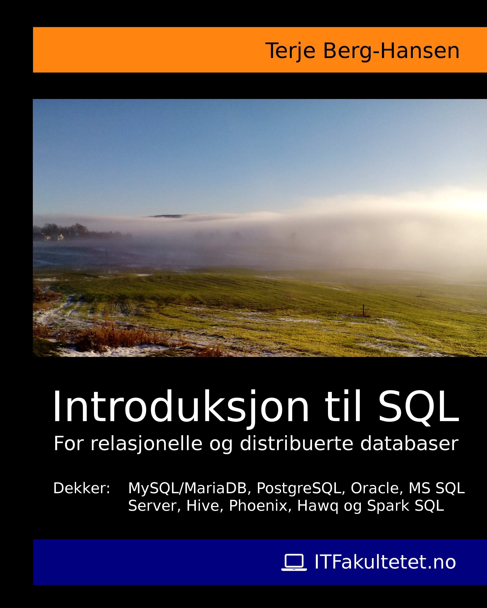
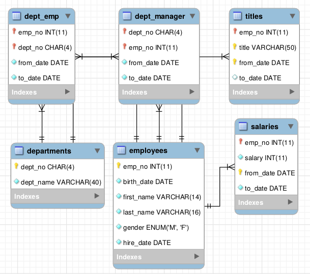
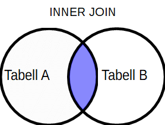
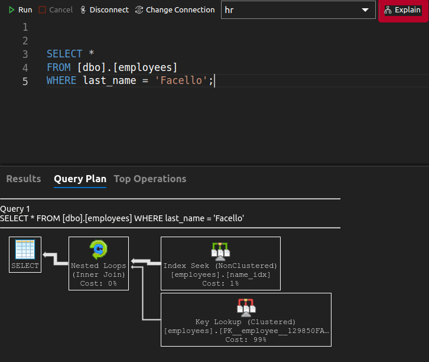
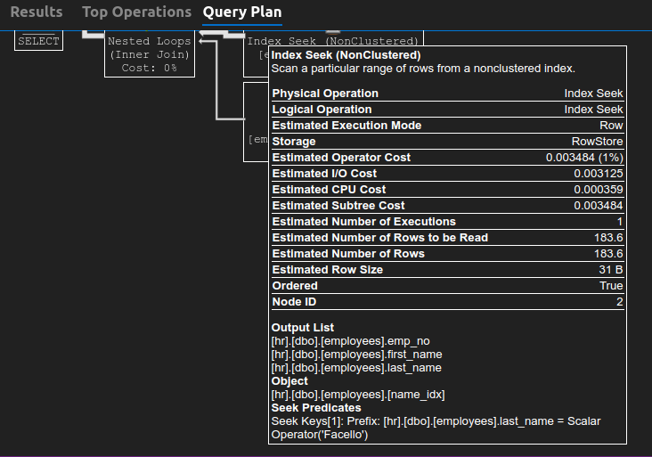
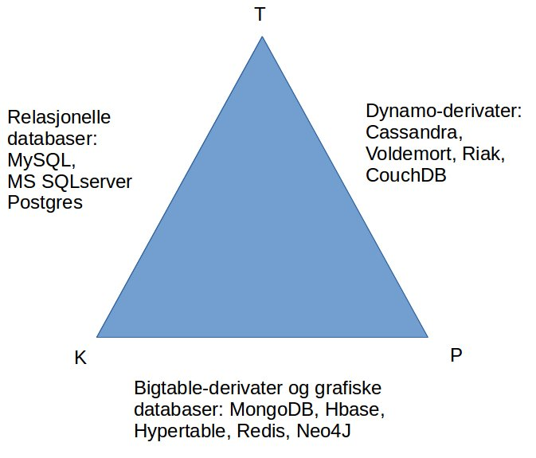

Introduksjon til SQL
for relasjonelle og distribuerte databaser
Terje Berg-Hansen
Ravi Alexander Brunsvik
ITFakultetet.no
Introduksjon til SQL
Av Terje Berg-Hansen og Ravi Alexander Brunsvik
Copyright © 2020 ITFakultetet.no – Alle rettigheter reservert
Publisert av ITFakultetet, Kåsabakken 28, 3804 Bø i Telemark, Norge
ISBN-13: 978-1542801478
ISBN-10: 1542801478
Boken kan leses som supplement til bl.a. disse kursene hos ITFakultetet.no:
SQL for Viderekomne (påbyggingskurs)
PostgreSQL for Utviklere
Sjekk gjerne www.itfakultetet.no for kursbeskrivelser og aktuelle kursdatoer.
Velkommen som leser av denne introduksjonsboken om spørrespråket SQL. Boken er skrevet på bakgrunn av at vi gjennom flere år har holdt et 3-dagers SQL Grunnkurs med et 2-dagers påbygningskurs for en rekke norske bedrifter og organisasjoner, og erfaring fra disse kursene har dannet grunnlaget for både struktur, innhold, eksempler og ikke minst oppgavene til hvert kapittel. Boken kan dermed også godt leses som et supplement til disse kursene – for de som er i ferd med å ta dem, vurderer om de skal ta dem, eller har tatt dem tidligere og gjerne vil gjenoppfriske kunnskapene. Boken dekker boken også distribuerte databaser, noe det ikke er tid til på de allerede tettpakkede SQL-kursene.
Boken er skrevet for den komplette nybegynner, men bør også fungere bra for de som har jobbet en del med SQL fra før, kanskje uten noen formell opplæring i språket, men som har «Googlet» løsninger, klippet og limt litt, og gjerne vil ha litt større forståelse for hva som egentlig foregår når SQL-setningene gir forventede eller overraskende resultater – eller ikke vil kjøres i det hele tatt.
Alle tilbakemeldinger mottas med takk, spesielt slike som kan forbedre boken og gjøre den mest mulig tilgjengelig og nyttig for leseren.
Terje Berg-Hansen Ravi Alexander Brunsvik
Kursleder Kursleder
ITFakultetet.no ITFakultetet.no
Epost: terje@itfakultetet.no Epost: ravi@itfakultetet.no
INNHOLD
Del 1 Relasjonelle Databaser 15
Kapittel 1 Introduksjon til relasjonelle databaser og SQL 16
Hva er en relasjonell database? 16
To ulike typer relasjonelle databaser: OLTP og OLAP 17
Andre modeller for organisering av data 18
DDL (Data Definition Language) 18
DML (Data Manipulation Language) 19
DCL (Data Control Language) 19
TCL (Transaction Control Language) 19
SQL-standarder og dialekter 19
Kort om Microsoft SQL Server 21
Hvilken RDBMS bør jeg velge til eksemplene og oppgavene i denne boken? 22
Boyce-Codd normalform (BCNF) 24
Normalformene forklart med én setning 24
Normalisering forklart med et eksempel 25
Kapittel 2 DDL (Data Definition Language) CREATE, ALTER, DROP, TRUNCATE, COMMENT og RENAME 28
Forholdet mellom en enhet og dens egenskaper 28
Eksempel på modellering av en enkel database 32
Opprette og endre databaser 33
Tegnsett, språk og lagringsformat 42
Endre eksisterende tabeller 43
Endre begrensninger ved en kolonne 47
Opprette og fjerne begrensninger på tabell-kolonner 48
Legge til begrensninger når en tabell lages 48
Oracle / MySQL/ MariaDB / Microsoft SQL Server / PostgreSQL : 48
Legge til begrensninger etter at en tabell er laget 49
PostgreSQL / MySQL / MariaDB / Oracle / MS SQL Server 49
MS SQL Server / Oracle / MariaDB / PostgreSQL 50
SQL Server / Oracle / MariaDB / PostgreSQL 50
SQL Server / Oracle / PostgreSQL: 50
Fjerne primær- og fremmednøkler 51
Kapittel 3 DML (Data Manipulation Language) SELECT, INSERT, UPDATE og DELETE 54
Hente en enkelt kolonne fra en tabell 55
Hente flere kolonner / felt fra en tabell 55
Hente alle kolonner fra en tabell 56
Hente alle unike rader fra en kolonne i en tabell 57
Begrense antall rader i resultatet 57
Begrense antall rader med Microsoft SQL Server 58
Begrense antall rader med Oracle 58
Begrense antall rader med MySQL/MariaDB og PostgreSQL 58
Sortere data med ORDER BY 59
ORDER BY med begrensning av resultatet i Oracle 60
Sortering etter flere kolonner 60
Sortering etter språk med MySQL / MariaDB 62
Sortering etter språk med PostgreSQL 65
Sortering etter språk med Microsoft SQL Server 66
Sortering etter språk med Oracle 69
Filtrering av data med WHERE 70
Flere eksempler på filtrering 71
Filtrere etter en gitt verdi 71
Filtrere etter kolonner som ikke har en gitt verdi 72
Filtrere etter en rekke gitte verdier 72
Filtrere etter rader hvor det ikker er satt noen verdi for en kolonne 72
Kombinerte betingelser med AND, OR og IN 73
Filtrering med bruk av jokertegn 77
Skille mellom små og store bokstaver ved bruk av jokertegn 77
Fulltekstsøk med PostgreSQL 80
Fulltekstsøk med Microsoft SQL-server 83
Kapittel 4 Funksjoner og beregnede kolonner 85
Kalkulerte kolonner med MySQL / MariaDB og PostgreSQL: 89
Kalkulerte kolonner med Microsoft SQL Server: 90
Kalkulerte kolonner med Oracle: 90
Kalkulering via underspørringer med MySQL / MariaDB: 90
Kalkulering via underspørringer med PostgreSQL: 91
Kalkulering via underspørringer med Oracle: 91
Kalkulering via underspørringer med Microsoft SQL Server: 92
CASE med MySQL / MariaDB, PostgreSQL, MS SQL Server og Oracle 93
Funksjoner for manipulering av tekst: 95
Noen av de vanligste tekst-funksjonene: 95
Funksjoner for manipulering av Dato og Tid 97
Datofunksjoner med MySQL / MariaDB 98
Navn på måneder og dager på ulike språk 98
Beregne differansen mellom to datoer med funksjonen TIMESTAMPDIFF() 101
Datofunksjoner med Microsoft SQL Server 102
Eksempler på bruk av datofunksjoner med Microsoft SQL Server 102
Navn på måneder og dager på ulike språk 103
Eksempler fra HR-databasen 104
Eksempler fra HR-databasen 106
Datofunksjoner med PostgreSQL 106
Egne funksjoner med PostgreSQL 108
Kapittel 5 Aggregering av data 111
Aggregering med distinkte verdier 115
Kombinering av aggregerte funksjoner 115
Kapittel 6 Gruppering av Data 116
Gruppering av data med GROUP BY 116
Filtrering av grupper med HAVING 117
Gruppering med ROLLUP og CUBE 117
ROLLUP med MySQL / MariaDB 119
ROLLUP og CUBE med PostgreSQL 120
ROLLUP og CUBE med MS SQL Server 122
Kapittel 7 Underspørringer 124
Filtrere med underspørringer 124
Eksempel 1: Hent titlene til de ansatte i utviklingsavdelingen. 124
Eksempel 2: Hent dagens lønn for alle ansatte 125
Bruke underspørringer til å lage tabeller vi kan søke i med hovedspørringen 127
Bruke underspørringer til å lage beregnede kolonner 129
Koble data fra flere tabeller med Join-setninger 130
INNER JOIN skrevet med EQUIJOIN-syntaks 132
INNER JOIN skrevet med INNER JOIN-syntaks 133
Hvilken syntaks er best for å skrive en INNER JOIN-setning? 134
Joins med flere enn to tabeller 137
Et mer komplekst eksempel: 138
Sett-operasjoner med UNION, INTERSECT og EXCEPT 141
Kombinerte Spørringer med UNION og UNION ALL 141
Bruk av UNION og UNION ALL 141
Kombinerte spørringer med INTERSECT og EXCEPT 144
INTERSECT og EXCEPT med MS SQL server 144
PostgreSQL: PIVOT med CROSSTAB() 145
PIVOT og UNPIVOT med MS SQL Server 146
Kapittel 9 Vindusfunksjoner 148
Eksempel 1: Bruke en vindusfunksjon til å lage et løpenummer 148
Eksempel 2: Bruke en vindusfunksjon til å lage en rangering 151
Med MySQL/MariaDB, Oracle og PostgreSQL 151
Med Oracle, MySQL/MariaDB og PostgreSQL 156
Med Oracle, PostgreSQL og MySQL/MariaDB 158
Eksempel 5: Beregne lønn i kvantiler 159
NTILE() med MS SQL Server, PostgreSQL, MariaDB og Oracle 159
Aggregering med vindusfunksjoner 160
Eksempel 5: Lønnshistorikk med kumulativ sum 160
Med Oracle, PostgreSQL og MySQL/MariaDB 161
Eksempel 6: En overforenklet bank-applikasjon 162
Kapittel 10 Views og Materialized Views 170
Hvordan vise alle views i en database 174
For Oracle, PostgreSQL, MS SQL Server og MySQL/MariaDB 176
Ulike typer Materialized Views 177
Kapittel 11 Common Table Expressions (CTE) 178
Eksempel 1: CTE med SELECT 178
Eksempel 2: CTE med DELETE 179
Eksempel 3: CTE med Underspørring 181
Eksempel 2: DELETE uten CTE 183
Når bør vi bruke indekser? 184
GIN - Generalized Inverted Index 185
GIST - Generalized Search Tree 185
Hvor effektiv er indeksen? 187
Kapittel 13 Innsetting, oppdatering og sletting av data 189
Insetting av nye rader med INSERT INTO 189
Bruk av INSERT INTO uten feltnavn 190
Oppdatere eksisterende rader med UPDATE 190
UPSERT med MySQL / MariaDB 192
UPSERT med Microsoft SQL Server 195
Slette data med DELETE og TRUNCATE 196
Kapittel 14 Komplekse Datatyper: Arrays, JSON og XML 198
Innsetting av elementer i et array 199
Søke etter elementer i et array 199
Oppdatering og sletting av elementer i et array: 201
Operander og funksjoner for arrays i PostgreSQL 201
Operander som kun gjelder for JSONB 207
Kapittel 15 Geometriske og Geografiske data 212
Geografiske og geometriske data med MS SQL Server 212
Eksempel 2 – byer som punkter 215
Oversikt over OGC-metoder som støttes av SQL Server 216
Del 2 Distribuerte Databaser 218
Kapittel 16 Introduksjon til Distribuerte databaser 219
Hva er distribuerte databaser? 219
Hva betyr dette i praksis? 223
Kapittel 17 Apache Hive og HiveQL 224
Terminalklienten Beeline 224
Kapittel 18 Apache Phoenix - SQL for HBase 228
Selv-økende felt ved bruk av sekvenser 233
Spark SQL via Scala, Python, Java og R 238
Ubuntu / Debian / Linux Mint 241
Fedora / Red Hat / Centos: 241
Ubuntu / Debian / Linux Mint 242
Installasjon av PostgreSQL og pgAdmin 242
Installere PostgreSQL på en Linux-server (eller laptop e.l.) 243
Denne boken er delt i to hoveddeler:
Del 1 tar for seg SQL slik språket brukes i relasjonelle databaser, med eksempler på dialektforskjeller mellom de 4 store relasjonelle databasene: Oracle, MySQL/MariaDB, Microsoft SQL Server og PostgreSQL.
Del 2 introduserer distribuerte databaser og hvordan SQL blir brukt i stadig større grad innenfor det som gjerne kalles NoSQL-databaser, som på grunn av SQLs popularitet har blitt redefinert til å representere Not Only SQL. Her vises eksempler på forskjeller og spesialiteter knyttet til databaser som bruker innen Big Data, som Apache Hive, Phoenix (SQL for HBase), Hawq (distribuert PostgreSQL/Greenplum) og Spark SQL.
Hovedfokus i begge hoveddelene er selve språket SQL, med vekt på kompatibilitet og belysing av dialektforskjeller mellom ulike implementeringer av SQL. Boken inneholder også informasjon om nedlasting, installasjon og konfigurering av de databasehåndteringsystemene som omtales.
Som tittelen antyder er boken ment som en introduksjon til språket SQL og pretenderer ikke å gi noen utfyllende eller komplett beskrivelse av språket. Det er lenker til videre dokumentasjon og veiledninger for de ulike databasesystemene i de kapitlene hvor de omtales. Som all annen IT er også SQL i konstant utvikling, og ikke minst legges det hele tiden til ny funksjonalitet fra de ulike database-leverandørene. Så hvis du er i tvil, sjekk alltid dokumentasjonen til versjonen av den databasen du bruker SQL mot.
Når vi snakker om en database mener vi gjerne én av to ting, enten:
1) Databasehåndteringsystemet, som gjerne forkortes til DBMS (Data Base Management System) og er programvaren som administrerer systemet, dvs. organiserer dataene og styrer all lesing og skriving til databasen. Populære DBMSer er MySQL, PostgreSQL, Microsoft SQL Server og Oracle. En av disse er gjerne svaret på spørsmålet: Hvilken database bruker dere?
eller
2) Databasen, som er de lagrede data som håndteres av systemet. Dette er f.eks. betydningen som ligger i spørsmålet: Har du sikkerhetskopiert databasen?
Det finnes ulike typer databasesystemer. En vanlig måte å kategorisere dem på er etter datamodellen de bruker, dvs etter hvordan databasen organiserer data. Den mest brukte datamodellen er relasjonsmodellen, og en database som organiserer data etter relasjonsmodellen kalles en relasjonell database, ofte forkortet til det engelske akronymet RDBMS (Relational Data Base Management System).
En relasjonell database er m.a.o. en database som er organisert etter relasjonsmodellen.
Relasjonelle databaser har blitt delt inn i to ulike hovedtyper etter bruksområde: OLTP (Online Transaction Processing) og OLAP (Online Analytical Processing). Her er en kort beskrivelse av hovedforskjellene mellom dem:
En typisk OLTP-database er for eksempel knyttet til kassa-apparatet i en butikk. Hver gang en vare skannes registrerer databasen en ny rad med informasjon som varenummer, antall m.m., og til slutt lagres dette sammen med kortinformasjonen til kunden, tidspunktet for handelen osv. Det skrives mao nye rader til tabeller i databasen kontinuerlig, derav betegnelsen Transaction Processing, for slike databaser brukes primært til å prosessere transaksjoner.
En OLTP-database er en database som det skrives ofte til og leses sjelden fra. For når butikksjefen, eller butikk-kjedesjefen skal hente en oversikt over hvor mye potetgull som ble solgt i Bergen i uke 34 i forhold til uke 34 i fjor, går han eller hun ikke inn i kassasystemet og summerer opp. Det ville tatt altfor lang tid, og ville i tillegg vært en belastning på databasen som er opptatt med å hele tiden lagre nye varekjøp. I stedet knas og aggregeres data fra OLTP-databasene med jevne mellomrom og lastes over i OLAP-databaser, hvor det kan søkes i ferdig summerte tabeller.
Som det fremgår av begrepet Analytical Processing er OLAP-databaser er databaser som er laget for analyser. Det søkes kontinuerlig i OLAP-databasens tabeller, hvor data grupperes og summeres på ulike måter til ulike analyseformål. Typiske OLAP-databaser er Datavarehus og systemer for Business Intelligence (BI).
En OLAP-database er mao en database som det leses mye fra og skives sjelden til.
Relasjonsmodellen ble utarbeidet av Edgar Codd i 1969-70 . Databaser basert på denne modellen organiserer dataene i tabeller som igjen inneholder kolonner (også kalt felt). Normalisering er et sentralt begrep i relasjonelle databaser, og kort fortalt innebærer normalisering at data splittes opp i flere tabeller som så bindes sammen og reguleres av nøkler. En kolonne kan defineres som fremmednøkkel i en tabell, som f.eks. refererer til en kolonne som er definert som primærnøkkel i en annen tabell, og tabellene kan så bindes sammen ved hjelp av SQL-setninger som inneholder joins eller under-spørringer. Vi skal gå igjennom dette i detalj i senere kapitler.
Det finnes flere andre måter å organisere data i en database på enn relasjonsmodellen. Dokument-orienterte databaser organiserer f.eks. data i dokumenter som lagres i dokumentsamlinger, mye likt filer og mapper i et filsystem. Databasehåndteringsystemet MongoDB er et eksempel på en database som bruker dokumentmodellen, og MongoDB har utviklet et eget spørrespråk til å søke i databasens dokumenter.
Grafiske databaser organiserer data i noder og forbindelseslinjer (nodes and edges) og bruker heller ikke relasjonsmodellen. Den svensk-utviklede databasen Neo4j (utt: Neo-for-Jay) er f.eks. et mye brukt grafisk databasehåndteringsystem.
Kolonnebaserte databaser organiserer data i kolonner, som av og til igjen er organisert i kolonnefamilier, og dette gjør det bl.a. raskt å søke opp data fra hele kolonner av gangen. Kolonnebaserte databaser, som f.eks. HBase og Cassandra støtter vanligvis ikke relasjonsmodellen fullt ut, men det er blitt laget tilnærminger som gjør at man kan bruke i alle fall deler av SQL til å søke også i noen av disse databasene – f.eks. Apache Phoenix som tilbyr et SQL-grensesnitt mot HBase, og CQL som er et SQL-liknende spørrespråk for Cassandra.
SQL (Structured Query Language), som denne boken omhandler, er et spørrespråk som brukes mot relasjonelle databaser, og de senere årene også mot noen distribuerte databaser (se del 2 av denne boken).
SQL er et såkalt deklarativt språk - i motsetning til imperative, objektorienterte eller funksjonelle språk (som de fleste vanlige programmeringsspråk er) - og SQL-syntaksen er laget for å ligne mest mulig på vanlig engelsk. I praksis betyr dette at du skriver en spørresetning som ligner en del på hvordan du ville spørre etter data på vanlig engelsk, og uten å måtte tenke på hvordan data søkes opp. Du beskriver hvilke data du vil hente med SQL, databasehåndteringssystemet analyserer SQL-setningen, finner den mest effektive måten å gjennomføre søket på og gir deg tilbake en tabell med data.
SQL brukes både til å lese fra og skrive til databaser. SQL kan opprette og slette databaser og tabellstrukturer, sette inn data organisert i rader og kolonner, og SQL kan endre data, slette data og gjennomføre enkle og avanserte søk etter data i en eller flere tabeller.
For å skille de ulike bruksområdene fra hverandre har man delt SQL inn i følgende deler:
Med DDL kan man opprette databaser og tabeller, lage tabellstrukturer, views og indekser, samt endre og slette dem. Typiske nøkkelord innen DDL er feks.:
CREATE, ALTER, DROP, TRUNCATE, COMMENT, RENAME
Med DML kan man jobbe med data i de strukturene man har opprettet med DDL. Nøkkelord innen DML er f.eks.:
SELECT, INSERT, UPDATE, DELETEDCL inneholder setninger for å gi eller frata tilgangsrettigheter til brukere. Avhengig av hvilken DBMS man bruker kan rettigheter gis på ulike nivåer (database, tabell, rad, rute) for søk, innsetting, oppdatering sletting osv. Det er to hoved-nøkkelord innen DCL, som henholdsvis tildeler og tilbakekaller rettigheter:
GRANT og REVOKE
TCL brukes innenfor transaksjoner (se kapittel XXX), dvs. når vi vil sikre at hele (og ikke bare deler) av en databaseoperasjon utføres. TCL lar med andre ord SQL-setninger bli gruppert i logiske transaksjoner. Nøkkelord her er f.eks.:
BEGIN, COMMIT, SAVEPOINT, ROLLBACK, SET TRANSACTION Det finnes flere standarder for SQL, blant annet ANSI SQL etter den amerikanske organisasjonen American National Standardization Institute (ANSI) hvor SQL ble en standard i 1986 eller ISO SQL etter organisasjonen International Organization for Standardization (ISO) hvor SQL ble en standard i 1987. SQL-standarden er under utvikling, og den versjonen som er støttet av flest teknologier er fremdeles SQL-92, mens det finnes flere nyere versjoner: SQL-99 og SQL-2003, SQL-2008 og SQL-2011. Ulike versjoner av ulike databasesystemer støtter ulike deler av de ulike standardene – det er mao. tilnærmet umulig å vite hvilke deler av hvilken standard databasen din støtter uten å sjekke dokumentasjonen for den versjonen du bruker.
De mest populære databasesystemene har (dessverre eller heldigvis, avhengig av ståsted) lagt til egne funksjoner og språklige særegenheter til SQL-standarden, og ingen av dem følger den 100%. Dermed har det utviklet seg dialektforskjeller i språket, og vi skal bruke en del plass i dette kurset på å belyse disse forskjellene, som ikke minst blir viktige når man skal skrive SQL-setninger som skal være mest mulig portable mellom de ulike systemene.
I denne boken skal vi hovedsakelig se på dialektforskjellene mellom de fire mest brukte SQL-baserte relasjonsdatabasene:
MySQL / MariaDB
Oracle
Microsoft SQL Server
PostgreSQL
Disse fire RDBMSene forholder seg til SQL-standardene på litt forskjellige måter. De har også ulike funksjoner, datatyper og lagringsformater. Og ikke minst har de forskjellige server- og klientverktøy for administrasjon, drift, søk i data osv.
Men alle fire har en terminalklient, dvs. et klientverktøy som man kan koble seg til databaser med og utføre diverse oppgaver med via SQL. Og vi skal bruke disse terminalklientene gjennom denne boken. Dermed fjerner vi oss fra de grafiske verktøyenes ulike grensesnitt og får fokus på rene SQL-setninger, skrevet i et tekstbasert terminalvindu. Vi skal introdusere ulike grafiske verktøy også, for de har av og til mer funksjonalitet enn terminalklientene og gjør det som regel enklere å skrive og ta vare på lengre, komplekse SQL-setninger.
Det finnes selvfølgelig en rekke andre RDBMSer som bruker SQL som spørrespråk. Nettstedet https://db-engines.com har p.t. en rangering av 330 ulike DBMSer, hvorav 132 er av den Relasjonelle typen. Blant disse finner vi IBMs DB2, Microsofts Access, SQLite, Teradata, Netezza og den arkaiske dBase, en av de første RDBMSene man kunne installere på en PC og den første databasen denne forfatteren programmerte mot.
MySQL er et SQL-basert databaseadministrasjonssystem som er lisensiert under GPL. Denne databasetjeneren er veldig mye brukt, og er en vesentlig del av den såkalte LAMP-stacken, hvor M-en står for nettopp MySQL (og L for Linux operativsystem, A for Apache webserver og P for PHP programmeringsspråk). MySQL ble utviklet av bl.a. finnen Michael «Monty» Widenius (oppkalt etter hans datter My), som solgte MySQL AB til Sun Microsystems for 1 milliard dollar i 2008. Det hører med til historien at Monty skal ha lagt inn en klausul i kjøpsavtalen om at Sun ikke fikk lov til å videreselge MySQL til Oracle, siden det var frykt for at Oracle skulle kjøpe den irriterende gratis-konkurrenten MySQL og f.eks. legge den ned. Det ingen på det tidspunktet klarte å forutse var det som faktisk skjedde, nedlig at Oracle i 2010 kjøpte opp hele Sun og dermed også ble eier og videreutvikler av MySQL.
«Monty» Widenius og andre kjerneutviklere startet sitt eget selskap MariaDB AB (oppkalt etter Montys andre datter Maria) med en kopi av kildekoden til MySQL, som de siden har videreutviklet. MariaDB er fremdeles en "drop in replacement" for MySQL, og mange har valgt å bruke denne, mens andre foretrekker Oracles MySQL.
Oracle Database (også kalt Oracle RDBMS eller bare Oracle) er et object-relational database management system. (ORDBMS), og den ekstra O’en henspeiler på at den er objekt-orientert, slik at man kan lage database-objekter som bla. kan arve egenskaper fra hverandre osv. Oracle-databasen er utviklet og selges av av Oracle Corporation.
Larry Ellison, Bob Miner og Ed Oates startet selskapet Software Development Laboratories (SDL) i 1977, og dette firmaet utviklet den første utgaven av Oracle. Dagens versjon(er) av Oracle er en sofistikert RDBMS med en rekke konfigurerbare parametre, en relativt dyr lisens og en stor brukermasse.
Det finnes en rekke grafiske klienter som kan kommunisere med Oracle, bl.a. Oracle SQL Developer som kan lastes ned gratis fra Oracles nettsider. Toad er en annen populær klient, som også finnes som en gratis plugin til Eclipse (som kan lastes ned gratis fra www.eclipse.org).
Oracle kommer også med en terminalklient - sqlplus – som er best egnet til å kjøre SQL-skript som er skrevet i en annen editor, lagret som en tekstfil og som sendes til terminalklienten. Men det er også mulig, om enn lite elegant, å skrive SQL rett i kommandolinjen til sqlplus.
Microsoft SQL Server ble opprinnelig utviklet av Microsoft sammen med selskapene Sybase og Ashton Tate og «portet» til OS/2 i 1988. (Sybase ble forøvrig kjøpt av SAP i 2010 og er idag en integrert del av SAP). Spørrespråket som benyttes av Microsoft SQL Server er Transact-SQL, en implementasjon av ANSI/ISO standard SQL. SQL Server 7.0. fra 1998 inkluderte OLAP-funksjonalitet og i 2000-versjonen ble det lagt til rapporterings-funksjoner. Nye versjoner med forbedringer og tillegg har blitt utviklet via SQLServer 2005, 2008, osv til vi ved denne bokens tilblivelse er på versjonen SQL Server 2017.
To interessante endringer skjedde med SQL Server 2016: Det ble lansert en Linux-versjon av serveren, som frem til da bare hadde kunnet installeres på en Windows-server. Og en ved å registrere en utvikler-konto hos Microsoft kunne man fra da av laste ned og installere serveren gratis for utviklings- og demonstrasjons-formål. Noe bla. forfatteren av denne boken har benyttet seg av til undervisning ved diverse SQL-kurs. Installasjonen på en Linux-server er enkel og rask, og inneholder bla. en helt grei terminalklient for Linux, i tillegg til at man også kan installere Microsoft SQL Management Studio for Windows. Se vedlegg xxx for installasjonsveiledning.
PostgreSQL het opprinnelig Postgres og ble utviklet ved University of California, Berkeley i USA av bl.a. Michael Stonebraker,som en videreføring av databasen Ingres på 1980-tallet. Etter noen navneendringer (Post-Ingres, Postgres, Postgres95) ble det endelige navnet PostgreSQL valgt i 1996 for å understreke at databasen nå - takket være studentene Andrew Yu og Jolly Chen - støttet SQL som spørrespråk.
I likhet med Oracle er PostgreSQL en såkalt object-relational database management system (ORDBMS). Forøvrig legger PostgreSQL vekt på at den forsøker å følge standarder strikt, bl.a. ANSI-SQL:2008-standarden, og at den er bygget slik at det er enkelt for andre å lage utvidelser til den. Og det finnes en rekke slike utvidelser man kan installere og bruke sammen med kjernefunksjonene i databasen. En av de mest kjente er antagelig PostGIS, som gjør PostgreSQL til et komplett system for håndtering av geografiske data. PostgreSQL har antagelig den beste terminalklienten av de fire - psql - som er enkel og oversiktlig å bruke og har en rekke funksjoner. Av grafiske verktøy er pgAdmin4 det meste avanserte når denne boken publiseres..
PostgreSQL er den minst brukte av de fire store RDBMSene, men øker stadig i bruk, spesielt siden versjon 9 ble lansert, hvor bl.a. databasens hastighet økte vesentlig. Utviklingen skjer gjennom en kjernegruppe sammensatt av utviklere fra ulike organisasjoner, og det er mao. ikke ett firma alene som har eierskap til produktet.
Alle de 4 nevnte RDBMSene kan brukes til å gjennomføre eksemplene og oppgavene i denne boken. Både MySQL og MariaDB kan brukes. Hvis du velger å bruke MariaDB, kan du fremdeles laste ned MySQL Workbench fra Oracle, og kobler denne til MariaDB-installasjonen din. MySQL Workbench fungerer stort sett like bra for begge databasene, men har ikke like god støtte for MariaDB når det gjelder enkelte funksjoner, som for eksempel «intellisense» (dvs. at du får forslag til utfylling av feltnavn, funksjoner osv).
Normalisering (av databaser) er en teknikk for å designe tabeller i relasjonsdatabaser slik at man forhindrer dobbeltlagring av informasjon og minimerer kilder til feil. Hvis samme informasjon lagres på flere ulike steder i en tabell, risikerer man at en endring fører til at databasen blir inkonsistent når noe endres. Hvis for eksempel en persons adresse er lagret på flere ulike steder i tabellen og adressen endres kun på ett av stedene kan man ikke lenger vite hvilken adresse som er riktig.
En database normaliseres ved å designe den slik at den tilfredsstiller kravene til et hierarki av normalformer som bygger på hverandre. For at en database skal være normalisert på tredje normalform (som ofte er det anbefalte) må den også oppfylle kravene til første og andre normalform. Høyere normaliseringsgrad fører vanligvis til flere tabeller i databasen, noe som kan gi redusert ytelse (hastighet) fordi man må koble tabellene sammen igjen med Joins eller Underspørringer for å finne sammensatt informasjon. Som vi skal se er det derfor ikke alle typer databaser som egner seg til normalisering.
Normalisering er basert på matematisk relasjonsalgebra og beskriver forholdet mellom enheter og enhetenes attributter eller egenskaper. En enhet identifiseres gjennom en identifikator, som er en attributt eller en kombinasjon av attributter som er unik for den aktuelle enheten. En enhet kan f.eks. være en person, en vare, et firma e.l. og attributtene er da egenskaper ved disse, slik som fornavn, etternavn, vekt, adresse, organisasjonsnummer osv. Gjennom å normalisere en database organiserer vi enhetene og deres attributter på en optimal måte ved at ulike typer enheter skilles ut i ulike tabeller og en enhets egenskaper samles i én unik tabellrad.
Nedenfor følger en kortfattet gjennomgang av hva de ulike normalformene innebærer.
En tabell oppfyller første normalform hvis alle kolonner i tabellen er atomære. Det vil si at vi splitter data opp i så mange kolonner som det er naturlig å dele opp data i. For eksempel kan vi dele en persons fulle navn over to eller tre kolonner: Fornavn, evt. Mellomnavn og Etternavn.
Tabellen under bryter første normalform fordi verdiene ikke er atomære;
navn |
telefonnummer |
|---|---|
Ivar Bø, Hilde Svanhjell |
750 55 647 |
Ole Iversen |
750 13 113, 750 54 524 |
Nedenfor er samme data normalisert på
første normalform (1NF).
fornavn |
etternavn |
telefonnummer |
|---|---|---|
Ivar |
Bø |
750 55 647 |
Hilde |
Svanhjell |
750 55 647 |
Ole |
Iversen |
750 13 113 |
Ole |
Iversen |
750 54 524 |
Vi ser at Ivar Bø og Hilde Svanhjell har fått hver sin rad selv om de har samme telefonnummer, og at Ole Iversen har fått to rader siden han har to telefonnumre. Vi har også skilt fornavn og etternavn i to separate kolonner. Vi ser også at vi har måttet skrive navnet til Ole Iversen og telefonnummeret 750 55 647 to ganger, så 1NF er ikke nok til å unngå dobbeltlagring.
Hver rad i den nederste av tabellene over er unik. En primærnøkkel er et felt eller en kombinasjon av felter i en tabell som alene eller tilsammen er unik for hver rad. Det vil si at kombinasjonen av de tre feltene i tabellen kan defineres som en primær-nøkkel for tabellen. Det er også vanlig - og anbefalelsesverdig - å legge til et eget felt med for eksempel et løpenummer, og så definere dette feltet som primær-nøkkel for tabellen.
For at en relasjon skal være på andre normalform må den oppfylle kravene til første normalform. I tillegg skal alle felt som ikke er definert som nøkler være avhengige av hele primær-nøkkelen.
Derfor skal alle felt som ikke er nøkler være avhengig av hele primærnøkkelen. Eksempler på primærnøkler er Personnummer i en tabell med personer, organisasjonsnummer i en tabell med organisasjoner, kombinasjon av et dato-felt og en ansatt-id for en tabell med daglige arbeidsplaner etc. At et felt er avhengig av en primærnøkkel vil si at det er knyttet opp til denne, slik for eksempel feltene fornavn, etternavn, epost, telefon osv. er knyttet til ett og bare ett personnummer. Putter vi telefonnummeret til Per på samme rad som personnummeret til Pål, bryter vi 2NF (dersom personnummeret er primærnøkkel i tabellen).
For at en relasjon skal være på tredje normalform må den oppfylle kravene til første og andre normalform. I tillegg skal alle kolonner som ikke er en del av primærnøkkelen være gjensidig uavhengige av hverandre.
At felter som ikke er en del av primærnøkkelen er uavhengige av hverandre betyr i praksis at man skal kunne bytte epost uten samtidig å måtte bytte telefonnummer, at et firma kan bytte adresse uten å måtte bytte daglig leder osv., gitt at epost, telefonnummer, adresse og daglig leder er kolonner som ikke er en del av primærnøkkelen i de tabellene de opptrer i.
Denne denne normalformen er oppkalt etter Edgar Boyce og Raymond Codd. En relasjon er på Boyce-Codd normalform hvis alle attributter som er en del av en nøkkel, ikke er avhengig av andre nøkler. Vanligvis vil relasjoner som er på tredje normalform også oppfylle kravene til BCNF, men BCNF er litt strengere enn 3NF, hvor nøkler i prinsippet kan være avhengige av andre nøkler.
Med utgangspunkt i eden som avsverges i amerikanske rettssaler - to tell the truth, the whole truth and nothing but the truth – har smarte hoder kommet opp med denne setningen for å forklare de tre første normalformene:
Alle felt som ikke er definert som nøkler skal være avhengige av primær-nøkkelen (1NF), hele primær-nøkkelen (2NF) og ikke noe annet enn primær-nøkkelen (3NF)
Jeg har ovenfor forsøkt å forklare normalisering med et ikke-matematisk språk. Det finnes også presise matematiske formler for hver normalform (forklart for eksempel på Wikipedia). Men for mange vil antagelig et eksempel være mer oppklarende:
Eksempel: Vi skal bestille en pizza. Det finnes tre ulike typer toppinger vi kan velge til pizzaene på denne restauranten:
type ost
type kjøtt
type grønnsak
Så vi bestiller 2 pizzaer og velger følgende toppinger:
Pizza Topping Toppingtype-------- ---------- -------------1 mozzarellaost1 pepperonikjøtt1 olivengrønnsak2 mozzarellakjøtt2pølseost2paprikagrønnsak
Men vent litt - mozzarella kan ikke være både ost og kjøtt! Og pølse er ikke en ost!
For å unngå denne typen feil, for å sikre at mozzarella alltid vil være topping av typen ost, kan vi bruke en egen tabell for dette, slik at vi skriver det ned kun på ett sted:
Pizza Topping-------- ----------1 mozzarella1 pepperoni1 oliven2 mozzarella2pølse2paprikaTopping Topping Type---------- -------------mozzarellaostpepperonikjøttolivengrønnsakpølsekjøttpaprikagrønnsak
Ved å skille ut topping-typen i en egen tabell, kan vi slå opp i denne tabellen og se der hvilken type topping mozzarella eller paprika er, og få det riktig hver gang. Vi har nomalisert på 3NF (og også på BCNF).
Databaser som brukes til online transaction processing (OLTP) er typisk mer normalisert enn de som brukes til online analytical processing (OLAP). OLTP-applikasjoner har et stort antall mindre transaksjoner - slik som oppdatering av salgsdata i en kasse på et supermarked. Det forventes at hver transaksjon vil bli gjennomført uten at databasen blir inkonsistent.
Databaser som brukes til OLAP-operasjoner er først og fremst "read mostly"-databaser. OLAP-applikasjoner trekker ofte ut historiske data som er samlet inn over en lang tidsperiode. For en slik database kan "denormaliserte" data lette arbeidet for applikasjoner innen business intelligence.
Spesielt vil dimensjonelle tabeller organiserte i stjerne-skjemaer ofte inneholde denormaliserte data. Slike data må kontrolleres nøye av ETL-prosesser (ETL: Extract, Transform, Load). Et normalisert alternativ til stjerne-skjema er snøflak-skjema. I praksis bruker OLAP-databaser fremdeles ofte denormaliserte skjemaer.
ACID (Atomicity, Consistency, Isolation, Durability) er et sett av krav som sikrer at operasjoner på databaser utføres pålitelig.
Atomære operasjoner
En operasjon på en database er atomær hvis DBMSen sikrer at hvis en del av operasjonen ikke utføres så utføres heller ikke andre deler – alt eller ingenting. Idéen er å splitte opp en databaseoperasjon i sine enkeltdeler, utføre en del av gangen, og ha mulighet til å «gå tilbake til start» (eller et fastsatt stopp-punkt) dersom noe går galt. Viktigheten av dette kan enkelt illustreres med et eksempel fra en bank-transaksjon hvor oppgaven er å overføre et 1000 kroner fra konto A til konto B. Del 1 er å ta pengene ut av konto A, dvs. senke saldoen på konto A med kr. 1000. Del 2 er å settes beløpet inn på konto B, dvs. øke saldoen på konto B med kr. 1000. Når begge delene er utført er transaksjonen gjennomført, og transaksjonen avsluttes i SQL med en commit Hvis noe derimot går galt underveis, f.eks. at linjen går ned eller en server dør etter del 1, slik at del 2 ikke kan utføres, skal man kunne oppheve hele transaksjonen, dvs. føre pengene tilbake til konto A, og evt. forsøke på nytt senere. En slik tilbakeføring kalles i SQL for en rollback.
Konsistens
Databasen skal være konsistent både før en operasjon utføres og etter at den er avsluttet (men den kan være inkonsistent mens operasjoner utføres). I relasjonsdatabaser opprettes derfor nøkler som inneholder regler som sikrer integriteten både innenfor og mellom tabeller. En primærnøkkel kan for eksempel opprettes på et felt (eller en kombinasjon av felt) i en tabell for å sikre at feltet er unikt, siden to rader ikke kan ha samme primærnøkkel-verdi. Så hvis for eksempel et felt som inneholder personnummer blir definert som primærnøkkel, så sikrer vi at det ikke kan finnes flere rader med samme personnummer. En rad inneholder mao informasjon knyttet til en person, og det kan ikke finnes to rader for samme person. Vi kan også opprette fremmenøkler, som er nøkler som knyttes til et felt i en tabell og refererer til et tilsvarende felt (som regel primærnøkkelen) i en annen tabell. For eksempel kan vi ha en tabell med ansatte og en annen tabell med avdelinger. I tabellen over ansatte legger vi inn et felt sm heter avdelings_id som vi definerer som en fremmenøkkel som refererer til primærnøkkelen i tabellen over avdelinger. Så når en ansatt har avdelings_id 5, kan vi slå opp i avdelings-tabellen og se at avdelingen med primærnøkkel-verdi 5 er utviklingsavdelingen. Navnet til avdelingen ligger som et annet felt i avdelings-tabellen, og hvis den skulle skifte navn, vil vi kun gjøre det der, og alle aktuelle ansatte vil fremdeles være knyttet til avdeling 5, som nå har et nytt navn. Integriteten mellom tabellene sikres ved at vi nå kan lage en regel som gjør det ulovlig å legge inn en ny ansatt i ansatte-tabellen med et avdelingsnummer som ikke finnes i avdelings-tabellen. Og vi kan lage en regel som sier at vi ikke får lov til å slette en avdeling i avdelings-tabellen hvis det finnes ansatte i ansatte-tabellen som er knyttet til dens avdelings_id. Så vi kan unngå vanlige feilkilder som å knytte en ansatt til en avdeling som ikke finnes, eller slette en avdeling som har ansatte knyttet til seg, og slik bevare integriteten i databasen.
Isolasjon
Moderne RDBMSer er gjerne servere med mange samtidige brukere, og det er viktig å isolere disse fra hverandre slik at de ikke kan endre samme data samtidig. Isolasjon innebærer at operasjoner ikke kan arbeide med data som er i en midlertidig endret tilstand på grunn av at andre prosesser arbeider med dem. Dette er ikke noe problem hvis systemet arbeider serielt – hvis det bare behandler en og en operasjon. Men i praksis designes databasesystemer for at mange prosesser skal kunne arbeide parallelt. Prinsippet om serialiserbarhet innebærer at operasjoner skal utføres slik at det finnes en seriell utførelse som gir samme resultat. Rekkefølgen av operasjonene kan ha stor betydning for resultatet, men det skal ikke være slik at forskjellige operasjoner blandes sammen og gir et helt uventet resultat.
Varighet innebærer at resultatet av utførte transaksjoner aldri kan forsvinne. Dette innebærer at databasen skal takle ulike forventede og ikke-forventede hendelser, som for eksempel systemkrasj eller fysiske feil.
Eksterne ressurser
Comparison of Different SQL Implementations This comparison of various SQL implementations is intended to serve as a guide to those interested in porting SQL code between various RDBMS products, and includes comparisons between SQL:2008, PostgreSQL, DB2, MS SQL Server, MySQL, Oracle, and Informix.
I dette kapitlet skal vi se på hvordan vi lager en database med SQLs Data Definition Language (DDL) . Kapitlet forutsetter at du har tilgang til en RDBMS. Se vedlegg 1 for hvordan du installerer en av RDBMSene: Oracle Express, Microsoft SQL Server, MySQL, MariaDB eller PostgreSQL.
Nøkkelordene CREATE, ALTER, DROP, TRUNCATE, COMMENT og RENAME brukes for å implementere DDL til å opprette, endre og slette databaser, tabeller og kolonner.
Før vi går igang med å opprette en database kan det være nyttig med en enkel gjennomgang av hvordan vi modellerer en database, dvs. designer en datamodell og implementerer denne i kolonner og tabeller og regulerer forholdet mellom disse slik at vi sørger for best mulig dataintegritet og minimerer dobbeltlagring og feilkilder.
Forholdet mellom en enhet og dens egenskaper (attributter) er avgjørende for hvordan vi strukturerer data i tabeller. Dette forholdet kan inndeles i tre hovedkategorier:
1 til 1 (1:1)
1 til mange (1:n)
mange til mange (n:m)
Denne kategorien omfatter f.eks. forholdet mellom en person og personens etternavn, siden en person kun kan ha ett etternavn, eller en bedrift og dens organisasjonsnummer, en bok og dens tittel osv. Her er et eksempel. Vi lager en tabell «kontakter» som skal inneholde oversikt over kontaktene våre. Til å begynne med lager vi et felt som heter «kontakt_id» som vil være et unikt løpenummer som vi kan bruke som primærnøkkel (identifikator) for hver kontakt. Så legger vi inn feltene «fornavn», «etternavn» og feltet «epost» hvor vi vil legge inn kontaktens epostadresse, og så evt. andre felt vi trenger.
Hovedregelen er å lage en kolonne for hver egenskap som har et 1 til 1-forhold til enheten, f.eks. slik:
Tabell over kontakter med navn og epost (kun en epostadresse per kontakt):
+------------+---------+-----------+---------------+
| kontakt_id | fornavn | etternavn | epost |
+------------+---------+-----------+---------------+
| 1 | Jo | Li | jo@li.no |
| 2 | Lykke | Li | lykke@li.no |
| 3 | Hans | Jensen | hans@jensen.no |
+------------+---------+-----------+---------------+
«1 til mange» - relasjoner har vi når en rad i tabell A kan lenkes til mange rader i tabell B, men en rad i tabell B kun er lenket til én rad i tabell A.
Denne kategorien omfatter for eksempel forhold der en medarbeider kun kan være ansatt i én avdeling, mens en avdeling kan ha mange ansatte, eller når en bok kan ha mange sider, men en side kan bare tilhøre én bok, en epostadresse kan bare tilhøre én person, men en person kan ha mange epostadresser osv. Når dette er tilfelle, vil vi skille ut de det er mange av i en egen tabell – f.eks. en tabell som heter ansatte, boksider, epostadresser etc.
Når vi begynner å legge inn data i tabellen vår over kontakter, oppdager vi at vi har opp til fire eller fem epostadresser for noen kontakter og kun en eller to for andre. Så vi lager en tabell til: «epost» med to felt: «kontakt_id» og «epost». Kombinasjonen av disse to feltene vil være unik (vi trenger bare å registrere en epostadresse til en kontakt én gang) og kan brukes som primærnøkkel. Feltet «kontakt_id» i epost-tabellen kan vi bruke til å slå opp navnet på kontakten epostadressen hører til. For å sikre integriteten mellom de to tabellene kan vi definere dette feltet som en fremmednøkkel som refererer til primærnøkkelen «kontakt_id» i tabellen «kontakter». Slik kan vi regulere et «1 til mange»-forhold mellom kontakter og epostadresser.
Eksempel som regulerer «1 til mange»-forhold mellom kontakter og epost ved å bruke to tabeller, en med kontakter (id, fornavn, etternavn) og en med eposter (kontakt_id, epost), hvor eposter er knyttet til kontakter via kontaktens id
Tabell 1: kontakter +----+---------+-----------+ | id | fornavn | etternavn | +----+---------+-----------+ | 1 | Jo | Li | | 2 | Lykke | Li | | 3 | Hans | Jensen | +----+---------+-----------+
Tabell 2: epost +------+-----------------------+ | id | epost | +------+-----------------------+ | 1 | jo.li@gmail.com | | 1 | jo.li@hotmail.com | | 2 | lykke.li@hotmail.com | | 2 | lykke.li@online.no | | 3 | hans.jensen@gmail.com | +------+-----------------------+
Vi ser at vi nå kan legge inn så mange epost-adresser vi har behov for per kontakt. Feltet id i tabellen epost refererer til feltet id i tabellen kontakter. Vi kan formalisere denne referansen ved å definere id-feltet i epost-tabellen som en fremmednøkkel som refererer til id-feltet i kontakter-tabellen, som vi kan definere som primærnøkkel for kontakter-tabellen. Gjør vi dette, kan vi sette opp databasen slik at vi ikke får lov til å legge inn en epost knyttet til en id som ikke finnes i kontakter-tabellen. Tilsvarende får vi heller ikke lov til å slette en kontakt hvis det er epost(er) knyttet til kontaktens id i epost-tabellen (restrict). Alternativt kan vi sette opp databasen slik at hvis vi sletter en kontakt, vil alle eposter knyttet til kontaktens id også bli slettet (cascade). Det siste kan være en praktisk måte å rydde opp på, men det kan også føre til at vi sletter ting som ikke skulle vært slettet. Derfor er restrict standard-instillingen for de fleste RDBMSer når vi definerer fremmednøkler.
«Mange-til-mange»-forhold har vi når
for eksempel en forfatter kan ha skrevet mange bøker og en bok
kan ha mange forfattere. Hvis vi har en tabell med bøker og en
tabell med forfattere, så vil vi da lage en tredje tabell som
regulerer forholdet mellom dem. Denne kan vi for eksempel kalle
«bok_forfatter» eller lignende, slik at vi allerede av
navnet skjønner hva tabellen inneholder. Tabellen trenger kun
2 felt: «bok_id» og «forfatter_id».
Kombinasjonen av disse vil være unik og kan defineres som
primærnøkkel for tabellen. Feltet «bok_id»
definerer vi som en fremmednøkkel som refererer til
tilsvarende felt i bok-tabellen, og feltet «forfatter_id»
definerer vi som en fremmednøkkel som refererer til
tilsvarende felt i forfatter-tabellen.
La oss ta
utgangspunkt i eksempel-databasen ovenfor. Hvis vi oppdager at vi har
en epost-adresse som skal brukes av mer enn en kontakt, har vi et
«mange-til-mange»-forhold mellom kontakter og eposter. En
kontakt kan ha mange eposter og en epost kan brukes av mange
kontakter. Epost-adresser av typen admin@domene.no,
support@domene.no o.l. kan illustrer dette. Slik kan vi modellere
databasen vår til å ta hensyn til dette:
Eksempel på regulering av «mange til mange»-forhold ved å bruke tre tabeller, en for kontakter, en for epost, og en som knytter kontakter til epost.
Tabell 1: kontakter +------------+---------+-----------+ | kontakt_id | fornavn | etternavn | +------------+---------+-----------+ | 1 | Jo | Li | | 2 | Lykke | Li | | 3 | Hans | Jensen | +------------+---------+-----------+
Tabell 2: epost +------------+-----------------------+ | epost_id | epost | +------------+-----------------------+ | 1 | jo.li@gmail.com | | 2 | jo.li@hotmail.com | | 3 | lykke.li@hotmail.com | | 4 | lykke.li@online.no | | 5 | hans.jensen@gmail.com | | 6 | admin@eksempel.no | | 7 | support@eksempel.no | +------------+-----------------------+
Tabell 3: kontakt_epost
+------------+----------+ | kontakt_id | epost_id | +------------+----------+ | 1 | 1 | | 1 | 2 | | 2 | 3 | | 2 | 4 | | 3 | 5 | | 1 | 6 | | 3 | 6 | | 2 | 7 | +------------+----------+
Vi ser av tabell 3: kontakt_epost at kontakten med id 1 - Jo Li – i tillegg til å være knyttet til epost 1 og 2 også er knyttet til epost 6 – admin@eksempel.no – og denne eposten er også knyttet til kontakt 3 - Hans Jensen.
Vi kan definere
feltet kontakt_id som en fremmednøkkel som referer til
feltet id i tabellen kontakter, og feltet epost_id
som en fremmednøkkel som refererer til feltet id i
tabellen epost. Det hjelper oss å bevare integriteten
mellom de tre tabellene.
Som et enkelt eksempel skal vi modellere en enkel database for lagring av data for et konsulentfirma. Databasen skal vise hvilken konsulent som jobber for hvilken kunde til ulike tider. Enhetene vi skal modellere databasen for er m.a.o. personer (konsulenter), organisasjoner (kunder) og tidsrom (oppdrag). Attributtene til personene er bl.a. navn, timelønn og personaldata. Attributtene til organisasjonene er bl.a. firmanavn, kontaktperson, adressedata o.l. Attributtene til tidsrom er bla. fra_dato og til_dato. Personer kan identifiseres via personnummer og organisasjoner gjennom organisasjonsnummer, og tidsrom kan identifiseres ved å kombinere identifikatorene for konsulent og kunde med en fra-dato og en til-dato, men vi kan også lage pseudo-identifikatorer som er unike for databasen og ikke knyttet til reelle data, som f.eks. automatisk genererte løpenumre, noe som ofte anbefales da det gir større stabilitet i forhold til endringer som ligger utenfor databasen, samtidig som man kanskje ikke har anledning til å lagre f.eks. personnummer.
Vi starter med å designe en tabell for kunder (organisasjoner), en tabell for konsulenter (personer) og en tabell for oppdrag (tidsrom). Her er et første utkast til hvordan disse tabellene kan se ut:
Tabellnavn: konsulent
Feltnavn:
konsulent_id, fornavn, etternavn, telefon, epost, gate, postnummer,
poststed, notater, registrert, oppdatert, endret_av
Tabellnavn: kunde
Feltnavn:
kunde_id, firmanavn, telefon, epost, gate, postnummer, poststed,
notater, registrert, oppdatert, endret_av
Tabellnavn: oppdrag
Feltnavn:
oppdrags_id, konsulent_id, kunde_id, fra_dato, til_dato, notater,
registrert, oppdatert, endret_av
MERK: De siste tre feltene i hver tabell, dvs feltene: registrert, oppdatert og endret_av er lagt til slik at vi kan logge bruken av databasen direkte i hver tabell. Idéen er at feltet registrert automatisk lagrer et tidsstempel hver gang vi setter inn en ny rad, mens vi legger inn et tilsvarende tidsstempel manuelt i feltet oppdatert hver gang vi gjør en endring i tabellen. I feltet endret_av kan vi sette inn brukernavnet på den personen som gjør endringene. (De ulike databasehåndteringssystemene har funksjoner som henter frem brukernavnet på den som er innlogget i databasen). Slik for vi en enkel oversikt over hvem som har gjort hva til hvilken tid.
Når vi lager disse tre tabellene må vi samtidig bestemme hvilken datatype hvert felt kan inneholde. For eksempel må vi bestemme om feltet telefon skal være av typen tall eller tekst. Siden vi ikke kommer til å utføre noen regneoperasjonen med dette feltet, kan det være smart å sette det til å være et tekstfelt, f.eks. av datatypen varchar (variable characters). Da kan vi også legge inn retningsnummer med et plusstegn foran, f.eks. +47 for Norge.
Hvordan vi konkret oppretter databaser, tabeller og felt forklares senere i dette kapitlet. Det er enkelt å gjøre det med SQL, og det er også mulig å gjøre det via grafiske brukergrensesnitt, eller gjennom å designe et såkalt ER-diagram eller EER-diagram.
ER diagram står for Entity Relationship Diagram, og EER står for Enhanced Entity Relationship Diagram. Den siste er en utvidet, mer detaljert versjon av den første. Begge diagrammene gir en grafisk oversikt over tabellenes struktur samt over forholdet mellom dem – f.eks. hvilke felt som er definert som nøkler i tabellene. Avsnittet nedenfor viser et EER-diagram for kontakt-databasen i eksemplet over.
To do ...
Det er enkelt å opprette, endre og slette databaser med SQL, men det krever (heldigvis) at man har tilgangsrettigheter til å gjøre dette.
Syntaksen for å opprette og slette databaser er ganske lik for de ulike DBMSene, men de varierer når det kommer til å angi tegnsett, sorteringsspråk og ikke minst lagringsformat.
Har du tilgangsrettigheter som gir deg adgang til å lage nye databaser, er det enkelt å opprette dem med SQL. Syntaksen for å opprette en database med default-instillinger er enkel:
CREATE DATABASE <navn>;Eller slik:
CREATE SCHEMA <navn>;Som vi ser er SCHEMA og DATABASE synonyme i MySQL og MariaDB. Databasen vil få default tegnsett og språk, men vi kan spesifisere disse verdiene ved å legge til noen parametre:
CREATE DATABASE <navn> ENCODING <tegnsett> COLLATE "<språk>"
For eksempel kan vi lage en ny database, konsul med tegnsett utf8 og dansk-norsk sorterings-språk, utf8_danish_ci, slik:
CREATE DATABASE konsul CHARACTER SET utf8 COLLATE utf8_danish_ci;
Vi kan sjekke at databasen ble riktig laget med kommandoen show create database, slik:
show create database konsul;
+----------+----------------------------------------------------------------------------------------+ | Database | Create Database | +----------+----------------------------------------------------------------------------------------+ | konsul | CREATE DATABASE `konsul` /*!40100 DEFAULT CHARACTER SET utf8 COLLATE utf8_danish_ci */ | +----------+----------------------------------------------------------------------------------------+ 1 row in set (0.00 sec)
For å opprette en bruker kurs, med passord kurs123 ,som har full tilgang til databasen, kan vi bruke følgende setning:
GRANT ALL ON konsul.* TO 'kurs'@'%' identified by 'kurs123';
MERK: Setningen over oppretter samtidig brukeren kurs og tildeler brukeren passordet kurs123. Hvis brukeren finnes fra før, sløyfer vi bare identified by 'kurs123' i setningen.
Vil vi begrense tilgangen slik at brukeren kurs kun kan logge seg på fra maskinen MySQL/MariaDB er installert på, kan vi erstatte %-tegnet (som angis innlogging fra alle domener), til localhost, slik:
GRANT ALL ON konsul.* TO 'kurs'@'localhost' identified by 'kurs123';
Sjekk gjerne dokumentasjonen for MySQL/MariaDB for hvordan man tildeler mer detaljerte tilgangsrettigheter til databaser og tabeller.
For å kunne opprette en ny database i PostgreSQL må man være superbruker eller ha tilgangs-rettigheten CREATEDB. Syntaksen for å opprette en database med default-instillinger er enkel:
CREATE DATABASE <navn>;Databasen vil få default tegnsett (mest sannsynlig utf8), og språk og eier av databasen vil være den brukeren som oppretter den. Vil man opprette en database for en bruker som ikke finnes, må brukeren opprettes først. Det kan man gjøre med denne setningen:
CREATE USER <brukernavn> WITH PASSWORD '<passord>';
Vi kan spesifisere disse verdiene ved å legge til noen parametre:
CREATE DATABASE <navn> WITH OWNER <brukernavn> ENCODING <tegnsett> COLLATE "<språk>" TEMPLATE <databasemal>
For eksempel kan vi lage en ny database, konsul, med eier kurs, tegnsett utf8 og norsk sorterings-språk, nb_NO.utf8, slik:
CREATE DATABASE konsul WITH OWNER kurs ENCODING utf8 LC_COLLATE "nb_NO.utf8" TEMPLATE template0;
MERK: Siden nb_NO.utf8 ikke er default for standard-malen for nye databaser: template1, må vi enten lage en nye mal, eller bruke template0. Bruken av maler for databaser ligger utenfor dette kurset, men hvis du skal bruke PostgreSQL mye, kan det være lurt å sjekke dokumentasjonen for hvordan maler brukes og lages. Sjekk også gjerne dokumentasjonen for hvordan man tildeler mer detaljerte tilgangsrettigheter til databaser og tabeller i PostgreSQL.
NB! PostgreSQL skiller mellom begrepene database og schema. I PostgreSQL kan en database inneholde ett eller flere schema. Ved opprettelsen av databasen lages det et schema ved navn public, som brukes som default schema, men man kan opprette flere etter ønske - f.eks. ett for utvikling, ett for test og ett for produksjon. Schema opprettes med denne syntaksen:
CREATE SCHEMA <navn>
Eksempler:
create schema prod; create schema dev; create schema test;
kan vise hvilke schema som finnes i databasen med kommandoen \dn (describe namespace), slik:
\dn
List of schemas Name | Owner --------+---------- dev | kurs prod | kurs public | postgres test | kurs (4 rows)
Bruk av schemas ligger utenfor dette kurset, men man refererer til en tabell i et annet schema ved å sette schema-navn og punktum før tabellnavnet, f.eks. slik:
SELECT * FROM dev.konsul;
MERK: Du kan bruke komandoen: SHOW search_path; til å se hvilket schema som er default for den sesjonen du er inne i. Og du kan bruke kommandoen SET search_path TO <schema-navn> til å sette et schema som default (eller evt. flere schemas ved å sette dem etter hverandre med komma mellom).
SQL har syntaks for å lage, endre og slette tabeller. Setningen for å lage en tabell er denne:
CREATE TABLE <navn> ( <kolonnenavn> <datatype> [evt. andre tilleggskriterier for kolonnen], <kolonnenavn> <datatype> [evt. andre tilleggskriterier for kolonnen] ... ) [evt. andre tilleggskriterier for tabellen];
Som vi ser inneholder setningen en parentes hvor tabellens kolonner defineres. En tabell må ha minst én kolonne (felt). Har den flere kolonner listes de etter hverandre med komma mellom (men ikke etter den siste).Vi må spesifisere hver kolonne med minimum to informasjoner: navn og data-type, og kan også legge til andre parametre - som f.eks. en default-verdi, om feltet skal akseptere NULL-verdier (tomme felt), om det skal være primær- eller fremmed-nøkkel, begrensninger på hvilke verdier vi kan legge inn i kolonnen, hvilket språk kolonnens verdier skal sorteres etter og evt. kommentarer vi vil legge inn om kolonnen. Hvis vi ikke legger til valgfrie parametre, som f.eks. språk, vil kolonnen bli behandlet etter default-instillingene for disse parametrene, som f.eks. default sorterings-språk.
Etter parentesen med kolonne-definisjonene kan vi angi hvilket tegnsett og språk tabellen skal håndtere data med, hvilket lagringsformat som skal brukes osv.
La oss se noen eksempler på hvordan vi oppretter tabeller med de ulike RDBMSene.
Her er setningen som oppretter tabellen employees i vår test-database HR med MySQL / MariaDB.
CREATE TABLE employees ( emp_no int(11) NOT NULL, birth_date date NOT NULL, first_name varchar(14) NOT NULL, last_name varchar(16) NOT NULL, gender enum('M','F') NOT NULL, hire_date date NOT NULL, PRIMARY KEY (`emp_no`) ) ENGINE=InnoDB DEFAULT CHARSET=utf8;
Vi kan se av setningen over at ansattnummeret (emp_no) er satt som primærnøkkel, at lagringsformatet er InnoDB og tegnsettet er utf8. Det står NOT NULL etter alle feltene, det er med andre ord ingen valgfrie felt i denne tabellen - alle feltene må gis en verdi.
Legg merke til datatypen for kjønn (gender) som er enum('M','F') – datatypen enum angir at det kun er mulig å legge inn en av de verdiene som står inne i parentesen, i dette tilfelle bokstaven M eller bokstaven F (Male eller Female).
Slik ser den samme setningen ut med PostgreSQL. Vi oppretter først en egen datatype som vi f.eks. kan kalle gendertype , og så setter vi feltet gender til å ha denne datatypen, slik
CREATE TYPE gendertype AS ENUM ('M', 'F'); CREATE TABLE employees ( emp_no integer NOT NULL PRIMARY KEY, birth_date timestamp NOT NULL, first_name varchar(14) NOT NULL, last_name varchar(16) NOT NULL, gender gendertype NOT NULL, hire_date timestamp NOT NULL ) TABLESPACE pg_default;
Vi ser at datatypene er forskjellige fra MySQL og at primærnøkkel er satt til ansattnummeret (emp_no). TABLESPACE angir i hvilken mappe / disk datafilene skal lagres fysisk, og er satt til default for databasen.
Slik opprettes tabellen employees med Oracle og MS SQL Server:
CREATE TABLE EMPLOYEES
(EMP_NO INT PRIMARY KEY,
BIRTH_DATE DATE NOT NULL,
FIRST_NAME VARCHAR(255) NOT NULL,
LAST_NAME VARCHAR(255) NOT NULL,
GENDER CHAR(2) NOT NULL check(GENDER in ('M','F')),
HIRE_DATE DATE NOT NULL
);MERK: Hverken Oracle eller MS SQL Server har datatypen ENUM, men vi kan legge inn en CHECK CONSTRAINT som sjekker at feltet GENDER inneholder enten en M eller en F. Gender har en feltlengde på 2 bytes for å ta høyde for utf8-tegn, som består av 2 bytes hver. Merk også at selv med denne sjekken kan feltet fremdeles inneholde NULL, dvs. sjekken aksepterer tomme felt. Vil vi at et felt skal være obligatorisk, må vi også legge til NOT NULL selv om vi har en check constraint.
En vanlig praksis er å la kolonnen som skal være primær-nøkkel være selv-økende, slik at den automatisk øker med en verdi for hver ny rad som settes inn. Når vi setter inn nye rader, angir vi ikke noen verdi for primærnøkkelen, siden den lages automatisk av systemet. En av fordelene med dette er at løpenummerne ikke gjenbrukes av systemet. Slettes raden som har primærnøkkel med verdi 5, vil ikke noen ny rad senere kunne få primærnøkkel med verdi 5. Så hvis f.eks. en ansatt med en id generert av systemet slutter og slettes fra databasen, så vil ikke en ny ansatt kunne få vedkommendes id, siden løpenummere ikke gjenbrukes. Dermed unngår man mulige feil som kan oppstå ved at en ansatt får tilgang til dokumenter, adgangskort e.l. som er knyttet til en tidligere ansatts id.
Det er litt ulike måter å lage selvøkende primærnøkler på med de ulike RDBMSene:
Med MySQL og MariaDB lager vi en selv-økende primærnøkkel ved å føye til: AUTO_INCREMENT før eller etter PRIMARY KEY, f.eks. slik:
CREATE TABLE test (id int primary key auto_increment, notat text);
Vi kan angi en startverdi for id-feltet ved å sette auto_increment=<tall> etter parentesen, f.eks. slik:
CREATE TABLE test (id int primary key auto_increment, notat text) auto_increment=1000; Den første raden vi setter inn i tabellen vil da få en id med verdi 1000, neste rad en id med verdi 1001 osv.
Med MS SQL Server lager vi en selv-økende primærnøkkel ved å føye til: IDENTITY før eller etter PRIMARY KEY, f.eks. slik:
CREATE TABLE test (id int primary key IDENTITY, notat text);
Vi kan angi en startverdi for id-feltet ved å sette start <tall> etter IDENTITY, f.eks. slik:
CREATE TABLE test (id int primary key IDENTITY start 1000, notat text);
Den første raden vi setter inn i tabellen vil da få en id med verdi 1000, neste rad en id med verdi 1001 osv.
Med PostgreSQL angir vi at et felt skal være selv-økende ved å legge til en av disse setningene før eller etter PRIMARY KEY:
GENERATED ALWAYS AS IDENTITY
GENERATED BY DEFAULT AS IDENTITY
Dette gir PostgreSQL eller Oracle beskjed om å lage en sekvens og bruke denne til å øke verdien med 1 for hver nye rad som settes inn. Forskjellen på de to – always eller by default - ligger i at den første ikke tillater at du setter inn en verdi for feltet manuelt, mens den siste tillater at du overstyrer den automatiske nummereringen og legger inn et egendefinert nummer. Her er et par eksempler. Først ved å bruke GENERATED BY DEFAULT AS IDENTITY til primærnøkkel-feltet id, og så legge inn et par rader hvor vi ikke spesifiserer en verdi for feltet id – og lar systemet lage løpenummere for oss. Og så legger vi til en rad hvor vi manuelt gir raden en id på 500:
CREATE TABLE test (id int GENERATED BY DEFAULT AS IDENTITY primary key, notat varchar(255) ); INSERT INTO test (notat) VALUES ('Dette er notat 1'); INSERT INTO test (notat) VALUES ('Dette er notat 2'); INSERT INTO test (id, notat) VALUES (500,'Dette er notat 500'); SELECT * FROM test; id | notat
-----+--------------------
1 | Dette er notat 1
2 | Dette er notat 2
500 | Dette er notat 500
Bruker vi GENERATED ALWAYS AS IDENTITY får vi en feilmelding når vi forsøker å sette inn et notat med en egendefinert id, slik vi ser i eksemplet under:
CREATE TABLE test (id int GENERATED ALWAYS AS IDENTITY primary key, notat varchar(255)); INSERT INTO test (notat) VALUES ('Dette er notat 1'); INSERT INTO test (notat) VALUES ('Dette er notat 2'); INSERT INTO test (id, notat) VALUES (500,'Dette er notat 500'); PostgreSQL: ERROR: cannot insert into column "id"
DETAIL: Column "id" is an identity column defined as GENERATED ALWAYS.
HINT: Use OVERRIDING SYSTEM VALUE to override.
Time: 0,360 ms
Oracle: ERROR at line 1:
ORA-32795: cannot insert into a generated always identity column
SELECT * FROM test;
id | notat
----+------------------
1 | Dette er notat 1
2 | Dette er notat 2
MERK: Med tidligere versjoner av PostgreSQL (før versjon 9.6) angir vi i stedet at datatypen til primærnøkkelen skal være av typen SERIAL eller BIGSERIAL. Dette er en mindre anvendelig måte å lage en selv-økende primærnøkkel på (bl.a. kan det skape problemer ved endring av eierskapet til en tabell)
Vi kan angi en startverdi for id-feltet ved å sette inn START WITH <tall> i en parentes etter identity, f.eks slik:
CREATE TABLE test (id int GENERATED ALWAYS AS IDENTITY (START WITH 1000) primary key, notat varchar(255));
Den første raden vi setter inn i tabellen vil da få en id med verdi 1000, neste rad en id med verdi 1001 osv.
Med Oracle før versjon 12c lager vi først en sekvens, og så bruker vi denne når vi setter inn nye rader.
CREATE SEQUENCE <name_of_sequence> START WITH 1 INCREMENT BY 1 CACHE 100;
Setningen over lager en sekvens som starter med tallet 1 og øker med ett tall for hver innsetting. 100 tall lagres i minne (dette øker hastigheten ved innsetting av mange nye rader).
Slik setter vi inn en ny rad med bruk av denne sekvensen:
INSERT INTO <tabellnavn> ( <primary_key_column>, <<other columns>> ) VALUES ( <name_of_sequence>.nextval, <<other values>> );
Vi kan også angi default-verdier for enkelte kolonner når vi oppretter en tabell. Dette gjør vi ved å skrive nøkkelordet DEFAULT etterfulgt av en verdi eller en funksjon som returnerer en verdi, f.eks. slik:
CREATE TABLE test (
id int PRIMARY KEY,
antall int DEFAULT 1,
pris int DEFAULT 100,
registrert date DEFAULT now()
);
MERK: Funksjonen now() fungerer med MySQL/MariaDB og PostgreSQL. Med Oracle kan vi bruke SYSDDATE istedenfor now() og med MS SQL Server kan vi bruke en av funksjonene GETDATE() eller SYSDATETIME() for å hente frem dato og tid akkurat nå.
Etter parentesen, men før det avsluttende semikolon, kan vi også angi egenskaper som gjelder for hele tabellen, slik som tegnsett og default sorteringsspråk, informasjon om partisjonering, lagringsformat og lagringssted for tabellen. Her er noen eksempler fra de ulike RDBMSene:
CREATE TABLE test (
id int PRIMARY KEY AUTO_INCREMENT,
notat text
) ENGINE=InnoDB DEFAULT CHARSET=utf8 COLLATE=utf8_danish_ci;
CREATE TABLE test (
id int PRIMARY KEY GENERATED BY DEFAULT AS IDENTITY,
notat text COLLATE "nb_NO")
) WITH (fillfactor=70) TABLESPACE disk1;
CREATE TABLE test (
id int PRIMARY KEY IDENTITY,
notat text)
)WITH (DATA_COMPRESSION = ROW );
CREATE TABLE test (
id int PRIMARY KEY GENERATED BY DEFAULT AS IDENTITY,
notat text)
)TABLESPACE admin_tbsSTORAGE (INITIAL 50K);
Vi kan endre eksisterende tabeller med ALTER TABLE. Det er som regel begrenset hva man får lov til å endre,og alle endringer krever at du har tilgangsrettigheter som inkluderer skriving til databasen.
MERK: Data kan bli slettet hvis man f.eks. endrer data-typen for en kolonne til en datatype som ikke klarer å ta imot eksisterende innhold - f.eks. endrer en kolonne med tekstinnhold til datatypen INT. Derfor anbefales det på det sterkeste å lage en kopi av tabellen (evt. bare med noen få rader) og først gjøre endringene på denne. Hvis endringene går bra på kopien, kan man kjøre samme SQL-setning på den originale databasen. Slik kan du enkelt lage en kopi av en tabell med 100 rader data:
CREATE TABLE employees_copy AS SELECT * from employees limit 100;
Å legge til en kolonne er det minst farlige vi kan gjøre når vi skal endre en tabell. Du kan f.eks. legge til et felt med epostaddresse slik:
ALTER TABLE employees ADD email VARCHAR(255);
Med MySQL / MariaDB kan du i tillegg spesifisere om en nye kolonnen skal plasseres sist (default), først eller etter en annen kolonne, f.eks. slik:
ALTER TABLE employees ADD email VARCHAR(255) after gender;
eller slik:
ALTER TABLE employees ADD email VARCHAR(255) first;
PostgreSQL lagrer feltene i den rekkefølgen du spesifiserer når du oppretter tabellen, og den kan ikke endres i etterkant (i nåværende versjon: 9.6). Men du kan f.eks. lage et view basert på en select-setning som setter feltene i den rekkefølgen du ønsker.
Er det viktig å endre rekkefølgen i selve tabellen, må du ta en backup av data, slette tabellen, opprette den på nytt med riktig kollonne-rekkefølge og så sette inn data igjen.
Med SQL Server legger man til en kolonne med denne syntaksen:
ALTER TABLE <tabellnavn> ADD <kolonnenavn> <datatype> [default-verdi, check constraint etc]
Her er et enkelt eksempel:
ALTER TABLE employees ADD email NVARCHAR(50) check(email like '%@%.%');Vi kan endre kolonner på to måter med MySQL og MariaDB: enten med syntaksen:
ALTER TABLE <tabellnavn> MODIFY COLUMN <kolonnenavn> <komplett kolonne-spesifikasjon>. eller med syntaksen:
ALTER TABLE <tabellnavn> CHANGE COLUMN <kolonnenavn> <nytt kolonnenavn> <komplett kolonne-spesifikasjon>. De fleste endringer kan gjøres med MODIFY COLUMN, men CHANGE COLUMN må brukes når vi f.eks. skal endre navn på kolonnen. Husk å angi alle egenskapene til kolonnen, selv om du bare vil endre noen av dem. Her er noen eksempler:
show create table employees;
Create Table: CREATE TABLE `employees` ( `emp_no` int(11) NOT NULL, `birth_date` date NOT NULL, `first_name` varchar(14) NOT NULL, `last_name` varchar(16) NOT NULL, `gender` enum('M','F') NOT NULL, `hire_date` date NOT NULL, PRIMARY KEY (`emp_no`), KEY `idx_lastname` (`last_name`) ) ENGINE=InnoDB DEFAULT CHARSET=latin1 1 row in set (0,00 sec)
SHOW CREATE TABLE <tabellnavn> gir oss kolonne-strukturen til tabellen. Som vi ser har feltene first_name og last_name en øvre begrensning på henholdsvis 14 og 16 tegn, noe som ikke er spesielt gunstig hvis vi vil legge inn flere ansatte i tabellen. Vi kan endre datatypen for disse to feltene med denne SQL-setningen:
ALTER TABLE employees MODIFY first_name varchar(255) NOT NULL, MODIFY last_name varchar(255) NOT NULL;
Query OK, 0 rows affected (5,44 sec) Records: 0 Duplicates: 0 Warnings: 0
Vi ser at vi kan endre flere kolonner med samme SQL-setning, ved å
sette komma mellom hver endring, og at vi må gjenta nøkkelordet
modify for hver kolonne.
Kjører vi en ny show
create table, ser vi at datatypen er endret.
show create table employees;
Create Table: CREATE TABLE `employees` ( `emp_no` int(11) NOT NULL, `birth_date` date NOT NULL, `first_name` varchar(255) NOT NULL, `last_name` varchar(255) NOT NULL, `gender` enum('M','F') NOT NULL, `hire_date` date NOT NULL, PRIMARY KEY (`emp_no`), KEY `idx_lastname` (`last_name`) ) ENGINE=InnoDB DEFAULT CHARSET=latin1
MERK: Hadde vi ikke tatt med NOT NULL i setningen over, ville denne restriksjonen ha falt bort for disse to kolonnene.
Vil du endre en kolonnes navn må du bruke ALTER TABLE + CHANGE COLUMN, f.eks. slik:
alter table employees change column hire_date ansattdato date NOT NULL; Query OK, 0 rows affected (0,02 sec) Records: 0 Duplicates: 0 Warnings: 0
Setningen over endre navnet fra hire_date til ansattdato, uten å endre noen andre egenskaper ved kolonnen. Husk å ta med nytt navn, data-type og andre egenskaper ved kolonnen. Egenskaper du ikke spesifiserer (f.eks. NOT NULL) blir fjernet .
Vi kan endre datatype, navn osv. på kolonnene i en PostgreSQL-tabell. For å se strukturen på f.eks. employees-tabellen i HR-databasen, kan vi bruke terminalklienten (psql) og taste inn \d employees, slik:
hr=# \d employees; Table "public.employees" Column | Type | Modifiers ------------+--------------------------------+----------- emp_no | integer | not null birth_date | timestamp(6) without time zone | not null first_name | character varying(14) | not null last_name | character varying(16) | not null gender | character varying(1) | not null hire_date | timestamp(6) without time zone | not null
Som vi ser har kolonnene first_name og last_name øvre begrensninger på 14 og 16 tegn. For å øke antall mulige tegn i kolonnen, slik at vi kan legge inn nye ansatte, kan vi bruke denne SQL-setningen:
hr=# ALTER TABLE employees ALTER COLUMN first_name TYPE varchar(255), ALTER COLUMN last_name TYPE varchar(255); ALTER TABLE
MERK: I motsetning til MySQLs modify, fjerner ikke ALTER COLUMN de egenskaper ved kolonnene vi ikke nevner, men endrer bare de vi spesifiserer. (NOT NULL blir stående).
En ny \d employees (d står for describe) viser at endringene er utført:
hr=# \d employees Table "public.employees" Column | Type | Modifiers ------------+--------------------------------+----------- emp_no | integer | not null birth_date | timestamp(6) without time zone | not null first_name | character varying(255) | not null last_name | character varying(255) | not null gender | character varying(1) | not null hire_date | timestamp(6) without time zone | not null
Vi kan endre navn på kolonnene i en tabell ved å bruke ALTER TABLE med RENAME COLUMN, f.eks. slik:
ALTER TABLE employees RENAME COLUMN last_name TO etternavn;
Vi kan legge til en NOT NULL - begrensning slik:
ALTER TABLE employees ALTER COLUMN first_name SET NOT NULL;
Og vi kan fjerne en NOT NULL - begrensning slik:
ALTER TABLE employees ALTER COLUMN first_name DROP NOT NULL;
Å slette en kolonne er enkelt, men vær klar over at koonnen og alle dens data blir slettet umiddlebart når du kjører SQL-setningen, som f.eks.
ALTER TABLE employees DROP COLUMN email;
For å slette en hel tabell, bruk drop table <tabellnavn>, f.eks. slik:
DROP TABLE employees_copy;MERK: Vi kan tømme en tabell for innhold med TRUNCATE TABLE, men det sletter ikke selve tabellen, eller endrer tabellstrukturen. DROP TABLE fjerner tabellen helt fra databasen.
Vi kan la DBMSen sjekke data som settes inn i en kolonne med ulike former for begrensninger (CONSTRAINTS). Begrensninger brukes også til å angi at en kolonne skal være en primær-nøkkel eller fremmed-nøkkel. Begrensninger kan legges til en kolonne når tabellen opprettes eller etter at tabellen er laget ved å endre tabellen med ALTER TABLE.
CREATE TABLE firma ( firma_id int primary key, firmanavn varchar(255) );
Setningen over oppretter en enkel tabell med en primærnøkkel og et tekstfelt for firmanavn. Primærnøkkel er en begrensning på feltet firma_id, som bl.a. innebærer at feltet må inneholde unike verdier (to firmaer kan ikke ha samme firma_id).
CREATE TABLE personer ( person_id int NOT NULL PRIMARY KEY CHECK (person_id > 0), etternavn varchar(255) NOT NULL, fornavn varchar(255), epost varchar(255), firma_id int REFERENCES firma (firma_id) );
Setningen over setter inn tre begrensninger: En primærnøkkel-begrensning, en check-begrensning - begge på feltet person_id, og en fremmednøkkel-begrensning på feltet firma_id som peker til feltet firma_id i tabellen firma. Den siste begrensningen innebærer at alle firma_id som legges inn i personer-tabellen også må være registrert i firma-tabellen. Man kan mao ikke legge inn en referanse til et firma som ikke finnes i firma-tabellen. Man kan heller ikke slette et firma som har personer knyttet til seg før man har slettet personene, eller endret deres firma_id til et annet firma eller til NULL. Check-begrensningen gjør at man ikke kan legge inn et negativt tall som person_id.
MERK: MySQL og MariaDB støttet opprinnelig ikke check constraints. MariaDB gjør det fra vcersjon 10.2.1 , og MySQL har foreløpig laget en «workaround» ved bruk av «triggere» - så sjekk gjerne dokumentasjonen for den versjonen du bruker for å være sikker.
Vær obs på at når check constraints ikke støttes får du ingen feilmelding hvis du legger dem inn, men de blir ignorert av RDBMSen når SQL-setningene kjøres.
Vi kan angi at en kolonne skal være primærnøkkel, også etter at tabellen er laget. Det gjøres slik:
ALTER TABLE personer
ADD CONSTRAINT PRIMARY KEY (person_id); Vi kan også angi at en kolonne skal være sekundær-nøkkel som henviser til en primærnøkkel i en annen tabell. Det gjøres slik:
ALTER TABLE personer
ADD CONSTRAINT
FOREIGN KEY (firma_id) REFERENCES firma (firma_id);Vi kan i tillegg legge til sjekker for hvilke data som tillates å legge inn:
ALTER TABLE Personer
ADD CHECK (person_id > 0)For å kunne gi et eget navn til en CHECK-constraint, eller for å definere en CHECK-constraint for mer enn én kolonne, brukes denne syntaksen:
ALTER TABLE Personer
ADD CONSTRAINT chk_person CHECK (person_id > 0 AND epost like '%@%.%')Setningen over setter inn en begrensning som sier at person_id må være et positivt tall og at epost-feltet må inneholde en krøllalfa (@) etterfulgt av noe, et punktum og noe mer. Vi kan teste dette, f.eks. i PostgreSQL, slik:
insert into personer (person_id,etternavn,epost) values (2,'Pettersen','ola.pettersen.com'); ERROR:new row for relation "personer" violates check constraint "chk_person" DETAIL:Failing row contains (2, Pettersen, null, ola.pettersen.com, null).
Innsettingen over feilet fordi det manglet en @ i epost-feltet.
For å slette en CHECK-constraint, primærnøkkel eller fremmednøkkel, bruk syntaksen:
ALTER TABLE <navn> DROP CONSTRAINT <navn>;
f.eks. slik:
ALTER TABLE personer DROP CONSTRAINT personer_person_id_check;
Med PostgreSQL kan du finne ut hva begrensningene heter ved å kjøre kommandoen: \d <tabellnavn> i terminalklienten, slik:
\d personer
Table "public.personer"
Column | Type | Modifiers
-----------+------------------------+-----------
person_id | integer | not null
etternavn | character varying(255) | not null
fornavn | character varying(255) |
epost | character varying(255) |
firma_id | integer |
Indexes:
"personer_pkey" PRIMARY KEY, btree (person_id)
Check constraints:
"personer_person_id_check" CHECK (person_id > 0)
Foreign-key constraints:
"personer_firma_id_fkey" FOREIGN KEY (firma_id) REFERENCES firma(firma_id)Primærnøkler kan fjernes med denne setningen:
ALTER TABLE <tabellnavn> DROP PRIMARY KEY;MERK: Du får ikke lov til å slette en primærnøkkel som er selv-økende (AUTO_INCREMENT).
Fremmednøkler kan fjernes med denne setningen:
ALTER TABLE <tabellnavn> DROP FOREIGN KEY <nøkkelnavn>;Navnet på fremmednøklene kan vises med:
SHOW CREATE TABLE <tabellnavn>For eksempel slik:
show create table salaries \G
*************************** 1. row ***************************
Table: salaries
Create Table: CREATE TABLE `salaries` (
`emp_no` int(11) NOT NULL,
`salary` int(11) NOT NULL,
`from_date` date NOT NULL,
`to_date` date NOT NULL,
PRIMARY KEY (`emp_no`,`from_date`),
KEY `emp_no` (`emp_no`),
CONSTRAINT `salaries_ibfk_1` FOREIGN KEY (`emp_no`) REFERENCES `employees` (`emp_no`) ON DELETE CASCADE
) ENGINE=InnoDB DEFAULT CHARSET=latin1
Dette datasettet ble opprinnelig laget av ..... og er en konstruert database med personaldata for en stor bedrift. Vi har valgt dette datasettet som en test-database for de fleste eksemplene i denne boken, bl.a. på grunn av størrelsen - det ligger f.eks. mer enn 2,8 millioner rader med lønnsdata i tabellen «salaries» for ca. 240 000 ansatte. Databasen er også konstruert slik at den inneholder historiske data og både én-til-mange-relasjoner (1:n) og mange-til-mange-relasjoner (n:m).

Alle SQL-søk starter med nøkkelordet SELECT. SQL har en rekke nøkkelord - og det er viktig at man ikke bruker disse til f.eks. feltnavn i tabeller. En SQL-setning som starter med SELECT gir alltid tilbake en tabell, med rader og kolonner (også kalt felt). Tabellen kan inneholde kun én rute, dvs, en rad og en kolonne, eller millioner av rader og tusenvis av kolonner. Men det er alltid en tabell hvis setningen starter med SELECT.
SELECT trenger minimum to tilleggsinformasjoner for å kunne hente data:
Hva vil du hente, dvs. hvilke kolonner skal tabellen inneholde.
Hvor vil du hente det fra, dvs. hvilke tabeller skal kolonnene hentes fra.
Som vi skal se kan vi i tillegg skrive inn flere søkekriterier i SELECT-setningen, som f.eks. filtrering av data etter søkemønstre, gruppering og sortering av data, antall rader vi vil hente osv. Rekkefølgen på elementene i en SELECT-setning må følge dette mønsteret:
SELECT<ett eller flere feltnavn og/eller uttrykk og funksjoner>
FROM<tabellnavndata skal hentes fra>
WHERE<en eller flere betingelser for filtrering av rader>
GROUP BY<ett eler flere felt å gruppere på>
HAVING <en eller flere betingelser for å filtrere ut grupper>
ORDER BY <et eller flere feltnavn resultatet skal sorteres etter>LIMIT <antall rader som skal hentes> (gjelder for MySQL/MariaDB og PostgreSQL, men ikke for Oracle eller MS SQL Server)
Vi skal starte med enkle søk og bygge dem opp til mer avanserte søke-setninger gjennom dette kapitlet. Alle eksemplene er laget med test-databasen employees, en konstruert personal-database som du kan laste ned og installere hvis du vil følge eksemplene og eksperimentere med egne søk (se forrige kapittel for informasjon om nedlasting, installasjon og kodeeksempler). Eksemplene er vist med terminalklienten til MySQL / MariaDB, alternativt med terminalklienten til PostgreSQL, Oracle Express eller Microsoft SQL Server der hvor syntaksen for disse avviker fra MySQL/MariaDB.
For å hente en enkelt kolonne fra en tabell, trenger vi bare å skrive SELECT etterfulgt av navnet på kolonnen vi vil hente etterfulgt av nøkkelordet FROM og navnet på tabellen som inneholder kolonnen. Setningen nedenfor henter alle radene i en enkelt kolonne ved navn dept_name fra tabellen departments. Dataene er usorterte og ufiltrerte. Vi skal se senere i kapitlet hvordan vi kan sortere og filtrere dem.
SELECT dept_name FROM departments; +--------------------+ | dept_name | +--------------------+ | Customer Service | | Development | | Finance | | Human Resources | | Marketing | | Production | | Quality Management | | Research | | Sales | +--------------------+
MERK: Tabellnavn kan være «case sensitive», dvs. at det skilles mellom små og store bokstaver i navnet. Om det er det eller ikke kommer an på filsystemet til serveren data er lagret på. En Linux-server skiller mellom små og store bokstaver i filnavn, mens en Windows-server ikke gjør det. Og tabellnavnet ender opp som en del av et filnavn der DBMSen lagrer data på serveren.
Skal du hente flere kolonner, er det bare å sette dem etter hverandre med komma imellom, i den rekkefølgen du vil ha dem i tabellen du får tilbake. Husk at du ikke skal ha komma etter den siste kolonnen. Setningen nedenfor henter f.eks. alle radene i de tre kolonnene first_name, last_name og birth_date fra tabellen employees. Dataene er fremdeles usorterte, ufiltrerte og uformaterte. Vi skal se senere hvordan vi f.eks. kan formatere en ny kolonne med fullt navn ved å slå sammen kolonnene first_name og last_name til én kolonne.
SELECT first_name, last_name, birth_date FROM employees; +------------+-----------+------------+ | first_name | last_name | birth_date | +------------+-----------+------------+ | Georgi | Facello | 1953-09-02 | | Bezalel | Simmel | 1964-06-02 | | Parto | Bamford | 1959-12-03 | | Chirstian | Koblick | 1954-05-01 | | Kyoichi | Maliniak | 1955-01-21 | | Anneke | Preusig | 1953-04-20 | | Tzvetan | Zielinski | 1957-05-23 | | Saniya | Kalloufi | 1958-02-19 | | Sumant | Peac | 1952-04-19 | | Duangkaew | Piveteau | 1963-06-01 | | ........ | ........ | ........ |
Du kan enkelt hente alle kolonnene fra en tabell ved å bruke jokertegnet *. Setningen nedenfor henter alle kolonnene og alle radene i tabellen departments. Ved å bruke * henter vi med andre ord hele tabellen.
Du kan også bruke * til å hente bare en eller noen få rader hvis du vil vite navnet på de ulike kolonnene (se hvordan du begrenser antall rader senere i kapittelet).
SELECT * FROM departments; +---------+--------------------+ | dept_no | dept_name | +---------+--------------------+ | d009 | Customer Service | | d005 | Development | | d002 | Finance | | d003 | Human Resources | | d001 | Marketing | | d004 | Production | | d006 | Quality Management | | d008 | Research | | d007 | Sales | +---------+--------------------+
MERK: Det er enkelt å bruke * istedenfor å spesifisere hver enkelt kolonne du trenger, men søket vil gå raskere hvis du spesifiserer kun de kolonnene du trenger. Du bør også være forsiktig med bruk av * med store tabeller, siden hele tabellen hentes, hvis det ikke ligger en standard øvre grense i antall rader i det programmet du bruker for å kjøre SQL-setningen. Terminalklientene har typisk ikke noen slik begrensning, mens f.eks. MySQL Workbench og pgAdmin har det.
Nøkkelordet DISTINCT brukes før en kolonne for å angi at du vil ha tilbake unike verdier, dvs. en rad for hver unike verdi kolonnen inneholder.
Setningen nedenfor henter bare 1 rad for hver unike title i tabellen titles. Dette er nyttig hvis du f.eks. vil ha en oversikt over hvilke stillingskategorier bedriften har og bare vil ha dem listet opp én gang hver, siden de er registrert flere ganger i tabellen (en gang for hver ansatt). Tabellen titles inneholder 443308 rader, men som vi ser er det bare 7 ulike titler i hele bedriften, så her er DISTINCT helt nødvendig for å få en brukbar oversikt.
SELECT DISTINCT title FROM titles; +--------------------+ | title | +--------------------+ | Senior Engineer | | Staff | | Engineer | | Senior Staff | | Assistant Engineer | | Technique Leader | | Manager | +--------------------+
MERK: Du kan bare bruke DISTINCT på én kolonne i hver SQL-setning. Det gir mening siden databasen ikke vil kunne hente mer enn én rad for hver unike verdi, så det vil være meningsløst å legge til flere distinkte kolonner i en rad. Med de fleste DBMSer vil det gi en feilmelding om du forsøker.
SELECT henter alle rader som møter søkekriteriene. Dersom man kun ønsker å hente et bestemt antall rader, kan dette gjøres, men måten å gjøre det på varierer mellom ulike databasesystemer. Her er noen eksempler:
SQL Server har en syntaks som skiller seg fra de andre ved at begrensningen legges til rett etter nøkkelordet SELECT. Man bruker nøkkelordet TOP etterfulgt av et tall som angir antall rader du vil hente.
SELECT TOP 3 dept_name FROM departments;
MERK: TOP henter et antall tilfeldige rader fra søkeresultatet, i praksis de første databasen finner, og ikke f.eks. de nyeste radene eller de med høyest verdi for en kolonne e.l.. Vil du f.eks. ha en liste med de 10 nyeste må du sortere på et datofelt først, og så begrense med TOP. Du kan lese om sortering senere i dette kapitlet.
Med MS SQL Server kan du også spesifisere TOP i prosent, istedenfor i antall trader, f.eks. hente 2 promille av radene i tabellen:
SELECT TOP (0.2) PERCENT * from employees;
Vi kan også sette et tall for en OFFSET med MS SQL Server, dvs. et antall rader som det skal hoppes over før radene hentes, hvis vi sorterer resultatet og bruker denne syntaksen:
SELECT * FROM employees OFFSET 50 ROWS FETCH NEXT 25 ROWS ONLY;
SELECT dept_name FROM departments WHERE ROWNUM <=3;
MySQL, MariaDB og PostgreSQL bruker alle nøkkelordet LIMIT etterfulgt av et tall, til å begrense antall rader i resultat-tabellen. Setningen nedenfor henter tre vilkårlige rader i en tabell med tre definerte kolonner:
SELECT emp_no, first_name, last_name FROM employees LIMIT 3;
Med MySQL, MariaDB og PostgreSQL kan man sette verdi for en OFFSET, dvs. et antall rader som systemet skal hoppe over før radene hentes - f.eks. kan man hente 3 rader fra rad 100 og utover, slik:
SELECT emp_no, first_name, last_name FROM employees LIMIT 3 OFFSET 100;
Med MySQL og MariaDB kan man også skrive dette på denne måten:
SELECT emp_no, first_name, last_name FROM employees LIMIT 100,3;
MERK: PostgreSQL tillater ikke den siste kortversjonen av LIMIT med OFFSET – og gir denne feilmeldingen hvis du forsøker:
ERROR:
LIMIT #,# syntax is not supported
LINE 1: select * from
employees limit 100,3
HINT: Use separate LIMIT and OFFSET
clauses.
Når vi henter ut data med SELECT, vises de ikke i noen gitt rekkefølge. Som regel vises de i den rekkefølge de ble lagt inn, men vi har ingen garanti for dette. For å sortere data, bruker vi derfor betingelsen: ORDER BY etterfulgt av feltet vi vil ha sortert, f.eks. slik:
SELECT dept_no, dept_name FROM departments ORDER BY dept_name; +---------+--------------------+ | dept_no | dept_name | +---------+--------------------+ | d009 | Customer Service | | d005 | Development | | d002 | Finance | | d003 | Human Resources | | d001 | Marketing | | d004 | Production | | d006 | Quality Management | | d008 | Research | | d007 | Sales | +---------+--------------------+
MERK: ORDER BY må alltid komme helt til slutt i en SELECT-setning. Hvis ikke genereres en feilmelding. (Unntak for MySQL/MariaDB og PostgreSQL hvor LIMIT kan komme etter ORDER BY)
Oracle skiller seg fra de andre RDBMSene ved at det hentes vilkårlige rader med ROWNUM selv om resultatet er sortert, så hvis du f.eks. vil hente navnet til de 3 sist ansatte medarbeiderne må du først lage en SELECT-setning som er sortert på hire_date i synkende rekkefølge og så lage en «select *» fra denne igjen, som på denne måten:
SELECT * from (SELECT first_name, last_name FROM employees ORDER BY hire_date DESC) WHERE ROWNUM <= 3; FIRST_NAME LAST_NAME
--------------- ------------------
Bikash Covnot
Yucai Gerlach
Hideyuki Delgrande
Vi kan sortere data etter en eller flere kolonner. List opp kolonnene etter hverandre, med et komma imellom, så sorteres data i den rekkefølge kolonnene er satt opp. F.eks.:
SELECT emp_no, first_name, last_name FROM employees ORDER BY last_name, first_name LIMIT 10;
+--------+------------+-----------+ | emp_no | first_name | last_name | +--------+------------+-----------+ | 258641 | Abdelkader | Aamodt | | 258005 | Adhemar | Aamodt | | 455773 | Aemilian | Aamodt | | 436560 | Alagu | Aamodt | | 266651 | Aleksander | Aamodt | | 487598 | Alexius | Aamodt | | 216963 | Alois | Aamodt | | 15427 | Aluzio | Aamodt | | 100860 | Amabile | Aamodt | | 107070 | Anestis | Aamodt | +--------+------------+-----------+
Setningen over vil først sortere listen med ansatte etter etternavn. Innenfor hvert etternavn vil listen bli sortert etter fornavn. Sorteringen er alfanumerisk og stigende, siden ikke noe annet er spesifisert. Resultatet begrenses til de 10 første radene etter at de er sortert (pga. LIMIT 10 til slutt i setningen).
MERK: Det er fullt mulig å sortere etter kolonner vi ikke henter, dvs. etter kolonner som ikke er skrevet inn i SELECT-setningen - men det vil da ikke fremgå automatisk av resultatet hvilken kolonne det er sortert på. Hadde vi f.eks. sortert tabellen ovenfor etter de ansattes alder (feltet birth_date) ville rekkefølgen sett vilkårlig ut, siden alder ikke er et av feltene i tabellen
Hvis vi ikke angir retning, sorteres data alfanumerisk i stigende rekkefølge. Stigende rekkefølge kan angis eksplisitt med nøkkelordet ASC (for ascending), men siden dette alltid er standard sorteringsrekkefølge er det som regel utelatt. Vi kan angi at data skal sorteres i synkende rekkefølge med parameteret DESC (for descending), slik:
SELECT emp_no, salary FROM salaries ORDER BY salary DESC, emp_no LIMIT 10; +--------+--------+ | emp_no | salary | +--------+--------+ | 43624 | 158220 | | 43624 | 157821 | | 254466 | 156286 | | 47978 | 155709 | | 253939 | 155513 | | 109334 | 155377 | | 109334 | 155190 | | 109334 | 154888 | | 109334 | 154885 | | 80823 | 154459 | +--------+--------+
MERK: I eksemplet ovenfor sorteres data etter lønn (salary), i synkende rekkefølge, dvs, med høyeste lønn øverst, og innenfor hver lønnskategori sorteres det etter ansattnummer (emp_no), i stigende rekkefølge. Som vi ser er det kun én rad innenfor hver lønnsverdi, slik at det i praksis ikke blir sortert på emp_no på disse første 10 radene.
Vil vi sortere flere kolonner i synkende rekkefølge må vi sette DESC etter hvert kolonnenavn, slik:
SELECT emp_no, salary FROM salaries ORDER BY emp_no DESC, salary DESC LIMIT 10; +--------+--------+ | emp_no | salary | +--------+--------+ | 499999 | 77303 | | 499999 | 74327 | | 499999 | 70745 | | 499999 | 67043 | | 499999 | 63707 | | 499998 | 55003 | | 499998 | 51182 | | 499998 | 49971 | | 499998 | 47429 | | 499998 | 46206 | +--------+--------+
I de fleste tilfeller vil databasen være satt opp slik at tekst-data sorteres i leksikalsk rekkefølge. Det vil si at tall kommer før bokstaver og at A og a behandles som like. Noen databaser kan ha blitt satt opp med andre rekkefølger. Hvis du får uventede resultater, kan det lønne seg å ta en prat med administratoren for databasen (DBA) eller sjekke dokumentasjonen for den versjonen av programvaren du har installert.
Sortering angis ved nøkkelordene: collation/collate og kategoriseres etter språk i henhold til internasjonal standard. Når man lager en tabell kan man f.eks. angi at en kolonne skal sorteres etter norsk bokmål, mens en annen kolonne skal sorteres etter engelsk eller fransk. Hvis man ikke angir sorteringsspråk, brukes standardinnstillingen databasen er satt opp med.
Med MySQL / MariaDB kan du få frem hvilken sorteringsrekkefølge som er brukt på en kolonne ved å bruke funksjonen collation(), f.eks. slik:
select collation(last_name) from employees order by last_name limit 1;
+----------------------+
| collation(last_name) |
+----------------------+
| latin1_swedish_ci |
+----------------------+Du kan vise hvilke ulike valg man har for sortering, f.eks. med utf8 som tegnsett, med denne kommandoen:
show collation like '%utf8%';
+------------------------------+---------+-----+---------+----------+---------+
| Collation | Charset | Id | Default | Compiled | Sortlen |
+------------------------------+---------+-----+---------+----------+---------+
| utf8_general_ci | utf8 | 33 | Yes | Yes | 1 |
| utf8_bin | utf8 | 83 | | Yes | 1 |
| utf8_unicode_ci | utf8 | 192 | | Yes | 8 |
| utf8_icelandic_ci | utf8 | 193 | | Yes | 8 |
| utf8_latvian_ci | utf8 | 194 | | Yes | 8 |
| utf8_romanian_ci | utf8 | 195 | | Yes | 8 |
| utf8_slovenian_ci | utf8 | 196 | | Yes | 8 |
| utf8_polish_ci | utf8 | 197 | | Yes | 8 |
| utf8_estonian_ci | utf8 | 198 | | Yes | 8 |
| utf8_spanish_ci | utf8 | 199 | | Yes | 8 |
| utf8_swedish_ci | utf8 | 200 | | Yes | 8 |
| utf8_turkish_ci | utf8 | 201 | | Yes | 8 |
| utf8_czech_ci | utf8 | 202 | | Yes | 8 |
| utf8_danish_ci | utf8 | 203 | | Yes | 8 |
...............................................................................
| utf8mb4_croatian_mysql561_ci | utf8mb4 | 245 | | Yes | 8 |
| utf8mb4_thai_520_w2 | utf8mb4 | 610 | | Yes | 4 |
+------------------------------+---------+-----+---------+----------+---------+
59 rows in set (0,01 sec)Betegnelsen _ci på slutten av navnene angir at store og små bokstaver sorteres sammen (ci = case insensitive). Alternativene er _cs (case sensitive) og _bn (binary).
MERK: MySQL og MariaDB bruker utf8_danish_ci til å angi norsk og dansk sortering for tegnsettet utf8.
Vi kan endre sorterings-språket for et enkelt søk ved å sette språket inn i SQL-setningen. Nedenfor vises et søk uten å angi språk, hvor resultatet er sortert etter standardinnstillingen for databasen, evt for tabellen, hvis den er angitt. Vi ser at Aamodt kommer først i tabellen, dvs. at dette ikke er etter norsk/dansk språk, men antagelig engelsk.
SELECT * FROM employees ORDER BY last_name, first_name LIMIT 5; +--------+------------+------------+-----------+--------+------------+ | emp_no | birth_date | first_name | last_name | gender | hire_date | +--------+------------+------------+-----------+--------+------------+ | 258641 | 1961-05-23 | Abdelkader | Aamodt | M | 1994-12-02 | | 258005 | 1953-02-17 | Adhemar | Aamodt | F | 1991-01-21 | | 455773 | 1960-05-04 | Aemilian | Aamodt | M | 1988-04-21 | | 436560 | 1959-03-16 | Alagu | Aamodt | F | 1991-10-17 | | 266651 | 1959-05-28 | Aleksander | Aamodt | F | 1989-03-29 | +--------+------------+------------+-----------+--------+------------+ 5 rows in set (0,26 sec)
Her er den samme tabellen sortert etter norsk/dansk språk, og vi ser at Acton nå er først (og Aamodt vil være sidestilt med Åmodt).
SELECT * FROM employees ORDER BY last_name COLLATE utf8_danish_ci, first_name COLLATE utf8_danish_ci LIMIT 5; +--------+------------+------------+-----------+--------+------------+ | emp_no | birth_date | first_name | last_name | gender | hire_date | +--------+------------+------------+-----------+--------+------------+ | 93347 | 1960-10-04 | Abdulla | Acton | M | 1992-10-31 | | 215122 | 1959-05-14 | Adit | Acton | M | 1988-11-28 | | 230078 | 1952-06-14 | Aimee | Acton | F | 1998-01-05 | | 255705 | 1954-08-28 | Aimee | Acton | F | 1994-01-06 | | 277402 | 1961-07-04 | Alassane | Acton | M | 1990-02-19 | +--------+------------+------------+-----------+--------+------------+ 5 rows in set (0,34 sec)
I tabellen nedenfor er språket satt til utf8_general_ci, som i praksis betyr engelsk språk uten å skille mellom små og store bokstaver, og Aamodt er igjen på toppen av tabellen:
SELECT * FROM employees ORDER BY last_name COLLATE utf8_general_ci, first_name COLLATE utf8_general_ci LIMIT 5; +--------+------------+------------+-----------+--------+------------+ | emp_no | birth_date | first_name | last_name | gender | hire_date | +--------+------------+------------+-----------+--------+------------+ | 258641 | 1961-05-23 | Abdelkader | Aamodt | M | 1994-12-02 | | 258005 | 1953-02-17 | Adhemar | Aamodt | F | 1991-01-21 | | 455773 | 1960-05-04 | Aemilian | Aamodt | M | 1988-04-21 | | 436560 | 1959-03-16 | Alagu | Aamodt | F | 1991-10-17 | | 266651 | 1959-05-28 | Aleksander | Aamodt | F | 1989-03-29 | +--------+------------+------------+-----------+--------+------------+ 5 rows in set (0,25 sec)
Med PostgreSQL kan man f.eks. angi at etternavn skal sorteres etter norsk bokmål, direkte i søkesetningen, ved å bruke nøkkelordet COLLATE etterfulgt av den internasjonale standarden for angivelse av språk - <språk>_<LANDSKODE> f.eks. slik:
SELECT emp_no, first_name, last_name collate "nb_NO" FROM employees ORDER BY last_name LIMIT 10; emp_no | first_name | last_name --------+------------+----------- 20737 | Oscar | Acton 23861 | Tayeb | Acton 15229 | Xiahua | Acton 17823 | Uriel | Acton 15171 | Brigham | Acton 21519 | Xumin | Acton 14092 | Yahiko | Acton 10695 | Zorica | Acton 27201 | Soenke | Acton 26736 | Shaz | Acton
Bruker vi britisk engelsk sortering på etternavn gir det dette resultatet:
SELECT emp_no, first_name, last_name collate "en_GB" FROM employees ORDER BY last_name limit 10; emp_no | first_name | last_name --------+------------+----------- 17400 | Basim | Aamodt 17885 | Takanari | Aamodt 15427 | Aluzio | Aamodt 16572 | Matt | Aamodt 12982 | Sachem | Aamodt 12516 | Sreenivas | Aamodt 11761 | Bartek | Aamodt 12791 | Mokhtar | Aamodt 19898 | Vidar | Aamodt 18182 | Dekang | Aamodt
MERK: Språk- og landskoden må stå i doble anførselstegn, i likhet med feltnavn hvor PostgreSQL skal skille mellom små og store bokstaver, siden PostgreSQL ellers håndterer alt som små bokstaver, og dermed ikke finner landskoden.
Hvilke språk som er installert på serveren som PostgreSQL kjører på (og dermed kan erstatte "nb_NO" i setningen over) kan man få frem på en Linux-server med denne kommandoen fra et terminalvindu:
locale -a af_ZA af_ZA.iso88591 af_ZA.utf8 ak_GH ak_GH.utf8 am_ET am_ET.utf8 an_ES an_ES.iso885915 an_ES.utf8 anp_IN anp_IN.utf8 ar_AE ar_AE.iso88596 ar_AE.utf8 ar_BH ar_BH.iso88596 etc .....
Sortering etter språk (collation) kan anvendes på uttrykk, kolonner og databaser. Språket kan angis etter en av to spesifikasjoner:
For å finne hvilke sorteringsrekkefølger SQL-serveren støtter for norsk språk kan man bruke denne SQL-setningen:
SELECT name FROM sys.fn_helpcollations() where lower(name) like '%norwegian%'
name
-------------------------------------------------------
Danish_Norwegian_BIN
Danish_Norwegian_BIN2
Danish_Norwegian_CI_AI
Danish_Norwegian_CI_AI_WS
Danish_Norwegian_CI_AI_KS
Danish_Norwegian_CI_AI_KS_WS
Danish_Norwegian_CI_AS
Danish_Norwegian_CI_AS_WS
Danish_Norwegian_CI_AS_KS
Danish_Norwegian_CI_AS_KS_WS
Danish_Norwegian_CS_AI
Danish_Norwegian_CS_AI_WS
Danish_Norwegian_CS_AI_KS
Danish_Norwegian_CS_AI_KS_WS
Danish_Norwegian_CS_AS
Danish_Norwegian_CS_AS_WS
Danish_Norwegian_CS_AS_KS
Danish_Norwegian_CS_AS_KS_WS
Norwegian_100_BIN
Norwegian_100_BIN2
Norwegian_100_CI_AI
Norwegian_100_CI_AI_WS
Norwegian_100_CI_AI_KS
Norwegian_100_CI_AI_KS_WS
Norwegian_100_CI_AS
Norwegian_100_CI_AS_WS
Norwegian_100_CI_AS_KS
Norwegian_100_CI_AS_KS_WS
Norwegian_100_CS_AI
Norwegian_100_CS_AI_WS
Norwegian_100_CS_AI_KS
Norwegian_100_CS_AI_KS_WS
Norwegian_100_CS_AS
Norwegian_100_CS_AS_WS
Norwegian_100_CS_AS_KS
Norwegian_100_CS_AS_KS_WS
Norwegian_100_CI_AI_SC
Norwegian_100_CI_AI_WS_SC
Norwegian_100_CI_AI_KS_SC
Norwegian_100_CI_AI_KS_WS_SC
Norwegian_100_CI_AS_SC
Norwegian_100_CI_AS_WS_SC
Norwegian_100_CI_AS_KS_SC
Norwegian_100_CI_AS_KS_WS_SC
Norwegian_100_CS_AI_SC
Norwegian_100_CS_AI_WS_SC
Norwegian_100_CS_AI_KS_SC
Norwegian_100_CS_AI_KS_WS_SC
Norwegian_100_CS_AS_SC
Norwegian_100_CS_AS_WS_SC
Norwegian_100_CS_AS_KS_SC
Norwegian_100_CS_AS_KS_WS_SC
(52 rows affected)
MERK: Av alle disse mulighetene er det kun de som begynner med Danish_Norwegian som gir oss riktig sortering av Aa sammen med Å.
Her er et eksempel hvor vi først søker fornavn og etternavn fra tabellen employees, og sorterer etter etternavn med databasens standard-innstillinger for språk:
SELECT TOP 5 first_name, last_name FROM employees ORDER BY last_name;
first_name last_name
-------------- ----------------
Weiyi Aamodt
Ziya Aamodt
Kensyu Aamodt
Gladys Aamodt
Roddy Aamodt
Vi ser at Aamodt kommer først i sorteringen, dvs. at det ikke sorteres etter norsk (eller dansk) språk. Legger vi til dansk-norsk sortering – Danish_Norwegian_CI_AS - blir det riktig:
SELECT TOP 5 first_name, last_name FROM employees ORDER BY last_name collate Danish_Norwegian_CI_AS;
first_name last_name
-------------- ----------------
Oscar Acton
Xumin Acton
Tayeb Acton
Shaz Acton
Soenke Acton
Hvis vi skal hente ute en sortert tabell, men vil begrense resultatet til noen få rader, må vi med Oracle bruke to SELECT-setninger: Først en som henter ut hele tabellen i sortert rekkefølge, og så setter vi denne inne i en parentes og henter f.eks. kun 5 rader fra denne ved å sette SELECT * FROM før parentesen og WHERE rownum <= 5 etter parentesen, slik:
SELECT * FROM (SELECT first_name, last_name FROM employees ORDER BY last_name) WHERE rownum <= 5 ; first_name last_name
-------------- ----------------
Weiyi Aamodt
Ziya Aamodt
Kensyu Aamodt
Gladys Aamodt
Roddy Aamodt
Eksemplet over bruker standard-instillingen for språk, som vi ser ikke er norsk eller dansk. For å sortere etter reglene for et annet språk, bruker vi også med Oracle – funksjonen NLSSORT(). Denne funksjonen tar to parametre: Feltet som skal sorteres og en parentes med ’NLS_SORT = <SPRÅKKODE>’ f.eks. slik:
SELECT * FROM (SELECT first_name, last_name FROM employees ORDER BY NLSSORT(last_name, 'NLS_SORT = XDanish') ) WHERE rownum <= 5; first_name last_name -------------- ---------------- Lene Acton Djenana Acton Idoia Acton Heon Acton Zita Acton
MERK: Vi ser at Oracle henter andre fornavn enn f.eks. SQL Server gjør for de 5 første radene. Siden vi ikke har sortert på fornavn vil det være tilfeldig hvilke som kommer først innenfor hvert etternavn.
Vi kan få en oversikt over hvilke Språkkoder som NLS_SORT() støtter ved å gå til denne lenken i Oracles dokumentasjon: https://docs.oracle.com/cloud/latest/db112/NLSPG/applocaledata.htm#g681743.
X’en før XDanish står for Extended, og tar hensyn til spesialiteter utenfor det som normalt ligger i ASCII-tegnsettet, som f.eks at AA skal tolkes som én bokstav: Å. Dessverre er det ingen XNorwegian, men XDanish fungerer fint også for norsk.
Istedenfor å angi språk i hver SQL-setning, kan vi også skrive inn dette i terminalklienten før vi starter søkene:
ALTER SESSION SET NLS_COMP = 'LINGUISTIC';
ALTER SESSION SET NLS_SORT = 'XDanish';Koden over setter default søkespråk til Dansk for gjeldende session, dvs. så lenge vi er innlogget.
Ofte ønsker man å hente ut et utvalg fra en eller flere tabeller ved å søke (filtrere) etter spesifiserte søkekriterier. Dette kan vi gjøre ved å kombinere SELECT med nøkkelordet WHERE. Her er et eksempel:
SELECT from_date, to_date, salary FROM salaries WHERE emp_no = 50500; +------------+------------+--------+ | from_date | to_date | salary | +------------+------------+--------+ | 1991-08-28 | 1992-08-27 | 42391 | | 1992-08-27 | 1993-08-27 | 45006 | | 1993-08-27 | 1994-08-27 | 48098 | | 1994-08-27 | 1995-08-27 | 51398 | | 1995-08-27 | 1996-08-26 | 50937 | | 1996-08-26 | 1997-08-26 | 53809 | | 1997-08-26 | 1998-08-26 | 55322 | | 1998-08-26 | 1999-08-26 | 57802 | | 1999-08-26 | 2000-08-25 | 57745 | | 2000-08-25 | 2001-08-25 | 61783 | | 2001-08-25 | 9999-01-01 | 63934 | +------------+------------+--------+
Denne setningen henter ut fra- og til-dato og lønn for medarbeideren med ansattnummer 50500.
MERK: Hvis data sorteres med ORDER BY må sorteringen stå helt til slutt i setningen, mao etter WHERE. ORDER BY er alltid det siste vi skriver inn i en SQL-setning (med unntak for LIMIT som kommer helt til slutt med PostgreSQL og MySQL/MariaDB).
Filtreringsvalg med WHERE
Filtrering |
Beskrivelse |
= |
Er lik |
<> |
Er ulik |
!= |
Er ulik |
< |
Er mindre enn |
<= |
Er mindre enn eller lik |
!< |
Er ikke mindre enn |
> |
Er større enn |
>= |
Er større enn eller lik |
!> |
Er ikke større enn |
BETWEEN ... AND ... |
Er mellom to verdier |
IS NULL |
Er et tomt felt, dvs. er NULL, ingen verdi er satt |
SELECT * FROM salaries WHERE salary > 155000 ORDER BY salary DESC; +--------+--------+------------+------------+ | emp_no | salary | from_date | to_date | +--------+--------+------------+------------+ | 43624 | 158220 | 2002-03-22 | 9999-01-01 | | 43624 | 157821 | 2001-03-22 | 2002-03-22 | | 254466 | 156286 | 2001-08-04 | 9999-01-01 | | 47978 | 155709 | 2002-07-14 | 9999-01-01 | | 253939 | 155513 | 2002-04-11 | 9999-01-01 | | 109334 | 155377 | 2000-02-12 | 2001-02-11 | | 109334 | 155190 | 2002-02-11 | 9999-01-01 | +--------+--------+------------+------------+
SELECT * FROM salaries WHERE salary <> 40000 LIMIT 10; +--------+--------+------------+------------+ | emp_no | salary | from_date | to_date | +--------+--------+------------+------------+ | 253406 | 38623 | 2002-02-20 | 9999-01-01 | | 49239 | 38735 | 1996-09-17 | 1997-09-17 | | 281546 | 38786 | 1996-11-13 | 1997-06-26 | | 15830 | 38812 | 2001-03-12 | 2002-03-12 | | 64198 | 38836 | 1989-10-20 | 1990-10-20 | | 475254 | 38849 | 1993-06-04 | 1994-06-04 | | 50419 | 38850 | 1996-09-22 | 1997-09-22 | | 34707 | 38851 | 1990-10-03 | 1991-10-03 | | 49239 | 38859 | 1995-09-18 | 1996-09-17 | | 274049 | 38864 | 1996-09-01 | 1997-09-01 | +--------+--------+------------+------------+
SELECT * FROM salaries WHERE salary BETWEEN 156000 AND 158000 ORDER BY salary; +--------+--------+------------+------------+ | emp_no | salary | from_date | to_date | +--------+--------+------------+------------+ | 254466 | 156286 | 2001-08-04 | 9999-01-01 | | 43624 | 157821 | 2001-03-22 | 2002-03-22 | +--------+--------+------------+------------+
SELECT * FROM salaries WHERE salary IS NULL;
Empty set (0,00 sec)
MERK: Null-verdi (IS NULL) er ikke det samme som at kolonnen inneholder 0 eller en tom streng, men betyr at kolonnen ikke inneholder noe data, mao at det ikke er satt noen verdi for kolonnen i den aktuelle raden.
Vi kan lage avanserte utvelgelser av data ved å kombinere flere WHERE-betingelser med nøkkelordene AND, OR og IN.
For å filtrere på mer enn én kolonne, kan vi koble sammen flere WHERE-betingelser med AND. Vi kan for eksempel hente navnet på alle som er født før 1. januar 1960 og ansatt etter 1. januar 2000 ved å koble disse to kriteriene sammen med AND, slik:
SELECT first_name, last_name FROM employees WHERE birth_date < '1960-01-01' AND hire_date > '2000-01-01'; +------------+------------+ | first_name | last_name | +------------+------------+ | Randi | Luit | | Volkmar | Perko | | Xuejun | Benzmuller | | Shahab | Demeyer | | Jaana | Verspoor | | Jeong | Boreale | | Yucai | Gerlach | | Hideyuki | Delgrande | +------------+------------+
OR er motsatt av AND, og henter ut data som tilfredsstiller minst ett av flere kriterier. Setningen under henter info for ansatte i avdelingene d009 og d007, dvs for alle som er eller har vært ansatt i en av de to avdelingene, sorterer etter emp_no og begrenser resultatet til 10 rader:
SELECT emp_no, dept_no FROM dept_emp WHERE dept_no = 'd009' OR dept_no = 'd007' ORDER BY emp_no LIMIT 10; +--------+---------+ | emp_no | dept_no | +--------+---------+ | 10002 | d007 | | 10011 | d009 | | 10016 | d007 | | 10034 | d007 | | 10038 | d009 | | 10041 | d007 | | 10049 | d009 | | 10050 | d007 | | 10053 | d007 | | 10060 | d007 | +--------+---------+
Ved bruk av OR vil en rad bli hentet når det første kriteriet er møtt, og ved treff sjekkes som regel ikke de andre kriteriene i det hele tatt.
Vi kan kombinere betingelser med OR og AND så mange ganger vi har behov for i samme SQL-setning. Men rekkefølgen på betingelsene kan være avgjørende for resultatet. Setter vi opp en SQL-setning som i eksemplet under, kan vi få uventede resultater:
SELECT birth_date FROM employees WHERE hire_date < '1998-01-01' OR hire_date > '1995-01-01' AND birth_date > '1960-01-01' LIMIT 10; +------------+ | birth_date | +------------+ | 1953-09-02 | | 1964-06-02 | | 1959-12-03 | | 1954-05-01 | | 1955-01-21 | | 1953-04-20 | | 1957-05-23 | | 1958-02-19 | | 1952-04-19 | | 1963-06-01 | +------------+
Vi ser at flere av resultatene har fødselsdato før 1. januar 1960. Årsaken er at AND blir behandlet før OR. Så SQL vil tolke setningen over som "Hent fødselsdatoen til alle medarbeidere som er ansatt før 1. januar 1998 uavhengig av alder, og hent deretter fødselsdatoen til alle medarbeidere ansatt etter 1. januar 1995 som er født etter 1. januar 1960,
Løsningen på dette problemet er å bruke parenteser til å knytte sammen riktige betingelser. Det som står inne i en parentes blir behandlet sammen, før resten av setningen behandles. Så denne setningen vil gi riktig resultat:
SELECT birth_date FROM employees WHERE (hire_date < '1998-01-01' OR hire_date > '1995-01-01') AND birth_date > '1960-01-01' LIMIT 10; +------------+ | birth_date | +------------+ | 1964-06-02 | | 1963-06-01 | | 1960-10-04 | | 1963-06-07 | | 1961-05-02 | | 1960-02-20 | | 1962-07-10 | | 1963-11-26 | | 1960-08-09 | | 1962-12-29 | +------------+
MERK: Det anbefales å bruke parenteser så ofte som mulig - det er ingen ulempe/kostnad med parenteser, og de sikrer at resultatet blir det man forventer.
IN brukes til å angi at data kan tilfredsstille en eller flere av en rekke betingelser, IN etterfølges av en komma-separert liste med betingelser, alle omsluttet av en parentes. Her er et eksempel:
SELECT emp_no, dept_no FROM dept_emp WHERE dept_no IN ('d001', 'd002', 'd007') ORDER BY emp_no LIMIT 10; +--------+---------+ | emp_no | dept_no | +--------+---------+ | 10002 | d007 | | 10016 | d007 | | 10017 | d001 | | 10034 | d007 | | 10041 | d007 | | 10042 | d002 | | 10050 | d002 | | 10050 | d007 | | 10053 | d007 | | 10055 | d001 | +--------+---------+
Dette gir akkurat samme resultat som å bruke OR flere ganger, men er raskere å skrive. En annen fordel med IN er at søket går raskere enn hvis man spesifiserer mange OR-betingelser. Men den største fordelen ligger i at man kan erstatte innholdet i parentesen med et eget SELECT-søk, slik at man kan bygge dynamiske WHERE-setninger. Vi skal se mer på dette når vi behandler underspørringer. i kapittel 6.
NOT-betingelsen angir rett og slett det motsatte av det som følger. NOT blir mao aldri brukt alene, men alltid før en annen betingelse. NOT er derimot den eneste betingelsen som skrives før kolonnenavnet det skal filtreres på. Som for eksempel i denne setningen, som henter informasjon for alle ansatte som ikke jobber eller har jobbet i avdeling d007 (og begrenser resultatet til 10 rader):
SELECT emp_no, dept_no FROM dept_emp WHERE NOT dept_no = 'd007' ORDER BY emp_no LIMIT 10; +--------+---------+ | emp_no | dept_no | +--------+---------+ | 10001 | d005 | | 10003 | d004 | | 10004 | d004 | | 10005 | d003 | | 10006 | d005 | | 10007 | d008 | | 10008 | d005 | | 10009 | d006 | | 10010 | d004 | | 10010 | d006 |
Hittil har vi filtrert etter kjente verdier. Ofte vet vi ikke eksakt hvilke verdier vi søker etter, og da er jokertegn eller søkemønstre redningen. For å bruke jokertegn må vi bruke betingelsen LIKE. Dette gir databasesystemet beskjed om at vi nå skal søke etter et mønster og ikke en eller flere bestemte verdier.
MERK: Jokertegn kan bare brukes med tekst-kolonner. Man kan ikke søke med jokertegn i tall, datoer eller andre kolonne-typer.
De ulike RDBMSene er ikke samstemte i å skille mellom små og store bokstaver ved bruk av jokertegn. Oracle og PostgreSQL skiller mellom små og store bokstaver, mens Microsoft SQL Server og MySQL/MariaDB ikke gjør det.
Hvis du vil gjøre et søk uavhengig av bokstavstørrelsen – dvs et søk som er case insensitiv – så kan du få dette til på flere måter med Oracle og PostgreSQL.
Med PostgreSQL kan du bruke funksjonen ILIKE istedenfor LIKE. ILIKE angir en (case) Insensitiv LIKE. Men det kan være mer effektivt å konvertere feltet du søker på til enten små eller store bokstaver med en av funksjonene LOWER() eller UPPER() og så angi søkemønstret med små eller store bokstaver, f.eks. slik:
SELECT * from employees where LOWER(last_name) LIKE '%facel%';
Denne måten å gjøre det på fungerer også for Oracle og de fleste andre RDBMSer.
Det mest brukte av alle jokertegn er %. I en søkestreng står % for: alle forekomster av alle tegn.
For eksempel kan vi søke etter ansatte med etternavn som starter på G, velge ut en av hver (med DISTINCT) og sortere dem etter etternavn, slik:
SELECT DISTINCT last_name FROM employees WHERE last_name LIKE 'G%' ORDER BY last_name LIMIT 5;
+------------+
| last_name |
+------------+
| Gadepally |
| Gajiwala |
| Gammage |
| Gargeya |
| Garigliano |
+------------+
%-tegnet kan stå i begynnelsen, slutten eller midt i søkesetningen, og du kan bruke flere %-tegn hvis nødvendig.
MERK: Søking etter tekst kombinert med %-tegnet skiller i noen databaser mellom store og små bokstaver og i andre ikke. Er du i tvil kan du f.eks. konvertere søkefeltet til bare små bokstaver med funksjonen lower() og bruke små bokstaver i søkesetningen, f.eks. slik:
SELECT emp_no, first_name, last_name FROM employees WHERE lower(last_name) LIKE 'g%';
Hvis du bruker Microsoft Access kan det hende at du må bruke * istedenfor %.
Følgende søk henter de 5 første radene med ansatte med navn som begynner på F og slutter på y:
SELECT emp_no, first_name, last_name FROM employees
WHERE last_name LIKE 'F%y'
ORDER BY last_name, first_name LIMIT 5;
+--------+------------+-----------+
| emp_no | first_name | last_name |
+--------+------------+-----------+
| 212799 | Abdelkader | Falby |
| 488208 | Aiichiro | Falby |
| 207608 | Alain | Falby |
| 283261 | Aleksander | Falby |
| 203729 | Anneli | Falby |
+--------+------------+-----------+
Et annet mye brukt jokertegn er understrekingstegnet (_). Det brukes akkurat likt %-tegnet, men gjelder bare for ett tegn.
SELECT DISTINCT title FROM titles
WHERE title LIKE '___ior engineer';
+-----------------+
| title |
+-----------------+
| Senior Engineer |
+-----------------+
Søket over vil hente titler som junior engineer eller senior engineer siden vi ber spesifikt om 3 tegn (___) som kan være hva som helst, etterfulgt av engineer. I vårt datasett har vi bare Senior Engineer som matcher søket. Vi har også effektivt silt ut evt. ingeniører av typen: Anterior, Behavior, Exterior, Inferior, Interior, Superior eller Ulterior (og andre som har færre eller flere enn 3 tegn før engineer).
MERK: Hvis du bruker Microsoft Access kan det hende at du må bruke ? istedenfor _.
Rette klammer brukes til å spesifisere et sett av tegn, som alle må være likt tilsvarende tegn, i tilsvarende posisjon inne i klammene. For eksempel, for å finne alle ansatte med navn som begynner med bokstaven J eller M, kan man skrive denne setningen (som begrenser resultatet til de 5 første radene av resultatet):
1> SELECT DISTINCT TOP 5 last_name FROM employees WHERE last_name LIKE '[JM]%';
2> go
last_name
----------------
Maliniak
Montemayor
Joslin
Merlo
Makrucki
MERK: Rette klammer anerkjennes ikke av alle databasesystemer. Spesifikt anerkjennes rette klammer av Microsoft Access og Microsoft SQL-server
Fulltekstsøk er søk i tekstfelt hvor det tas hensyn til språket det søkes i. For eksempel kan man søke i en norsk tekst, og så vet databasen hvordan norsk språk i er strukturert (i hovedtrekk). Det vil si det DBMSen gjør er å luke ut såkalte «stop words», som f.eks. «i, over, under, som, hvis, på, noen» og en rekke andre vanlige småord som man vanligvis ikke søker på. I tillegg foretas en «stemming» av søkeordene, dvs. det lages en stamme av ordet, slik at man får med ulike varianter ordet kan opptre i, dvs. at det tas hensyn til flertalls-endelser, verb-bøyninger osv. Og man kan også få treff på synonymer til søkeordene. Fulltekstsøk er en del av det som kalles Natural Language Processing (NLP), som er en egen kunstart i seg selv. Og for å ta det med det samme: NLP er ikke på noen måte perfeksjonert ennå, og som vi skal se er det stort rom for forbedringer i hvordan databasene tolker f.eks. norsk språk. Men det er likevel en nyttig funksjon som kan forbedre søkeresultatene betraktelig hvis du søker i større mengder tekst.
PostgreSQL har en innstilling som heter default_text_search_config og som viser hvilket språk databasen er satt opp med til fulltekstsøk. Du kan få frem default-innstillingen med denne SQL-setningen:
select name, setting from pg_settings where name= 'default_text_search_config';
name | setting
----------------------------+--------------------
default_text_search_config | pg_catalog.english
Som vi ser er denne databasen satt opp med engelsk som default språk.
I eksemplet nedenfor søker vi i en tabell som heter «kontakter». Tabellen har et felt «fornavn» og et felt «notater». For raden hvor feltet «fornavn» har verdien «Terje» inneholder feltet «notater» denne teksten (tilfeldig sakset fra en artikkel om tilbakebetaling av skatt):
«Til sammen 28 mrd. kroner skal tilbakebetales, og de som har penger til gode, får dem utbetalt innen tre uker fra i dag. De aller fleste får pengene på konto oppgjørsdatoen.»
Dette er resultatet når vi søker etter tekst i feltet «notater» som inneholder ordet «hver»:
select fornavn from kontakter
where to_tsvector(notater) @@ to_tsquery('hver');
fornavn
---------
(0 rows)
Vi har her brukt to fulltekstsøk-funksjoner: to_tsvector() og to_tsquery(), bundet sammen med to krøllalfaer: @@. Den første funksjonen konverterer feltet notater ved bl.a. å gjennomføre en «stemming» av ordene, dvs trekke ut ordenes stamme, noe som gjør dem om til såkalte «leksemer» eller søkbare ord, samt å luke ut «stop words» - småord som man sjelden søker etter, slik som «å», «man», «en», «et» osv.. Den andre funksjonen angir søkeordet eller søkeordene vi leter etter.
Vi får ingen treff, og ingen advarsler om at ordet «hver» er et såkalt «stop word». Så vi setter søkespråket over til norsk, og forsøker igjen:
set default_text_search_config TO norwegian;
SET
select fornavn from kontakter
where to_tsvector(notater) @@ to_tsquery('hver');
NOTICE: text-search query contains only stop words or doesn't contain lexemes, ignored Denne gangen får vi beskjed om at søkeordet «hver» er et «stop word», og at søket dermed ikke inneholder noen søkbare «leksemer». Så vi legger til et søkeord til og ber om å søke etter tekst som inneholder begge ordene, slik:
select fornavn from kontakter
where to_tsvector(notater) @@ to_tsquery('hver & uker');
fornavn
---------
Terje
(1 row)Denne gangen får vi ett treff, siden feltet notater i raden hvor fornavn er Terje inneholder order «uker». Vi får treff selv om teksten ikke inneholder order «hver», siden det er definert som et «stop word» og derfor ignoreres.
Vil vi søke etter tekst som inneholder minst ett av søkeordene, kan vi liste opp ordene med rør-tegnet | mellom, for eksempel slik:
select fornavn from kont where
to_tsvector(notater) @@ to_tsquery('to | tre | fire');
fornavn
---------
Terje
Setningen over søker i feltet notater etter tekst som
inneholder ett av ordene «to», «tre» eller
«fire»
Vi kan også søke på en setning eller en del av en setning ved å angi at vi vil søke på ord som følger etter hverandre. Det gjør vi ved å sette dette tegnet mellom ordene: <->, for eksempel slik:
select fornavn from kontakter
where to_tsvector(notater) @@ to_tsquery('får <-> dem <-> utbetalt');
fornavn
---------
TerjePostgreSQL vil tolke søkestrengen over som: Søk etter ordet «får» etterfulgt av ordet «dem» etterfulgt av ordet «utbetalt». Ordene må komme rett etter hverandre, uten noen andre ord imellom. Vi kan angi at det skal komme ett eller flere ord mellom hvert søkeord ved å erstatte bindestreken mellom < og > med et tall. Tallet 1 angir det samme som bindestreken, dvs. at ordene følger rett på hverandre, mens tallet 2 angir at det skal være ett ord mellom søkeordene, tallet 3 at det skal være to ord mellom søkeordene osv.
En variant av søket over som tillater at det står ett vilkårlig ord mellom får og utbetalt, vil m.a.o. se slik ut:
select fornavn from kontakter
where to_tsvector(notater) @@ to_tsquery('får <2> utbetalt');
fornavn
---------
TerjeDersom vi søker etter deler av setninger, dvs. uten noen mulige ord mellom ordene i søkesetningen, kan vi forenkle skrivemåten ved å bruke fulltekst-funksjonen phraseto_tsquery(), f.eks. slik:
select fornavn from kontakter
where to_tsvector(notater) @@ phraseto_tsquery('får dem utbetalt');
fornavn
---------
Terje
(1 row)Vi kan kombinere ulike betingelser, for eksempel slik:
select fornavn from kontakter
where to_tsvector(notater) @@ to_tsquery('to <-> uker | tre <-> uker | fire <-> uker');
fornavn
---------
TerjeSetningen over søker etter tekst i feltet notater som inneholder «to uker», «tre uker» eller «fire uker»
Søker vi på ordet «oppgjørsdato» ser vi at vi får treff på ordet «oppgjørsdatoen», siden det er ordets stamme vi søker etter:
select fornavn from kontakter
where to_tsvector(notater) @@ to_tsquery('oppgjørsdato');
fornavn
---------
TerjeMen søker vi på order «uke» får vi ikke treff, selv om feltet inneholder ordet «uker»:
select fornavn from kontakter
where to_tsvector(notater) @@ to_tsquery('uke');
fornavn
---------
(0 rows)Med andre ord er ikke «stemmingen» perfekt ennå. Men dette er en funksjonalitet som det er verdt å lære seg, for den blir stadig mer treffsikker for hver versjon av RDBMSene.
TO DO .....
Vi skal se hvordan fulltekst-søk fungerer med SQL-server ved å søke i et felt som heter notater etter ord og fraser i denne teksten som matcher et søkekriterium. Her er teksten i feltet notater, som vi skal søke i:
«Til sammen 28 mrd. kroner skal tilbakebetales, og de som har penger til gode, får dem utbetalt innen tre uker fra i dag. De aller fleste får pengene på konto oppgjørsdatoen.»
Dersom vi får treff på søket returneres fornavnet til personen notatet er knyttet til.
Vi må først sette opp SQL-serveren til å håndtere fulltekstsøk. Det gjøres i følgende to trinn:
Opprette en
fulltekst-katalog i databasen
For eksempel kan vi
opprette en fulltekst-katalog i databasen «Publikasjoner»
slik:
CREATE FULLTEXT CATALOGPublikasjonerDocFTCat;
Opprette en fulltekst-indeks på tabell-feltet du vil gjøre søket på.
Først må vi sørge for at vi har en indeks på et unikt felt som ikke inneholder null-verdier (hvis vi ikke har det fra før):
CREATE UNIQUE INDEX ui_IDONPublikasjoner.artikler(artikkelID);
Så kan vi opprette en fulltekst-indeks på feltet «notater» i tabellen «artikler» slik:
CREATE FULLTEXT INDEX ONPublikasjoner.artikler(notater-- Full-text indeksenskolonnenavnTYPE COLUMN FileExtension -- Navnpåkolonnensom inneholder informasjon omfiltypeLanguage 2057 -- 2057erLCID for BritiskEngelsk)KEY INDEX ui_ukDoc ON AdvWksDocFTCat --Unique indeksWITH CHANGE_TRACKING AUTO --Population type;GO
to do...
MERK: Navnet vi gir katalogen og indeksen velger vi selv, men det kan være smart å gi dem navn som henspeiler på hva de er og hvilke databaser/tabeller/felt de er knyttet til.
Data lagret i en database er ikke alltid i den formen vi ønsker. For eksempel kan fornavn og etternavn være lagret i to ulike kolonner i databasen (som de burde være), mens programmet som skriver ut adresser kanskje vil ha hele navnet i én kolonne. SQL har heldigvis funksjoner som kan lage nye kolonner basert på eksisterende kolonner, og hvor du også kan skjøte dette sammen med tekst du setter inn via SQL-setningen. Som vi skal se kan vi også gjøre enkle utregninger med tallkolonner, som f.eks. å dele en årslønn på 12 for å hente ut en månedslønn, gange pris med antall for å hente ut en ordreverdi osv.
Syntaksen for å skjøte sammen kolonner med tekst og/eller andre kolonner varierer dessverre mellom de ulike RDBMSene.
Her er et enkelt eksempel som setter sammen to kolonner til én, og setter inn et mellomrom mellom kolonnene:
SELECT TOP 5 first_name + ' ' + last_name AS Navn
FROM employees ORDER BY Navn;
Navn
-------------------------------
Aamer Anger
Aamer Armand
Aamer Azevdeo
Aamer Azuma
Aamer Baak Med Oracle skrives den samme SQL-setningen med || istedenfor + :
SELECT first_name || ' ' || last_name Navn FROM employees WHERE rownum<=5
ORDER BY Navn; NAVN ---------------------- Aamod Michaels Bouchung Remmers Rafail Beutelspacher Siddarth Ratnakar Vishwani Linares
Eller så kan du bruke funksjonen concat(), slik:
SELECT concat(first_name,last_name) Navn FROM employees WHERE rownum<=5 ORDER BY Navn; NAVN ---------------------- Aamod Michaels Bouchung Remmers Rafail Beutelspacher Siddarth Ratnakar Vishwani Linares
Med funksjonen concat() kan du med Oracle skjøte sammen felt med andre felt eller tekst ved å sette komma mellom hver del (felt eller tekst) og sette tekst-delene i anførselstegn. Men du kan bare skjøte sammen to deler av gangen. Er dette to felt, settes det automatisk inn et mellomrom mellom disse. Vil du skjøte sammen flere enn to deler, kan du nøste flere concat()-funksjoner inne i hverandre, f.eks. slik:
SELECT concat('Fornavn: ',concat(first_name,concat('Etternavn: ',last_name))) Navn
FROM employees WHERE rownum<=5
ORDER BY Navn;
Navn
-----------------------------------------
Fornavn: Aamod Etternavn: Michaels
Fornavn: Bouchung Etternavn: Remmers
Fornavn: Rafail Etternavn: Beutelspacher
Fornavn: Siddarth Etternavn: Ratnakar
Fornavn: Vishwani Etternavn: Linares
MERK: Med Oracle bruker man ikke ordet AS
mellom kolonnenavn og alias, men skriver bare f.eks.; SELECT
first_name fornavn FROM ... og altså ikke SELECT
first_name AS fornavn FROM ...
Noen versjoner av Oracle kan
imidlertid tillate bruk av as med
feltnavn, men ikke med tabellnavn.
MySQL/MariaDB bruker funksjonen concat() til å skjøte sammen feltnavn og tekst (et mellomrom er også å regne som tekst) ved å sette komma mellom hver del (felt eller tekst) - men ikke etter den siste - og sette tekst-delene i anførselstegn. Syntaksen blir dermed slik:
SELECT concat(first_name,' ',last_name) AS Navn FROM employees
ORDER BY Navn LIMIT 5; +---------------+
| Navn |
+---------------+
| Amer Anger |
| Aamer Armand |
| Aamer Azevdeo |
| Aamer Azuma |
| Aamer Baak |
+---------------+
MERK: Til forskjell fra concat() med Oracle må vi når vi bruker concat() med MySQL/MariaDB sette inn mellomrommet manuelt.
Med PostgreSQL kan vi velge mellom denne syntaksen (samme som MySQL/MariaDB):
SELECT concat(first_name,' ',last_name) AS Navn
FROM employees
ORDER BY Navn LIMIT 5;
navn
---------------------
Abdelaziz Alencar
Abdelaziz Ananiadou
Abdelaziz Anick
Abdelaziz Assaf
Abdelaziz Atrawala
og denne (samme som Oracle, men med valgfri AS før aliaset):
SELECT first_name || ' ' || last_name AS Navn
FROM employees ORDER BY Navn LIMIT 5;
navn
---------------------
Abdelaziz Alencar
Abdelaziz Ananiadou
Abdelaziz Anick
Abdelaziz Assaf
Abdelaziz Atrawala
Som vi ser av eksemplene ovenfor har vi brukt et alias for den sammenskjøtede kolonnen: fullname.
Aliaser er mye brukt når vi henter beregnede data, eller bare for å gi kolonnen et mer anvendelig navn. Uten bruk av alias vil databasesystemet gi et kolonnenavn som enten er lik kolonnenavnet slik det er lagret i tabellstrukturen eller dersom kolonnen er resultat av en funksjon eller et uttrykk så kan funksjonen eller formelen som resulterte i kolonnen eller noe annet bli brukt som kolonnenavn. Uten alias kan f.eks. resultatet se slik ut med PostgreSQL:
SELECT first_name || ' ' || last_name FROM employees LIMIT 3;
?column?
----------------
Georgi Facello
Bezalel Simmel
Parto Bamford
(3 rows)og slik med MySQL / MariaDB:
SELECT concat(first_name,' ' ,last_name) FROM employees LIMIT 3; +-----------------------------------+ | concat(first_name,' ' ,last_name) | +-----------------------------------+ | Georgi Facello | | Bezalel Simmel | | Parto Bamford | +-----------------------------------+
Vi kan opprette nye, beregnede kolonner ved å utføre kalkulasjoner på eksisterende kolonner, f.eks. ved å multiplisere en kolonne (pris) med en annen (antall) for å beregne en ordreverdi, eller dele årslønn på 12 for å regne ut månedslønn. Her er en SQL setning som gjør det siste:
SELECT emp_no AS Ansattnummer, salary/12 AS Månedslønn FROM salaries WHERE to_date = '9999-01-01' LIMIT 5;
+--------------+--------------+
| Ansattnummer | Månedslønn |
+--------------+--------------+
| 10001 | 7413.1667 |
| 10002 | 6043.9167 |
| 10003 | 3609.2500 |
| 10004 | 6171.4167 |
| 10005 | 7891.0000 |
+--------------+--------------+
SELECT TOP 5 emp_no AS Ansattnummer, salary/12 AS Månedslønn FROM salaries WHERE to_date = '9999-01-01'
Ansattnummer Månedslønn
------------ -----------
11572 5791
11573 5460
11574 4050
11575 5476
11576 7768
SELECT emp_no AS Ansattnummer, salary/12 AS Månedslønn FROM salaries WHERE to_date = '01-01-9999' and rownum < 6;
ANSATTNUMMER MÅNEDSLØNN
------------ ----------
200091 5480,83333
200092 5695,75
200094 6314,16667
200097 9563,5
200098 4439,66667
MERK: Legg merke til at MySQL/MariaDB/PostgreSQL velger samme ansatte, fra begynnelsen av tabellen, dvs. i den rekkefølge de ble lagt inn, som starter med 10001, mens MS SQL Server og Oracle velger andre, tilfeldige rader. Vi har ingen kontroll med hvilke ansatte vi henter ut når vi begrenser antall rader med noen av RDBMSene, hvis vi ikke eksplisitt sorterer søket.
Her er et mer avansert eksempel som deler antall kvinner med antall ansatte og multipliserer resultatet med 100 for å regne ut prosentandelen kvinner i bedriften:
SELECT (SELECT count(*) FROM employees WHERE gender = 'M') AS Menn, (SELECT count(*) FROM employees WHERE gender = 'F') AS Kvinner, ((SELECT count(*) FROM employees WHERE gender = 'F')/(SELECT count(*) FROM employees))*100 AS Kvinneandel; +--------+---------+-------------+
| Menn | Kvinner | Kvinneandel |
+--------+---------+-------------+
| 179974 | 120051 | 40.0137 |
+--------+---------+-------------+
Hvis vi prøver den samme SQL-setningen med PostgreSQL får vi dette uventede resultatet:
SELECT (SELECT count(*) FROM employees WHERE gender = 'M') AS Menn, (SELECT count(*) FROM employees WHERE gender = 'F') AS Kvinner, ((SELECT count(*) FROM employees WHERE gender = 'F')/(SELECT count(*) FROM employees))*100 AS Kvinneandel; menn | kvinner | kvinneandel
--------+---------+-------------
179973 | 120051 | 0
Vi får en kvinneandel på 0 fordi vi deler et heltall med et annet heltall, og svaret blir rundet av til nærmeste heltall. Vi kan fikse dette ved å gjøre om («cast’e») telleren i brøken til desimaltall. Dette gjøres ganske enkelt ved å sette to kolon-tegn etterfulgt av datatypen vi ønsker, i dette tilfelle kan vi f.eks. bruke float eller decimal (decimal gir flere desimaler), slik ::float eller slik: ::decimal. Her er en setning som gir et bedre svar:
SELECT (SELECT count(*) FROM employees WHERE gender = 'M') AS Menn,
(SELECT count(*) FROM employees WHERE gender = 'F') AS Kvinner,
((SELECT count(*) FROM employees WHERE gender = 'F')::float/(SELECT count(*) FROM employees))*100 AS Kvinneandel;
menn | kvinner | kvinneandel
--------+---------+------------------
179973 | 120051 | 40.0137988960883
SELECT (SELECT count(*) FROM employees WHERE gender = 'M') Menn,
(SELECT count(*) FROM employees WHERE gender = 'F') Kvinner,
((SELECT count(*) FROM employees WHERE gender = 'F')/(SELECT count(*) FROM
employees))*100 Kvinneandel from dual;
MENN KVINNER KVINNEANDEL
---------- ---------- -----------
179973 120051 40,0137989
MERK: Oracle lar oss ikke bruke SELECT uten at vi velger fra en tabell, men vi kan bruke den «fiktive» tabellen dual (som Oracle har opprettet for dette formålet) og velge fra den, så får vi riktig svar
Med SQL Server får vi samme problem som med PostgreSQL, så vi må konvertere heltallet i telleren i brøken til et desimaltall – og det gjøres med funksjonen convert(float, «det som skal konverteres»), eller cast(«det som skal konverteres» to float), f.eks. slik:
SELECT (SELECT count(*) FROM employees WHERE gender = 'M') Menn, (SELECT count(*) FROM employees WHERE gender = 'F') Kvinner, (convert(float,(SELECT count(*) FROM employees WHERE gender = 'F'))/(SELECT count(*) FROM employees))*100 Kvinneandel Menn Kvinner Kvinneandel
----------- ----------- ------------------------
179974 120051 40.013665527872675
MERK: Legg merke til at desimalene i svaret er litt forskjellige med MS SQL Server i forhold til de andre tre. Det skyldes subtile forskjeller i hvordan desimalene utregnes i de ulike RDBMSene.
SQL har begrensede muligheter til å legge inn betingelser i søkene, og en av disse er med konstruksjonen CASE, som fungerer slik:
CASE WHEN <betingelse> THEN <resultat> [WHEN ... THEN ...] [ELSE <resultat hvis ingen av betingelsene inntreffer>] END
(Det som står i rette klammer er valgfritt)
MERK: Hvis du ikke har med en ELSE til slutt kan du få en feilmelding hvis ingen av betingelsene inntreffer. Det anbefales derfor alltid å ha med en ELSE som fanger opp de som ikke tilfredsstiller noen av betingelsene.
Her er et eksempel som fungerer helt likt (hurra!) med alle 4 RDBMSene:
SELECT CASE WHEN gender = 'M' THEN 'Mann' ELSE 'Kvinne' END AS Kjønn, first_name AS Fornavn, last_name AS Etternavn FROM employees;
+--------+------------+-----------+
| Kjønn | Fornavn | Etternavn |
+--------+------------+-----------+
| Mann | Georgi | Facello |
| Kvinne | Bezalel | Simmel |
| Mann | Parto | Bamford |
| Mann | Chirstian | Koblick |
| Mann | Kyoichi | Maliniak |
| Kvinne | Anneke | Preusig |
| .... | .... | .... | +--------+------------+-----------+
Et
potensielt problem med setningen over er hvis det ikke er satt kjønn
på en ansatt – f.eks. ved at det står en NULL-verdi
i gender-feltet. Disse vil da (muligens feilaktig) bli listet som
kvinner.
La oss sette gender til NULL for ansatt nummer 10001 og kjøre setningen på nytt:
UPDATE employees SET gender = NULL WHERE emp_no = 10001; SELECT CASE WHEN gender = 'M' THEN 'Mann' ELSE 'Kvinne' END AS Kjønn, first_name AS Fornavn, last_name AS Etternavn FROM employees LIMIT 3;
+--------+---------+-----------+
| Kjønn | Fornavn | Etternavn |
+--------+---------+-----------+
| Kvinne | Georgi | Facello |
| Kvinne | Bezalel | Simmel |
| Mann | Parto | Bamford |
+--------+---------+-----------+
Setningen nedenfor, som sjekker for både mann og kvinne og trigger en ELSE hvis ingen av dem finnes, løser problemet med Georgis utilsiktede kjønnsendring:
SELECT CASE WHEN gender = 'M' THEN 'Mann' WHEN gender = 'F' THEN 'Kvinne' ELSE 'Kjønn ikke satt' END AS Kjønn, first_name AS Fornavn, last_name AS Etternavn FROM employees LIMIT 10; +------------------+---------+-----------+
| Kjønn | Fornavn | Etternavn |
+------------------+---------+-----------+
| Kjønn ikke satt | Georgi | Facello |
| Kvinne | Bezalel | Simmel |
| Mann | Parto | Bamford |
+------------------+---------+-----------+
Her er et eksempel til, hvor CASE brukes til å kategorisere antall nyansettelser per år i 3 kategorier: mange, middels eller få.
SELECT
EXTRACT(YEAR FROM hire_date) AS År,
COUNT(*) AS Nyansatte,
CASE
WHEN COUNT(*) > 30000 THEN 'mange'
WHEN COUNT(*) BETWEEN 20000 AND 30000 THEN 'middels'
ELSE 'få'
END AS Nyansettelser
FROM
employees
GROUP BY EXTRACT(YEAR FROM hire_date)
ORDER BY 1;
År | nyansatte | nyansettelser
------+-----------+---------------
1985 | 35316 | mange
1986 | 36150 | mange
1987 | 33501 | mange
1988 | 31436 | mange
1989 | 28394 | middels
1990 | 25610 | middels
1991 | 22568 | middels
1992 | 20402 | middels
1993 | 17772 | få
1994 | 14835 | få
1995 | 12115 | få
1996 | 9574 | få
1997 | 6669 | få
1998 | 4155 | få
1999 | 1514 | få
2000 | 13 | få Her er et eksempel hvor vi bruker en CASE WHEN til å liste ut antall menn og kvinner i bedriften:
SELECT CASE WHEN gender = 'F' THEN count(*) ELSE null END as Kvinner, CASE WHEN gender = 'M' THEN count(*) ELSE null END as Menn FROM employees GROUP BY gender;
Kvinner Menn
----------- -----------
120051 NULL
NULL 179976
MERK: Setningene over fungerer for Oracle, MySQL/MariaDB og PostgreSQL. Ved å bytte ut funksjonen EXTRACT(YEAR from hire_date) med funksjonen year(hire_date) vil den også fungere for MS SQL Server.
DBMSer har ofte innebygde funksjoner for manipulering av data. Det er viktig å merke seg at det ikke er noen konsistent bruk av slike funksjoner - man må sjekke dokumentasjonen til den databasen man bruker for en oversikt over funksjonene den støtter og den syntaksen de bruker.
Her er noen vanlige og mye brukte funksjoner:
Det er begrenset i hvor stor grad SQL er egnet eller kapabel til å formatere tekst, men det finnes et knippe funksjoner, som heldigvis er relativt like for RDBMSene.
LEFT() - Returnerer et antall tegn fra begynnelsen av en streng
LENGTH() eller DATALENGTH() eller LEN() - Returnerer lengden på en streng
LOWER() eller LCASE() (hvis Access) - Konverterer strengen til små bokstaver
LTRIM() - Fjerner mellomrum fra begynnelsen av en streng
RIGHT() - Returnerer et antall tegn slutten av en streng
RTRIM() - Fjerner mellomrum fra slutten av en streng
SOUNDEX() - Returnerer en strengs SOUNDEX-verdi, dvs. verdier som høres ut som søkestrengen
UPPER() eller UCASE() (hvis Access) - Konverterer en streng til store bokstaver
Eksemplet under gir et resultat som viser avdelingsnavnet med store bokstaver ved bruk av funksjonen UPPER().
SELECT UPPER(dept_name) AS Avdeling FROM departments
ORDER BY dept_name; avdeling
--------------------
CUSTOMER SERVICE
DEVELOPMENT
FINANCE
HUMAN RESOURCES
MARKETING
PRODUCTION
QUALITY MANAGEMENT
RESEARCH
SALES
Følgende eksempel kombinerer funksjonene upper(), left() og concat() til å liste ut første bokstav i fornavnet etterfulgt av et punktum, et mellomrom, og hele etternavnet:
SELECT CONCAT(UPPER(LEFT(first_name,1)),'. ',last_name) AS Navn FROM employees LIMIT 5;
+-------------+
| Navn |
+-------------+
| G. Facello |
| B. Simmel |
| P. Bamford |
| C. Koblick |
| K. Maliniak |
+-------------+Vi ser av eksemplet over at vi kan sette en funksjon inne i en annen funksjon, og sette det hele inn i en tredje funksjon, hvis vi har behov for det. Funksjonen LEFT(first_name,1) henter ett tegn fra begynnelsen (LEFT) av verdiene vi henter fra feltet first_name. RIGHT(first_name,3) vil således hente de tre siste tegnene fra fornavnet osv.
Funksjonen SOUNDEX() skiller seg litt fra de andre ved at den henter et felts SOUNDEX-verdi, dvs. verdier som høres ut som det vi søker etter. Funksjonen kan brukes for eksempel slik:
SELECT DISTINCT first_name FROM employees WHERE SOUNDEX(first_name) = SOUNDEX('George');
+------------+
| first_name |
+------------+
| Georgi |
| Georgy |
| George |
| Georg |
+------------+
Søket over henter alle fornavn som høres ut som George, og siden vi bruker nøkkelordet DISTINCT filtrerer vi ut duplikater slik at vi får en av hver variasjon.
Dato og tid er komplekst. Så komplekst at da man gikk over fra Juliansk til Gregoriansk kalender gikk det mer enn 300 år fra den ny kalenderen ble introdusert i 1582 til alle land hadde implementert den. Den Julianske kalenderen måtte fornyes siden den ikke klarte å beregne året nøyaktig nok, slik at bl.a. skuddårsberegningene ble feil. For å få til overgangen måtte man fjerne 10-12 dager helt, slik at det er et hull i kalenderen ved overgangen der 10-12 dager mangler. I USA ble f.eks. september 1752 hele 11 dager kortere enn vanlig.
IT-verden har brukt mye tid og krefter på å få tid og dato riktig. Og ikke minst er man påpasselig med ikke å gjenta tabben med å sette av kun 2 siffer til årstall, som førte til my ekstra stress og konsulenttimer rundt årtusenskiftet. Dato- og Tidsfunksjoner varierer ritignok en del mellom de ulike databasesystemene, men det er tegn til at man samler seg rundt ANSI-standarder i større grad i tidligere. De fleste DBMSer støtter nå f.eks. bruk av funksjonen EXTRACT() (se nedenfor) for å trekke ut deler av en dato/tidspunkt. Flere har også valgt å implementere funksjonen NOW() for å hente dato og tid på det øyeblikket funksjonen kjøres.
En måleenhet som er felles for alle systemer er det som gjerne kalles en UNIX TIMESTAMP eller bare TIMESTAMP. Det er et heltall som er antall sekunder fra det som regnes som «dataepokens begynnelse», (som er satt til midnatt 1. januar 1970) og frem til nåværende tidspunkt. Tidsstemplet i det øyeblikket dette skrives er f.eks. 1498646852, som kan oversettes til 2017-06-28 12:48:36. De fleste RDBMSer vil være mer nøyaktige enn dette, og gi tiden i milli- eller mikrosekunder, f.eks. slik: 2017-06-28 12:48:36.749456+02. Tallet +02 til slutt angir tidssonen.
Mange av dato- og tidsfunksjonen i RDBMSene bygger på Unix Timestamp. Vi skal nå se på hvordan de 4 store håndterer dato og tid.
MySQL / MariaDB har en rekke dato- og tidsfunksjoner. Her er noen av de mest brukte:
NOW() - Returnerer dato og tid akkurat nå
YEAR() - Returnerer år fra et datofelt
QUARTER() - Returnerer kvartals-nummeret fra et datofelt
MONTH() - Returnerer måned fra et datofelt
MONTHNAME() - Returnerer månedens navn fra et datofelt
DAY() - Returnerer dag fra et datofelt
DAYNAME() - Returnerer navnet på ukedagen fra et datofelt
DAYOFMONTH() - Returnerer dagen fra et datofelt (f.eks. 28 fra ’2017-06-28’)
DAYOFYEAR() - Returnerer dagen i året fra et datofelt (f.eks. 179 fra ’2017-06-28’)
EXTRACT(YEAR/MONTH/DAY etc. from <datofelt>) - Returnerer årstallet fra et datofelt, og er kompatibel med PostgreSQL og Oracle.
DATE_FORMAT(datofelt, '<formateringstegn>') - Returnerer en streng formatert etter hvilke tegn vi angir etter datofeltet inne i parentesen, f.eks. %M for måned skrevet med bokstaver og %Y for årstall med fire siffer).
I setningen under velger vi ut navnet på ukedagen fra funksjonen NOW(), som gir oss ukedagen i dag:
select DAYNAME(NOW());
+----------------+
| DAYNAME(NOW()) |
+----------------+
| Wednesday |
+----------------+
1 row in set (0.00 sec)
Vi ser at ukedagen returneres på engelsk, siden denne databasen er satt opp med engelsk som default-språk. Vi kan angi hvilket språk vi vil ha navnet på ved å sette inn en standard språk-kode på formen <språk>_<LAND>, hvor norsk bokmål er nb_NO og nynorsk er nn_NO, med denne setningen:
SET lc_time_names = 'nb_NO';
Så kan vi kjøre den samme spørringen om igjen og få resultatet på norsk bokmål:
select DAYNAME(NOW());
+----------------+
| DAYNAME(NOW()) |
+----------------+
| onsdag |
+----------------+
Eller hente navnet på måneden på fransk, hvis vi ønsker det:
SET lc_time_names = 'fr_FR';
select MONTHNAME(NOW());
+------------------+
| MONTHNAME(NOW()) |
+------------------+
| juin |
+------------------+
Funksjonen DATE_FORMAT() gir full kontroll over hvordan vi vil ha datoen formatert, f.eks. slik:
select DATE_FORMAT(NOW(), 'Kl. %T, %W %e. %M, %Y') AS nå;
+--------------------------------------+
| nå |
+--------------------------------------+
| Kl. 14:37:31, torsdag 29. juni, 2017 |
+--------------------------------------+
Vi ser at vi kan kombinere tekst og formateringstegn inne i tekststrengen i parentesen. Formateringstegnene begynner med et prosenttegn % og etterfølges av en bokstav. Alt annet tolkes som fritekst og blir gjengitt akkurat slik vi skriver det.
Oversikt over hva de ulike formateringstegnene betyr finnes i dokumentasjonen til MySQL og MariaDB.
Setningen under henter ut ansattnummer og gjeldende tittel for alle ansatte. (Når årstallet i kolonnen to_date er satt til 9999 betyr det at dette er tittelen de har nå)
SELECT emp_no, title FROM titles
WHERE YEAR(to_date) = 9999 LIMIT 5; +--------+-----------------+
| emp_no | title |
+--------+-----------------+
| 10001 | Senior Engineer |
| 10002 | Staff |
| 10003 | Senior Engineer |
| 10004 | Senior Engineer |
| 10005 | Senior Staff |
+--------+-----------------+
Samme resultat kan hentes med extract-funksjonen, slik:
SELECT emp_no, title FROM titles
WHERE EXTRACT(YEAR from to_date) = 9999 LIMIT 5; +--------+-----------------+
| emp_no | title |
+--------+-----------------+
| 10001 | Senior Engineer |
| 10002 | Staff |
| 10003 | Senior Engineer |
| 10004 | Senior Engineer |
| 10005 | Senior Staff |
+--------+-----------------+
Det vil gå raskere å filtrere ut dagens ansatte, titler, lønn osv ved å bruke en av funksjonene over, i forhold til å filtrere på hele datoen slik: WHERE to_date = ’9999-01-01’. Her er et enkelt eksempel, som viser mer enn 60% reduksjon i tid ved å bruke funksjonen YEAR():
SELECT AVG(salary) FROM salaries WHERE to_date = '9999-01-01';
+-------------+
| avg(salary) |
+-------------+
| 72012.2359 |
+-------------+
1 row in set (4.29 sec)
SELECT AVG(salary) FROM salaries WHERE YEAR(to_date) = 9999;
+-------------+
| avg(salary) |
+-------------+
| 72012.2359 |
+-------------+
1 row in set (1.31 sec)
MERK: Tidsbesparelse ved bruk av funksjon fremfor å søke opp hele datofelt gjelder ikke for alle RDBMSer, så man bør teste dette ut med den versjonen av RDBMSen man bruker.
I setningen under henter vi ut alle som ble ansatt de 4 første månedene i 1995:
SELECT COUNT(*) AS Ansatte FROM employees WHERE MONTH(hire_date) < 5 AND YEAR(hire_date) = 1995 ; +---------+
| Ansatte |
+---------+
| 4318 |
+---------+
Med funksjonen TIMESTAMPDIFF() kan vi beregne differansen mellom to datoer ved å gå veien om UNIX TIMESTAMP, og f.eks. beregne gjennomsnittsalderen til alle ansatte ut fra fødselsdatoene deres, slik:
SELECT AVG(TIMESTAMPDIFF(year,birth_date,NOW())) as snittalder
FROM employees; +------------+
| snittalder |
+------------+
| 58.4093 |
+------------+
Funksjonen TIMESTAMPDIFF() tar tre parametre: Hvilken tidsenhet vi vil ha svaret i (her har vi brukt year), navnet på datofeltet vi vil beregne differansen fra (her er det feltet birth_date), og hvilken dato vi vil beregne differansen til (her har vi brukt funksjonen NOW() for å beregne alderen akkurat nå).
Hvis vi for eksempel ville vise hva gjennomsnittsalderen til de ansatte var 15. februar 1995, trenger vi bare å erstatte funksjonen NOW() med ’1995-02-15’, slik:
SELECT AVG(TIMESTAMPDIFF(year,birth_date,'1995-02-15')) as snittalder FROM employees;
+------------+
| snittalder |
+------------+
| 36.0442 |
+------------+
Microsoft SQL-server har bl.a. disse datofunksjonene:
DATEPART() - henter en del av et datofelt, f.eks. DATEPART(year, datofelt) henter årstallet med fire siffer fra feltet datofelt.
DATENAME() - henter navnet til en del av et datofelt.
YEAR() gir det samme som DATEPART-eksemplet ovenfor.
MONTH() - henter tallet til måneden (oktober = 10, osv) fra et datofelt
DAY() - henter dagen fra et datofelt, f.eks. «28» fra «2017-06-28».
MERK: I eksemplene nedenfor brukes funksjonen GETDATE() til å hente dagens dato. Bytt ut GETDATE() med navnet til et datofelt for å bruke eksemplene til søk i en tabell.
Vi kan f.eks. hente kvartal-numeret idag med denne setningen:
select DATEPART(QUARTER,GETDATE()) AS Kvartal;
Kvartal
-----------
2
Eller hente ukedagen idag med denne setningen:
select DATEPART(WEEKDAY,GETDATE()) AS Ukedag;
Ukedag
-----------
4
MERK: Ukedagen i eksemplet over er en onsdag, som blir ukedag 4 siden databasen er satt opp med engelsk lokalisering, hvor søndag er første dag i uken
Vi kan også hente navnet på ukedagen og måneden med denne setningen:
SELECT DATENAME(WEEKDAY,GETDATE()) AS Ukedag, DATENAME(MONTH,GETDATE()) AS Måned;
Ukedag Måned
------------------------------ ------------------------------
Wednesday June
Vi kan endre språket vi vil ha resultatet i med denne setningen:
SET LANGUAGE <språknavn>
For eksempel kan vi sette språket til norsk:
SET LANGUAGE Norwegian
(Changed language setting to Norsk)
og få ukedag og månedsnavn ut på norsk:
SELECT DATENAME(WEEKDAY,GETDATE()) AS Ukedag, DATENAME(MONTH,GETDATE()) AS Måned;
Ukedag Måned
------------------------------ ------------------------------
onsdag juni
Og onsdag blir 3. ukedag, som den skal være etter norsk beregning, hvor uken starter med mandag:
SELECT DATENAME(WEEKDAY,GETDATE()) AS Ukedag,
DATEPART(WEEKDAY,GETDATE()) AS dag;
Ukedag dag
------------------------------ -----------
onsdag 3
Setningen under henter de fem første radene av en tabell som lister opp ansattnummer og tittel fra tabellen titles hvor årstallet i feltet to_date er 9999, dvs at vi vil hente de titlene de ansatte har nå (og luke ut historiske data for de som har byttet tittel).
SELECT TOP 5 emp_no, title FROM titles WHERE DATEPART(year, to_date) = 9999;
emp_no title
----------- --------------------------------------------------
10001 Senior Engineer
10002 Staff
10003 Senior Engineer
10004 Senior Engineer
10005 Senior Staff
Vi får eksakt samme resultat ved å bruke funksjonen YEAR(), slik:
SELECT TOP 5 emp_no, title FROM titles WHERE YEAR(to_date) = 9999;
emp_no title
----------- --------------------------------------------------
10001 Senior Engineer
10002 Staff
10003 Senior Engineer
10004 Senior Engineer
10005 Senior Staff
Vi kan for eksempel liste ut hvor mange som er født i oktober måned med denne setningen:
SELECT COUNT(*) as oktoberbarn FROM employees WHERE MONTH(birth_date) = 10;
oktoberbarn
-----------
25518
Eller hvor mange kvinner som ble ansatt i første kvartal 1998 med denne setningen:
SELECT COUNT(*) as Ansatte from employees WHERE DATEPART(QUARTER, hire_date) = 1 AND YEAR(hire_date) = 1998 AND gender = 'F';
Ansatte
-----------
517
Vil vi beregne gjennomsnittsalderen til de ansatte ut fra fødselsdato-feltet kan vi bruke funksjonen DATEDIFF(), slik:
SELECT AVG(DATEDIFF(YEAR, birth_date, GETDATE())) as Snittalder FROM employees;
Snittalder
-----------
58Funksjonen DATEDIFF() tar 3 parametre: Hvilken tidsenhet vi vil beregne differansen med (her YEAR), hvilken dato vi vil beregne differansen fra (her fra feltet birth_date) og hvilken date vi vil beregne differansen til (her dagens dato angitt med GETDATE(), noe som gir alderen idag).
Oracle har bl.a. disse datofunksjonene:
TO_DATE(<'dato som tekst'>, f.eks. '12-31-2012')
EXTRACT(year/month/day etc FROM <datofelt>) - eller f.eks. EXTRACT(YEAR FROM DATE '1998-03-07')
I setningen nedenfor konverterer vi en tekststreng til en gyldig dato. Vi kjører SELECT mot Oracles «dummy»-tabell dual, siden Oracle ikke tillater søk uten FROM:
SELECT TO_DATE('06-29-2017') idag FROM dual;
IDAG
---------------
06/29/2017
MERK: Funksjonen TO_DATE() vil ha tekststrengen på det
amerikanske formatet:
<måned> - <dag> - <år>,
og ikke etter ISO-standarden <år> - <måned> -
<dag>.
I neste eksempel henter vi ut årstallet fra en dato:
SELECT EXTRACT(YEAR FROM DATE '1998-03-07') År FROM dual; ÅR --------- 1998
MERK: Funksjonen EXTRACT() med DATE vil ha tekststrengen som
angir datoen skrevet
etter ISO-standarden: <år> -
<måned> - <dag> (yyyy-mm-dd)
SELECT emp_no, title FROM titles WHERE to_number(to_char(to_date, ‘YYYY’)) = 9999;
Alternativt kan vi bruke funksjonen EXTRACT() slik:
SELECT emp_no, title FROM titles WHERE EXTRACT(year from to_date) = 9999;
PostgreSQL har bl.a. disse datofunksjonene:
DATE_PART() - f.eks. DATE_PART('year', <datofelt>) gir år med fire siffer.
EXTRACT(year/month/day/minute
etc FROM <datofelt>)
- eller f.eks. EXTRACT(QUARTER
FROM DATE '1998-03-07')
SELECT emp_no, title FROM titles
WHERE DATE_PART('year', to_date) = 9999;
Alternativt kan vi bruke EXTRACT, slik:
SELECT emp_no, title FROM titles
WHERE EXTRACT(year from to_date) = 9999;
Her trekker vi ut sekunder-delen av NOW():
SELECT EXTRACT(second FROM NOW());
date_part
-----------
49.719786
MERK: I eksemplet under ser vi at i motsetning til MySQL/MariaDB er det med PostgreSQL raskere å søke etter hele datofeltet enn enn å bruke funksjonen EXTRACT(year from to_date):
SELECT AVG(salary) FROM salaries WHERE to_date = '9999-01-01';
avg
--------------------
72012.235857307058
(1 row)
Time: 1279,727 msSom vi ser under tar det nesten tre ganger så lang til å søke ut årstallet med funksjonen EXTRACT():
SELECT AVG(salary) FROM salaries WHERE EXTRACT(year from to_date) = 9999;
avg
--------------------
72012.235857307058
(1 row)
Time: 3069,452 msPostgreSQL har en egen funksjon AGE() for å beregne alder riktig ut fra fødselsdato, f.eks. slik:
SELECT emp_no AS Ansattnummer, AGE(birth_date) AS Alder FROM employees
ORDER BY Alder desc;
Setningen over henter ansattnummer og alder for alle ansatte sortert med den eldste øverst på listen, slik;
ansattnummer | alder --------------+------------------------ 237571 | 64 years 7 mons 4 days 65308 | 64 years 7 mons 4 days 91374 | 64 years 7 mons 4 days 207658 | 64 years 7 mons 4 days 406121 | 64 years 7 mons 4 days 87461 | 64 years 7 mons 4 days 13944 | 64 years 7 mons 3 days 48910 | 64 years 7 mons 3 days 51486 | 64 years 7 mons 3 days 33131 | 64 years 7 mons 3 days
MERK: Vil man vite en persons alder på et gitt tidspunkt, kan dette angis som et første parameter i funksjonen, f.eks. slik: age('2010-01-01',birth_date), som gir alderen de hadde 1. januar 2010
Det er enkelt å lage egne funksjoner med PostgreSQL. Syntaksen er denne:
CREATE OR REPLACE FUNCTION <navn>([parameter,...]) AS RETURNS <datatype> LANGUAGE '<språk>' AS $[valgfri tekst]$ <kode> $[valgfri tekst]$;
Språk som kan brukes til funksjoner er disse: SQL, PL/PgSQL, C++, Perl og Python. Men man kan også installere flere språk som kan brukes til funksjoner.
Her er et eksempel på en enkel funksjon som legger til 10 til et felt eller en verdi:
CREATE OR REPLACE FUNCTION plus10(bigint) RETURNS bigint LANGUAGE 'sql' AS $BODY$ select $1+10 $BODY$;
og Slik kan den brukes:
select plus10(20); plus10 ------- 30
Og her er et eksempel på en funksjon som tar to tekst-parametre og slår dem sammen med et mellomrom mellom dem, samtidig som den konverterer første bokstav i begge argumentene til stor bokstav – med andre ord en funksjon som f.eks. lager fullt navn av fornavn og etternavn:
CREATE OR REPLACE FUNCTION navn(text,text) RETURNS text LANGUAGE 'sql' AS $$ SELECT concat(left(upper($1),1),right($1,length($1)-1),' ', left(upper($2),1),right($2,length($2)-1)) $$;
Her er et eksempel på en funksjon som regner ut bonus for de ansatte etter når de ble ansatt – de som ble ansatt før 1. januar 1990 får 10% bonus, de andre 5%.
CREATE OR REPLACE FUNCTION bonus(timestamp,int) RETURNS INT LANGUAGE 'sql' AS $$ SELECT CASE WHEN $1 < '1990-01-01' THEN $2*10/100 ELSE $2*5/100 END $$;
MERK: Siden SQL er valgt som språk, skriver vi en SELECT-setning som utfører beregningen (legger til 10). $1 refererer til det første parameteret som sendes inn til funksjonen, dvs. tallet eller verdien til feltet vi setter i funksjonens parentes, $2 til det andre parameteret osv. Vi trenger strengt tatt ikke sette noen tekst mellom de to $-tegnene som angir begynnelsen og slutten på koden, men vi kan – som i den første funksjonen ($body$) eller vi kan la være, som i den andre ($$).
Eksterne ressurser
Lenke til MySQLs innebygde funksjoner: http://dev.mysql.com/doc/refman/5.7/en/functions.html
Lenke til MariaDBs innebygde funksjoner:
Lenke til dokumentasjon for Oracles innebygde funksjoner: https://docs.oracle.com/database/121/SQLRF/functions002.htm#SQLRF51180
Lenke til dokumentasjon for MS SQL Servers innebygde funksjoner: https://technet.microsoft.com/en-us/library/ms174318%28v=sql.90%29.aspx
Lenke til dokumentasjon for PostgreSQLs innebygde funksjoner: https://www.postgresql.org/docs/9.5/static/functions-datetime.html
SQL har spesielle funksjoner for å aggregere data uten å måtte laste dem ned først. Eksempler på denne typen data kan være:
Finne antall rader i en tabell (evt. etter gitte kriterier)
Finne summen av verdien i en kolonne for et sett med rader i en tabell
Finne maksimum, minimum eller gjennomsnittsverdiene i en kolonne (enten for alle rader eller for utvalgte rader)
Vi sparer mye tid ved å la databasen foreta aggregeringene, i forhold til først å måtte laste ned alle dataene og så foreta aggregeringen hos klienten. I likhet med filtrering er det en gevinst jo nærmere dataene aggregeringen skjer, slik at vi bare trenger å laste ned de ferdig filtrerte og aggregerte dataene.
Disse SQL-funksjonene henter aggregerte data, og støttes av de fleste DBMSer:
AVG() - Henter en kolonnes gjennomsnittsverdi
COUNT() - Henter antall rader i en kolonne
MAX() - Henter den høyeste verdien i en kolonne
MIN() - Henter den laveste verdien i en kolonne
SUM() - Henter summen av kolonnens verdier
AVG() kan brukes til å hente gjennomsnittsverdien for alle eller utvalgte rader i tallbaserte kolonner . Det er vanlig å bruke AVG() med funksjonen ROUND(), siden snittverdien som oftest regnes ut med et større antall desimaler enn ønskelig.
Denne setningen henter gjennomsnittlønnen for alle ansatte i databasen (inkludert historiske data, dvs. snittet for hele lønnshistorikken til alle ansatte):
SELECT AVG(salary) AS "Snittlønn" FROM salaries;
Denne setningen henter nåværende gjennomsnittslønn for alle ansatte - og runder av til 2 desimaler:
SELECT ROUND(AVG(salary),2) AS "Snittlønn" FROM salaries WHERE extract(year from to_date) = 9999;
MERK: Kolonner som har NULL-verdi blir ikke regnet med i gjennomsnittet
Microsoft SQL server vil ikke la deg beregne gjennomsnitt av et heltall uten først å konvertere det til et desimaltall. Prøver vi får vi denne feilmeldingen:
select count(*), avg(salary) from salaries where year(to_date) = 9999;
Msg 8115, Level 16, State 2, Server server4, Line 1
Arithmetic overflow error converting expression to data type int.
Løsningen er å bruke funksjonen convert(), hvor vi inne i parentesen først setter datatypen vi vil konvertere til (i dette tilfelle f.eks. float eller decimal) , etterfulgt av hvilket felt vi vil konvertere. For eksempel slik:
select count(*) as ansatte, avg(convert(float,salary)) as "snittlønn" from salaries where year(to_date) = 9999;
ansatte snittlønn
---------- ------------------------
240124 72012.235857307052
Vi kan også bruke funksjonen cast(), som også konverterer en datatype til en annen på denne måten:
select count(*) as ansatte, avg(cast(salary as bigint)) as "snittlønn" from salaries where year(to_date) = 9999; ansatte snittlønn ----------- ------------------------ 240124 72012
COUNT() tellerantall rader i en tabell - evt. etter gitte kriterier. Funksjonen jan brukes på to måter:
Bruk COUNT(*) til å telle antall rader i en tabell, uavhengig av om radene inneholder verdier eller NULL-verdier
Bruk COUNT(<kolonnenavn>) til å telle antall rader som har verdier i en tabell, og ignorer NULL-verdier
Eksempler:
SELECT COUNT(*) AS Ansatte FROM employees; SELECT COUNT(hire_date) AS Ansatte_med_ansettelsesdato FROM employees;
Det første eksemplet teller opp alle ansatte, mens det siste eksemplet bare teller ansatte som vi har registrert ansettelsesdatoen til.
For å bruke MAX() må et kolonnenavn angis:
SELECT MAX(salary) AS "Topplønn" FROM salaries
MERK: Kolonner med NULL-verdi ignoreres av MAX()
For å bruke MIN() må et kolonnenavn angis:
SELECT MIN(salary) AS "Minstelønn" FROM salaries
MERK: Kolonner med NULL-verdi ignoreres også av MIN()
SUM() brukes til å beregne summen av verdiene i en angitt kolonne.
SELECT SUM(salary) AS "Årlig Lønnskostnad" FROM salaries WHERE year(to_date) = 9999;
Setningen over summerer opp bedriftens samlede årlige lønnskostnad i dag (ekskludert historiske data)
SELECT SUM(salary/12) AS "Månedlig Lønnskostnad" FROM salaries WHERE year(to_date) = 9999;
Setningen over summerer opp bedriftens samlede månedlige lønnskostnad i dag (ekskludert historiske data)
Siden feltet salary er av datatypen heltall (integer), vil vi få feil resultat med MS SQL Server hvis vi ikke først konverterer feltet til et desimaltall. Derimot får vi ikke noen feilmelding, slik som med beregning av gjennomsnitt med avg(). Her er resultatet, først uten og så med konvertering:
SELECT SUM(salary/12) AS "Månedlig Lønnskostnad" FROM salaries WHERE year(to_date) = 9999;
Månedlig Lønnskostnad
---------------------
1440878693
SELECT SUM(convert(float,salary)/12) AS "Månedlig Lønnskostnad" FROM salaries WHERE year(to_date) = 9999;
Månedlig Lønnskostnad
------------------------
1440988843.5833328
Som vi ser er det relativt stor forskjell mellom de to resultatene. Så husk alltid å konvertere til desimaltall før du foretar regneoperasjoner med MS SQL Server som kan resultere i desimaler. Hadde vi konvertert til datatypen decimal istedenfor float, hadde vi fått et litt ulikt resultat, men bare i selve desimalene, som vi i dette tilfellet antagelig likevel ville avrundet med funksjonen round() til nærmeste heltall, noe som ville fjernet forskjellen.
De 5 aggregat-funksjonene kan alle brukes på distinkte verdier ved å legge til argumentet DISTINCT:
SELECT AVG(DISTINCT salary) AS "Snittlønn" FROM salaries WHERE emp_no = '100002';
Ofte vil vi hente ut flere aggregerte tall for en elle flere kolonner, og det kan vi gjøre med samme SQL-setning, f.eks. slik:
SELECT COUNT(*) AS "Antall Ansatte", MIN(salary) AS "Minstelønn", MAX(salary) AS "Topplønn", ROUND(AVG(salary)) AS "Snittlønn" FROM salaries WHERE extract(year from to_date) = 9999;
Alle beregninger hittil har vært gjort på alle data i en tabell som tilfredsstilte WHERE-betingelsen i SQL-setningene. Ofte har vi behov for å dele data inn i kategorier - f.eks. å liste opp ansatte per avdeling, gjenomsnittslønn etter stillingskategori, eller data fordelt på menn og kvinner . Dette gjør vi ved å lage grupper med GROUP BY. F.eks. slik:
SELECT gender as "Kjønn", COUNT(*) AS Antall FROM employees GROUP BY gender;
Denne setningen henter to kolonner - en med den ansattes kjønn (registerert som "F" og "M") og en med antall ansatte innenfor hver kategori. GROUP BY gender gjør at antall ansatte blir listet opp per kjønn.
Dette er det vi trenger å vite om grupper:
GROUP BY kan inneholde så mange kolonner vi vil, med komma mellom hver kolonne. Slik kan grupper inneholde undergrupper.
Har du angitt undergrupper blir data aggregert på den sist definerte undergruppen
Hver kolonne som er listet i GROUP BY må være en eksisterende kolonne eller et gyldig uttrykk. Hvis et uttrykk er angitt i SELECT, må samme uttrykk brukes i GROUP BY.
De fleste database-systemer tillater ikke at man bruker GROUP BY på kolonner med variabel lengde, slik som text eller memo.
Bortsett fra aggregerings-kalkuleringer, må hver kolonne i SELECT være tilstede i GROUP BY
Hvis kolonnen du grupperer etter inneholder en rad med NULL-verdi, vil NULL bli listet opp som en gruppe. Er det flere rader med NULL-verdi, grupperes de sammen
GROUP BY må komme etter WHERE og før ORDER BY i SQL-setningen
MERK: Oracle tillater ikke at man grupperer på et alias, men det gjør MySQL/MariaDB og PostgreSQL. Det sikreste er å gruppere på det opprinnelig kolonnenavnet eller på funksjonen som beregner kolonnen, f.eks.: GROUP BY extract(year from to_date) heller enn GROUP BY "År" e.l.
Husk at når man bruker GROUP BY vil det (tilnærmet) alltid inkludere en eller flere aggregerte kolonner. Du kan derfor ikke blande dette sammen med kolonner som ikke er aggregerte (bortsett fra den eller de kolonnene du grupperer på).
SQL lar deg filtrere hvilke grupper som skal inkluderes eller ekskluderes. Dette gjøres ved å filtrere på hele grupper, og ikke individuelle rader. WHERE brukes til å filtrere enkelt-rader, men kan ikke brukes på grupper. I stedet bruker vi HAVING når vi skal filtrere grupper.
HAVING fungerer akkurat som WHERE, men brukes kun på grupper.
SELECT dept_no as Avdeling, COUNT(*) AS Ansatte FROM dept_emp GROUP BY dept_no HAVING COUNT(*) >=30000 ORDER BY Ansatte desc; +----------+---------+
| Avdeling | Ansatte |
+----------+---------+
| d005 | 85707 |
| d004 | 73485 |
| d007 | 52245 |
+----------+---------+
Setningen over filtrerer ut avdelinger som har 30000 eller flere ansatte. Som vi ser vil ikke WHERE fungere her, siden vi filtrerer basert på gruppens aggregerte verdi, ikke på verdien til enkelte rader.
MERK: WHERE filtrerer før data er gruppert, HAVING filtrerer etter at data er gruppert
Vi kan kombinere WHERE og HAVING i samme SQL-setning, hvis vi først vil filtrere ut rader, og så gruppere dem og filtrere ut grupper etterpå.
Når vi grupperer med GROUP BY kan vi hente aggregerte tall for hver gruppe, for eksempel lønnskostnader per år, salg per produkt og geografisk område osv. Samtidig mister vi de totale tallene for alle gruppene samlet. Grupperer vi på måned, mister vi totalen for året. Dersom vi ønsker å ha med totalene også, har SQL to innebygde funksjoner som hjelper oss med dette: ROLLUP og CUBE. Forskjellen på de to er at ROLLUP tar med totaltall for første gruppe og for hele datasettet (alle gruppene), mens CUBE også tar med totaltallene for alle undergruppene, det vil si for alle kombinasjoner av data i spørringen.
Noen eksempler vil antagelig forklare dette bedre. Nedenfor har vi gruppert lønnskostnadene for bedriftene etter stilling og kjønn. Det gir følgende fire kombinasjonsmuligheter:
Lønnskostnader gruppert både etter stilling og kjønn.
Lønnskostnader gruppert bare etter stilling
Lønnskostnader gruppert bare etter kjønn
Totale lønnskostnader for hele bedriften
Av disse vil GROUP BY
uten ROLLUP og CUBE hente 1, ROLLUP hente 1, 2 og 4, siden stilling
(title) er øverste grupperingsnivå, mens CUBE vil hente
alle kombinasjonene, dvs CUBE vil også inkludere sub-totalene
for underguppen kjønn.
Eksemplene nedenfor viser dette i praksis:
SELECT title, gender, sum(salary) AS salary FROM salaries s
INNER JOIN titles t ON s.emp_no=t.emp_no
INNER JOIN employees e ON e.emp_no=s.emp_no
WHERE extract(year from s.to_date) = 9999
AND extract(year from t.to_date) = 9999
AND title IN ('Engineer','Senior Staff')
GROUP BY ROLLUP(title,gender);
TITLE GE SALARY
------------------ -- ----------
Engineer F 739970609
Engineer M 1106701015
Engineer 1846671624
Senior Staff F 2645100493
Senior Staff M 3974769125
Senior Staff 6619869618
8466541242Og med CUBE:
SELECT title, gender, sum(salary) AS salary FROM salaries s
INNER JOIN titles t ON s.emp_no=t.emp_no
INNER JOIN employees e ON e.emp_no=s.emp_no
WHERE extract(year from s.to_date) = 9999
AND extract(year from t.to_date) = 9999
AND title IN ('Engineer','Senior Staff')
GROUP BY CUBE(title,gender);
TITLE GE SALARY
------------------ -- ----------
8466541242
F 3385071102
M 5081470140
Engineer 1846671624
Engineer F 739970609
Engineer M 1106701015
Senior Staff 6619869618
Senior Staff F 2645100493
Senior Staff M 3974769125MariaDB har støtte for ROLLUP, men ikke CUBE på nåværende tidspunkt (versjon 10.4). Forsøker vi med CUBEfår vi denne feilmeldingen:
ERROR 1235 (42000): This version of MariaDB doesn't yet support 'CUBE'
MERK: Syntaksen for ROLLUP med MySQL/MariaDB er annerledes enn for de andre tre RDBMSene, som har like syntaks.
Med MySQL / MariaDB brukes GROUP BY med ROLLUP slik:
SELECT title, gender, sum(salary) as salary FROM salaries s
INNER JOIN titles t ON s.emp_no=t.emp_no
INNER JOIN employees e ON e.emp_no=s.emp_no
WHERE extract(year from s.to_date) = 9999
AND extract(year from t.to_date) = 9999
AND title in ('Engineer','Senior Staff')
GROUP BY title,gender WITH ROLLUP;
+--------------+--------+------------+
| title | gender | salary |
+--------------+--------+------------+
| Engineer | F | 739970609 |
| Engineer | M | 1106701015 |
| Engineer | NULL | 1846671624 |
| Senior Staff | F | 2645100493 |
| Senior Staff | M | 3974769125 |
| Senior Staff | NULL | 6619869618 |
| NULL | NULL | 8466541242 |
+--------------+--------+------------+PostgreSQL har støtte for både ROLLUP, CUBE og GROUPING SETS.
Med ROLLUP
SELECT title, gender, sum(salary) AS salary FROM salaries s
INNER JOIN titles t ON s.emp_no=t.emp_no
INNER JOIN employees e ON e.emp_no=s.emp_no
WHERE extract(year from s.to_date) = 9999
AND extract(year from t.to_date) = 9999
AND title in ('Engineer','Senior Staff')
GROUP BY ROLLUP(title,gender);
title | gender | salary
--------------+--------+------------
Engineer | F | 739970609
Engineer | M | 1106701015
Engineer | | 1846671624
Senior Staff | F | 2645100493
Senior Staff | M | 3974769125
Senior Staff | | 6619869618
| | 8466541242Eksempel med CUBE og funksjonen coalesce() for å angi tekst for sumtallene, Funksjonen coalesce() brukes her til å angi en tekst for null-verdier, dvs. der det ellers vill vært tomme felt, slik det er for sumtallene i forrige eksempel. Det gir en ryddigere oversikt:
SELECT coalesce(title,'Alle stillinger') as Stilling, coalesce(gender,'Begge Kjønn') as Kjønn, sum(salary) AS salary
FROM salaries s
INNER JOIN titles t ON s.emp_no=t.emp_no
INNER JOIN employees e ON e.emp_no=s.emp_no
WHERE extract(year from s.to_date) = 9999
AND extract(year from t.to_date) = 9999
AND title IN ('Engineer','Senior Staff')
GROUP BY CUBE(title,gender);
stilling | kjønn | salary
--------------------+-------------+-------------
Assistant Engineer | F | 82794220
Assistant Engineer | M | 122861234
Assistant Engineer | Begge Kjønn | 205655454
Engineer | F | 739970609
Engineer | M | 1106701015
Engineer | Begge Kjønn | 1846671624
Manager | F | 302760
Manager | M | 396753
Manager | Begge Kjønn | 699513
Senior Engineer | F | 2434356415
Senior Engineer | M | 3652138993
Senior Engineer | Begge Kjønn | 6086495408
Senior Staff | F | 2645100493
Senior Staff | M | 3974769125
Senior Staff | Begge Kjønn | 6619869618
Staff | F | 678880020
Staff | M | 1039802540
Staff | Begge Kjønn | 1718682560
Technique Leader | F | 327817911
Technique Leader | M | 485974035
Technique Leader | Begge Kjønn | 813791946
Alle stillinger | F | 6909222428
Alle stillinger | M | 10382643695
Alle stillinger | Begge Kjønn | 17291866123
(24 rows)Her er et enkelt eksempel med ROLLUP kombinert med CASE WHEN for å få norsk tekst på radene.
SELECT CASE WHEN gender='M' THEN 'Menn'
WHEN gender='F' THEN 'Kvinner'
ELSE 'Begge kjønn' END AS Kjønn,
count(*) AS Antall
FROM employees
GROUP BY ROLLUP(gender); kjønn | antall -----------------+-------- Begge kjønn | 300024 Menn | 179973 Kvinner | 120051
MERK: Legg merke til at ELSE – betingelsen her vil fange opp sumtallet som genereres av ROLLUP for begge kjønn.
1> SELECT title, gender, sum(salary) as salary FROM salaries s
INNER JOIN titles t ON s.emp_no=t.emp_no
INNER JOIN employees e ON e.emp_no=s.emp_no
WHERE year(s.to_date) = 9999 AND year(t.to_date) = 9999
AND title IN ('Engineer','Senior Staff')
GROUP BY ROLLUP(title,gender)
2> go
title gender salary
-------------------------------------------------- ------ --------------------
Engineer F 739970609
Engineer M 1106701015
Engineer NULL 1846671624
Senior Staff F 2645100493
Senior Staff M 3974769125
Senior Staff NULL 6619869618
NULL NULL 8466541242
1> SELECT title, gender, sum(salary) as salary FROM salaries s
INNER JOIN titles t ON s.emp_no=t.emp_no
INNER JOIN employees e ON e.emp_no=s.emp_no
WHERE year(s.to_date) = 9999 AND year(t.to_date) = 9999
AND title IN ('Engineer','Senior Staff')
GROUP BY CUBE(title,gender)
2> go
title gender salary
-------------------------------------------------- ------ --------------------
Engineer F 739970609
Senior Staff F 2645100493
NULL F 3385071102
Engineer M 1106701015
Senior Staff M 3974769125
NULL M 5081470140
NULL NULL 8466541242
Engineer NULL 1846671624
Senior Staff NULL 6619869618Vi kan også gruppere data i «sorterte
sett» slik at vi f.eks. Kan beregne medianen innen hver gruppe.
PostgreSQL har to innebygde funksjoner for å beregne
median:
percentile_disc() og percentile_cont().
percentile_disc() returnerer en verdi som faktisk finnes i
datasettet, mens percentile_cont() beregner en verdi hvis det ikke
finnes en eksakt match. Medianen finner vi med å gi funksjonene
parameteret 0.5, f.eks. for å beregne median og gjennomsnitt
for lønnen til de ulike stillingskategoriene, slik;
SELECT title, percentile_disc(0.5) WITHIN GROUP (ORDER BY salary)
AS median, round(avg(salary)) AS snitt
FROM titles t INNER JOIN salaries s ON t.emp_no=s.emp_no
WHERE t.to_date = '9999-01-01' and s.to_date = '9999-01-01'
GROUP BY title ORDER BY title;
title | median | snitt
--------------------+--------+-------
Assistant Engineer | 54775 | 57318
Engineer | 57050 | 59603
Manager | 74510 | 77724
Senior Engineer | 69498 | 70823
Senior Staff | 78674 | 80706
Staff | 65114 | 67331
Technique Leader | 66381 | 67507Legg merke til at vi bruker WITHIN GROUP (ORDERED BY <felt>) til å sortere innen hver gruppe.
SELECT-setninger er SQL-spørringer (queries). Alle spørringer vi har gjort hittil er enkeltstående spørringer, dvs, enkle setninger som henter data fra individuelle tabeller. Med SQL kan vi også lage underspørringer (subqueries). Dette er spørringer som er bygget inn i andre spørringer. Her er noen eksempler:
Vi starter med SELECT
DISTINCT(title), siden vi bare vil ha 1 av hver
kategori. Tabellen vi skal hente titlene fra er titles.
Men
vi vil bare ha titlene til ansatte som jobber i avdelingen:
Development.
En underspørring mot tabellen departments
kan gi oss avdelingsnummeret til denne avdelingen, som er d007.
Dette nummeret kan vi igjen bruke i en annen underspørring mot
tabellen dept_emp
hvor ansatte er knyttet til avdelinger via feltene emp_no og dept_no,
hvor vi velger ut de ansatte som er knyttet til avdeling d007. Så
setter vi tabellen vi nå har fått med ansattnummerne inn
i parentesen til en IN-betingelse, slik at bare disse ansatte blir
valgt ut i hovedspørringen. Slik vil hele SQL-setningen se ut:
SELECT DISTINCT(title) as Tittel
FROM titles
WHERE emp_no IN (SELECT emp_no FROM dept_emp WHERE dept_no IN (SELECT dept_no FROM departments where dept_name='Development')); Tittel
--------------------
Engineer
Senior Engineer
Manager
Assistant Engineer
Staff
Senior Staff
Technique Leader
(7 rows)
MERK: En underspørring som skal brukes til å lage en liste til en IN-betingelse kan bare hente en enkelt kolonne. Forsøker vi å hente flere kolonner i underspørringen, får vi en feilmelding!
Setningen nedenfor henter ansattnummer og dagens lønn for alle ansatte som er tilknyttet en avdeling (og begrenser for enkelthets skyld resultatet til 10 rader). Hovedspørringen henter ansattnummeret (emp_no) fra tabellen dept_emp, og underspørringen henter ut lønnen fra tabellen salaries. WHERE-betingelsen i underspørringen knytter lønnen for hver rad til riktig ansattnummer.
SELECT emp_no AS Ansattnummer, (SELECT salary FROM salaries WHERE (salaries.emp_no = dept_emp.emp_no) AND extract(year from to_date) = 9999) AS "Lønn" FROM dept_emp WHERE extract(year from to_date) = 9999 limit 10; ansattnummer | Lønn --------------+------- 10001 | 88958 10002 | 72527 10003 | 43311 10004 | 74057 10005 | 94692 10006 | 59755 10007 | 88070 10009 | 94409 10010 | 80324 10012 | 54423
Setningen over gir oss bare ansattnummer og lønn. Vi kan utvide setningen og også hente navnet til de ansatte fra employees-tabellen, slik:
SELECT emp_no AS Ansattnummer,
(SELECT concat(first_name,' ',last_name) FROM employees WHERE employees.emp_no = dept_emp.emp_no) AS Navn,
(SELECT salary FROM salaries WHERE (salaries.emp_no = dept_emp.emp_no) AND extract(year from to_date) = 9999) AS "Lønn"
FROM dept_emp WHERE extract(year from to_date) = 9999 limit 10; ansattnummer | navn | Lønn --------------+--------------------+------- 10001 | Georgi Facello | 88958 10002 | Bezalel Simmel | 72527 10003 | Parto Bamford | 43311 10004 | Chirstian Koblick | 74057 10005 | Kyoichi Maliniak | 94692 10006 | Anneke Preusig | 59755 10007 | Tzvetan Zielinski | 88070 10009 | Sumant Peac | 94409 10010 | Duangkaew Piveteau | 80324 10012 | Patricio Bridgland | 54423
Her har vi bygget to underspørringer inn i en hoved-spørring. Det er ingen begrensninger på hvor mange slike «subqueries» vi kan bygge inn, men i praksis vil vi se at det kan ta uforholdsvis mye tid med mange underspørringer av denne typen.
En vanlig bruk av underspørringer er å søke etter kriterier vi ikke kjenner, men kan slå opp i en annen tabell, Hvis vi for eksempel skulle hente ut hvor mange ansatte som jobber i den avdelingen som Georgi Facello jobber i (uten å vite hvilken avdeling dette er), kan vi gjøre dette slik;
SELECT count(*) from dept_emp WHERE extract(year from to_date) = 9999 AND dept_no = (SELECT dept_no from dept_emp WHERE extract(year from to_date) = 9999 AND emp_no = 10001 ); count ------- 61386
MERK: Vi må hente ut de som jobber i Facellos avdeling idag, og vi må velge den avdelingen Facello jobber i idag - derfor to betingelser med extract(year from to_date) = 9999.
Siden alle SELECT-setninger gir oss tilbake en tabell, kan vi bruke en underspørring til å lage en tabell som vi så kan søke i med en hovedspørring. Her er et par eksempler som viser når dette kan være nyttig:
Hvis vi vil vite hvor mange som har sluttet i bedriften, kan vi telle opp alle som ikke har lønn i dag. Det kan vi gjøre ved først å liste ut alle som ikke har max(to_date) satt til 9999-01-01, som betyr at de ikke har noen lønn som ikke er avsluttet med en sluttdato, mao at de ikke får lønn nå. Hvor mange dette er, kan vi se ved å legge til en select count(*) from før den opprinnelige setningen, som nå blir en underspørring, og må stå i parentes. Den må også ha et alias (selv om vi ikke bruker denne til noe).
Slik lister vi ut alle som ikke har lønn idag, dvs. som har sluttet. (Her begrenset til 5 rader) :
SELECT emp_no, max(to_date) FROM salaries GROUP BY emp_no HAVING max(to_date) != '9999-01-01' LIMIT 5; emp_no | max --------+--------------------- 10008 | 2000-07-31 00:00:00 10011 | 1996-11-09 00:00:00 10015 | 1993-08-22 00:00:00 10021 | 2002-07-15 00:00:00 10025 | 1997-10-15 00:00:00
MERK: Ved å gruppere på emp_no får vi max(to_date) for hver ansatt. Dersom denne er satt til 9999-01-01, betyr det at vedkommende fremdeles har denne lønnen, og mao fremdeles jobber i bedriften. Så filtrerer vi ut de gruppene, dvs. de ansatte, hvor max(to_date) ikke er lik 9999-01-01, dvs. hvor de ikke har en nåværende lønn, mao har sluttet. Nøkkelordet HAVING brukes til å filtrere ut grupper.
Som vi ser er det ingen av disse på listen som får lønn idag. Men hvor mange er det av dem? Det kan vi finne ved å lage en SELECT-setning som teller opp antall rader i tabellen, som vi setter som en underspørring, slik:
SELECT count(*) from (SELECT emp_no, max(to_date) FROM salaries GROUP BY emp_no HAVING max(to_date) != '9999-01-01') as sluttet ;
count
-------
59900
(1 row)
Vi ser at det er 59 900 ansatte som ikke lenger har lønn. Vi kan også sjekke hvor mange som ikke er tilknyttet en avdeling, ved å kjøre det samme søket mot tabellen dept_emp – tabellen som viser hvem som jobber i hvilken avdeling. Er de ikke tilknyttet en avdeling, er de ikke i jobb (i denne databasen). Vi får det samme tallet – det er 59 900 som ikke er tilknyttet noen avdeling, dvs. som ikke har max(to_date) satt til 9999-01-01.
Vi kan på tilsvarende måte finne ut hvor mange som har sluttet i leder-stillinger, ved å kjøre samme søk mot dept_manager -tabellen:
SELECT count(*) FROM (SELECT emp_no, max(to_date) FROM dept_manager GROUP BY emp_no HAVING max(to_date) != '9999-01-01') t ;
count
-------
15
(1 row)
Vi ser at det er 15 ansatte som har vært leder for en avdeling, men ikke er det lenger. (Her ga vi tabellen som underspørringen produserer aliaset t, og droppet nøkkelordet «as», for å vise at det også går fint, og i tillegg er kompatibelt med Oracle).
Ved å kjøre underspørringen alene, ser vi hvem det er som har vært avdelingsleder, men ikke er det lenger:
select emp_no, max(to_date) from dept_manager group by emp_no having max(to_date) != '9999-01-01' ;
emp_no | max
--------+---------------------
111035 | 1991-03-07 00:00:00
110303 | 1988-09-09 00:00:00
111692 | 1988-10-17 00:00:00
110386 | 1996-08-30 00:00:00
111877 | 1996-01-03 00:00:00
110725 | 1989-05-06 00:00:00
110800 | 1994-06-28 00:00:00
111400 | 1991-04-08 00:00:00
110022 | 1991-10-01 00:00:00
111784 | 1992-09-08 00:00:00
110085 | 1989-12-17 00:00:00
110344 | 1992-08-02 00:00:00
110183 | 1992-03-21 00:00:00
110511 | 1992-04-25 00:00:00
110765 | 1991-09-12 00:00:00
(15 rows)
La oss sjekke når den første på listen var leder, og hvilken avdeling han/hun ledet, ved å søke opp ansattnummeret i dept_manager - tabellen
SELECT * FROM dept_manager WHERE emp_no = 111035;
dept_no | emp_no | from_date | to_date
---------+--------+---------------------+---------------------
d007 | 111035 | 1985-01-01 00:00:00 | 1991-03-07 00:00:00
(1 row)
Vi ser at ansatt nummer 111035 var leder for avdeling d007 fra 1 januar 1985 til 7. mars 1991. Hva gjorde vedkommende etter dette? Vi kan søke opp ansattnummeret i dept_emp – tabellen for å se om han/hun fremdeles er ansatt i bedriften:
SELECT * FROM dept_emp WHERE emp_no = 111035;
emp_no | dept_no | from_date | to_date
--------+---------+---------------------+---------------------
111035 | d007 | 1985-01-01 00:00:00 | 9999-01-01 00:00:00
(1 row)
Som vi ser jobber vedkommende der fremdeles, som ansatt i avdelingen han eller hun ledet en periode.
En annen måte å bruke Subqueries på er for å lage beregnede kolonner. Vi kan lage en SELECT-setning som henter ut data til en beregnet kolonne, f.eks. slik:
SELECT dept_name as Avdeling, (SELECT COUNT(*) FROM dept_emp WHERE dept_no = departments.dept_no AND extract(year FROM to_date)=9999) AS Ansatte FROM departments ORDER BY Avdeling; avdeling | ansatte --------------------+--------- Customer Service | 17569 Development | 61386 Finance | 12437 Human Resources | 12898 Marketing | 14842 Production | 53304 Quality Management | 14546 Research | 15441 Sales | 37701
SQL-setningen over henter to kolonner for hver avdeling i tabellen departments: Navnet til avdelingen og antall ansatte i avdelingen. Antall ansatte er beregnet ut fra en underspørring som er satt i parentes og som hentes til en alias-kolonne. Underspørringen blir utført for hver avdeling som hentes, og den teller opp antall ansatte den aktuelle avdelingen har.
MERK: Hvis to kolonner fra ulike tabeller har samme navn, og disse skal bruke i samme SQL-setning, må vi angi hvilken tabell de er hentet fra ved å skrive tabellnavnet før feltnavnet, og et punktum mellom.
For å lage en join mellom to tabeller må man spesifisere alle tabellene som er involvert og forholdet mellom dem, dvs. hvilke felt som er like i tabellene og kan brukes til å koble dem til hverandre. Som regel vil et felt som er definert som en fremmednøkkel i en tabell referere til et felt som er definert som primærnøkkel i en annen tabell, og dermed vet vi at disse feltene kan brukes til å koble tabellene sammen. Definerte nøkler er en stor hjelp for å sikre integriteten mellom tabellene som skal kobles sammen, men de er ikke nødvendige for å lage en join. Det er også som regel nødvendig med et felt å «joine på», dvs. et felt som finnes i begge tabellene som skal kobles sammen og hvor en rad kan ha samme verdi i begge tabellene. F.eks. kan to tabeller med persondata «joines på» et felles felt: personnummer, eller to tabeller med produkter «joines på» et felles felt: produkt_id, osv. Det er teoretisk mulig å lage en join mellom to tabeller uten et felles felt, men da kan det kun lages en spesiel type join (cartesiansk join) som er et kryssprodukt mellom alle feltene i begge tabellene (cartesiansk produkt), og det er stort sett aldri det vi vil ha.
Joins bygger på teoriene om matematiske sett, som ligger utenfor denne bokens område, men et par søk på internett kan gi fine aha-opplevelser hvis de ulike typene av joins oppleves som vanskelig å skille fra hverandre. Vi skal her nøye oss med å gi en enkel beskrivelse av de vanligste join-typene, illustrert med noen eksempler og visuelle venn-diagrammer (overlappende sirkler). De fargede områdene i diagrammene symboliserer områder hvor data blir hentet fra, de hvite områdene det som ikke blir hentet.
En INNER JOIN er en type join som henter rader som har verdi i alle tabellene vi kobler sammen. Lager vi en join mellom to tabeller, vil kun de radene som har verdi i begge tabellene bli tatt med i resultatet. Dette kan illustreres grafisk slik:

En INNER JOIN kan skrives på to ulike måter. Vi kan bruke en INNER JOIN-syntaks eller en EQUIJOIN-syntaks. Her er et eksempel skrevet med begge syntakser:
I spørringen nedenfor henter vi ut fornavn etternavn og lønn for de ansatte ved å koble sammen tabellene employees og salaries. Vi lister først opp feltene vi vil hente (med komma mellom feltene, men ikke komma etter siste felt) og så setter vi inn en WHERE-betingelse som sikrer at vi kobler riktig lønn til riktig navn. Til slutt i setningen tar vi med en betingelse som sier at vi vil ha dagens lønn, dvs. lønn som har feltet to_date satt til 9999-01-01. For eksemplets skyld henter vi bare de 5 første radene i resultatet:
SELECT first_name, last_name, salary FROM employees, salaries WHERE employees.emp_no = salaries.emp_no AND to_date = '9999-01-01' LIMIT 5;
+------------+-----------+--------+
| first_name | last_name | salary |
+------------+-----------+--------+
| Georgi | Facello | 88958 |
| Bezalel | Simmel | 72527 |
| Parto | Bamford | 43311 |
| Chirstian | Koblick | 74057 |
| Kyoichi | Maliniak | 94692 |
+------------+-----------+--------+
MERK: Her må vi spesifisere hele navnet til kolonnene emp_no, dvs. på formen: tabellnavn.kolonnenavn, siden primærnøkkelen og fremmednøkkelen som skal kobles sammen, har samme kolonne-navn.
WHERE-betingelsen er ekstremt viktig her. Uten den vil alle feltene i hver tabell lenkes opp mot hverandre i en potensielt enorm tabell (som kalles en en CROSS JOIN, eller et Cartesiansk produkt), som i de aller fleste tilfeller ikke er det vi vil ha.
Setningen under gir det samme resultatet ved å bruke en INNER JOIN-syntaks, som skrives på denne måten:
SELECT first_name, last_name, salary FROM employees INNER JOIN salaries ON employees.emp_no = salaries.emp_no WHERE to_date = '9999-01-01' LIMIT 5;
+------------+-----------+--------+
| first_name | last_name | salary |
+------------+-----------+--------+
| Georgi | Facello | 88958 |
| Bezalel | Simmel | 72527 |
| Parto | Bamford | 43311 |
| Chirstian | Koblick | 74057 |
| Kyoichi | Maliniak | 94692 |
+------------+-----------+--------+
Den generelle INNER JOIN-syntaksen er slik:
SELECT <felt1, felt2, felt3 ...> FROM <tabell1> INNER JOIN <tabell2> ON <tabell1.felt> = <tabell2.felt>;
MERK: Med INNER JOIN-syntaks bruker vi ikke en WHERE-betingelse til å angi hvilke felt som skal brukes til å lenke tabellene sammen, men nøkkelordet ON etterfulgt av hvilke felt som skal være like i de to tabellene som skal lenkes sammen.
Det er ingen forskjell i utførelsen av en INNER JOIN om du skriver den med EQUIJOIN-syntaks eller INNER JOIN-syntaks, så du kan velge den du synes er enklest å foholde deg til. Mange lærebøker anbefaler å bli vant til å skrive INNER JOIN-syntaksen, siden den er mer lik syntaksen for OUTER JOINS (se neste punkt)
Outer joins brukes når man vil hente alle rader fra en annen tabell, også de som ikke har relaterte rader i den første tabellen. Man kan skrive dette som LEFT OUTER JOIN eller RIGHT OUTER JOIN ettersom om tabellen man vil hente alle radene fra står til venstre eller høyre for nøkkelordene OUTER JOIN i setningen. Man kan også velge alle radene fra begge tabellene ved å lage en FULL OUTER JOIN, som er en kombinasjon av en LEFT OUTER JOIN og en RIGHT OUTER JOIN. La oss se nærmere på hvordan dette fungerer i teori og praksis.
En LEFT OUTER JOIN er en kobling mellom to tabeller der det hentes alle rader fra den tabellen som er skrevet til venstre i setningen, mens det fra tabellen som er skrevet til høyre i setningen kun hentes rader som har verdi i den andre tabellen. Dette kan illustreres grafisk slik:
En RIGHT OUTER JOIN er en kobling mellom to tabeller der det hentes alle rader fra den tabellen som er skrevet til høyre i setningen, mens det fra tabellen som er skrevet til venstre i setningen kun hentes rader som har verdi i den andre tabellen. Dette kan illustreres grafisk slik:
En FULL OUTER JOIN henter alle rader fra begge tabellene, både den til venstre og den til høyre i spørresetningen. Dette kan illustreres grafisk slik:
Her er et eksempel på en FULL OUTER JOIN:
SELECT count(*) FROM dept_emp AS de FULL OUTER JOIN employees AS e ON e.emp_no = de.emp_no;
MERK: Ikke alle DBMSer støtter FULL OUTER JOINs. MySQL / MariaDB gjør det f.eks. ikke, mens Microsoft SQL Server og Oracle gjør det. Man kan lage en tilsvarende FULL OUTER JOIN i MySQL / MariaDB med bruk av UNION. (Jfr. punktet om UNION og UNION ALL nedenfor).
En NATURAL JOIN er en join hvor man ikke spesifiserer hvilke felt det skal «joines på», men hvor RDBMSen selv finner felt som har samme navn og datatype til å lage en join. Dette forenkler syntaksen for å skrive en join-setning betraktelig, men det tåkelegger hvilke felt som brukes til en join. Feil kan oppstå hvis det for eksempel legges til et felt i en av tabellene som har sammen navn og datatype som et felt i den andre tabellen, noe som vil medføre at det blir laget en join på dette nye feltet i tillegg til den eksisterende join-betingelsen, og resultatet er kort skissert ødelagt. Så uansett hvor fristende det kan virke å bruke NATURAL JOINs, anbefales det ikke av denne forfatteren. Ta heller bryet med å spesifisére feltene som skal brukes til en join, så vil du kunne unngå ubehagelige overraskelser senere.
Men siden NATURAL JOIN er en del av SQL-standarden skal vi gi noen enkle eksempler på syntaksen, som vi skal se er relativt enkel:
SELECT first_name, last_name, dept_no FROM employees NATURAL JOIN dept_emp; first_name | last_name | dept_no ------------+-----------+--------- Georgi | Facello | d005 Bezalel | Simmel | d007 Parto | Bamford | d004 Chirstian | Koblick | d004 Kyoichi | Maliniak | d003 ..... ..... ....
Setningen over vil lage en NATURAL INNER JOIN, siden det er default-innstillingen, og bruke feltet emp_no til join-betingelsen, siden det har same navn og datatype for de to tabellene. For lage en LEFT, RIGHT eller FULL OUTER JOIN er syntaksen slik:
SELECT first_name, last_name, dept_no FROM employees NATURAL LEFT JOIN dept_emp; SELECT first_name, last_name, dept_no FROM employees NATURAL RIGHT JOIN dept_emp; SELECT first_name, last_name, dept_no FROM employees NATURAL FULL JOIN dept_emp;
Det er ingen begrensninger i SQL i forhold til hvor mange tabeller man kan koble sammen i en SELECT-setning. Reglene for sammenkobling er de samme. Først må alle tabellene listes, og deretter defineres forholdet mellom dem, f.eks. slik:
SELECT first_name, last_name, title, titles.from_date, salary, salaries.from_date FROM employees, salaries, titles
WHERE employees.emp_no = salaries.emp_no AND employees.emp_no = titles.emp_no AND salaries.to_date = '9999-01-01' AND titles.to_date = '9999-01-01' LIMIT 5;
+------------+-----------+-----------------+------------+--------+------------+
| first_name | last_name | title | from_date | salary | from_date |
+------------+-----------+-----------------+------------+--------+------------+
| Georgi | Facello | Senior Engineer | 1986-06-26 | 88958 | 2002-06-22 |
| Bezalel | Simmel | Staff | 1996-08-03 | 72527 | 2001-08-02 |
| Parto | Bamford | Senior Engineer | 1995-12-03 | 43311 | 2001-12-01 |
| Chirstian | Koblick | Senior Engineer | 1995-12-01 | 74057 | 2001-11-27 |
| Kyoichi | Maliniak | Senior Staff | 1996-09-12 | 94692 | 2001-09-09 |
+------------+-----------+-----------------+------------+--------+------------+
Eller med INNER JOIN - syntaksen, slik:
SELECT first_name, last_name, title, titles.from_date, salary, salaries.from_date FROM employees
INNER JOIN salaries ON employees.emp_no = salaries.emp_no
INNER JOIN titles ON employees.emp_no = titles.emp_no
WHERE salaries.to_date = '9999-01-01'
AND titles.to_date = '9999-01-01' LIMIT 5;
+------------+-----------+-----------------+------------+--------+------------+
| first_name | last_name | title | from_date | salary | from_date |
+------------+-----------+-----------------+------------+--------+------------+
| Georgi | Facello | Senior Engineer | 1986-06-26 | 88958 | 2002-06-22 |
| Bezalel | Simmel | Staff | 1996-08-03 | 72527 | 2001-08-02 |
| Parto | Bamford | Senior Engineer | 1995-12-03 | 43311 | 2001-12-01 |
| Chirstian | Koblick | Senior Engineer | 1995-12-01 | 74057 | 2001-11-27 |
| Kyoichi | Maliniak | Senior Staff | 1996-09-12 | 94692 | 2001-09-09 |
+------------+-----------+-----------------+------------+--------+------------+
I setningen nedenfor vil vi hente ut en oversikt over bedriftens avdelinger, med navn på avdelingen, navn, kjønn og alder på avdelingslederen, samt gjennomsnittlønn, samlede lønnsutgifter og antall ansatte i avdelingen:
SELECT dept_name AS Avdeling, concat(first_name,' ',last_name) AS Leder, gender AS Kjønn, TIMESTAMPDIFF(year,birth_date,CURDATE()) AS Alder, round(avg(salary)) AS Snittlønn, sum(salary) AS Lønnskostnad, count(*) AS Ansatte FROM departments AS d INNER JOIN dept_emp AS de ON d.dept_no = de.dept_no INNER JOIN salaries AS s ON s.emp_no = de.emp_no INNER JOIN dept_manager AS dm ON dm.dept_no = d.dept_no INNER JOIN employees AS e ON e.emp_no = dm.emp_no WHERE year(s.to_date) = 9999 AND year(de.to_date) = 9999 AND year(dm.to_date) = 9999 GROUP BY Avdeling ORDER BY Avdeling; +--------------------+-------------------+--------+-------+------------+----------------+---------+
| Avdeling | Leder | Kjønn | Alder | Snittlønn | Lønnskostnad | Ansatte |
+--------------------+-------------------+--------+-------+------------+----------------+---------+
| Customer Service | Yuchang Weedman | M | 56 | 67285 | 98511184.0833 | 17569 |
| Development | Leon DasSarma | F | 52 | 67658 | 346104087.5000 | 61386 |
| Finance | Isamu Legleitner | F | 59 | 78560 | 81420828.0000 | 12437 |
| Human Resources | Karsten Sigstam | F | 58 | 63922 | 68705388.6667 | 12898 |
| Marketing | Vishwani Minakawa | M | 53 | 80059 | 99019452.8333 | 14842 |
| Production | Oscar Ghazalie | M | 53 | 67843 | 301359947.4167 | 53304 |
| Quality Management | Dung Pesch | M | 56 | 65442 | 79326603.0000 | 14546 |
| Research | Hilary Kambil | F | 64 | 67913 | 87387535.2500 | 15441 |
| Sales | Hauke Zhang | M | 61 | 88853 | 279153816.8333 | 37701 |
+--------------------+-------------------+--------+-------+------------+----------------+---------+
Data i HR-databasen er organisert slik at det f.eks. ikke ligger inne ansatte uten avdelingstilhørighet eller lignende, men vi kan legge til en ny ansatt uten å putte vedkommende i noen avdeling, og så illustrere forskjellen på inner og outer join ved å søke opp antall ansatte med avdelingstilhørighet (inner join), og antall ansatte totalt (outer join).
Først ser vi hvilket ansattnummer som er det høyeste:
SELECT max(emp_no) FROM employees;
+-------------+
| max(emp_no) |
+-------------+
| 499999 |
+-------------+Så setter vi inn en ny rad i employees-tabellen med det neste ansattnummeret i rekken, det vil si: 500000:
INSERT INTO employees (emp_no, first_name, last_name, birth_date, gender, hire_date ) VALUES (500000, 'Ola', 'Nordmann','1986-01-05','M','2016-01-01'); Query OK, 1 row affected (0,01 sec)
Så kan vi bruke en INNER JOIN til å telle opp antall ansatte som tilhører en avdeling, dvs både har en rad i tabellen employees og i tabellen dept_emp (hvor emp_no er koblet til dept_no).
SELECT count(*) FROM employees AS e INNER JOIN dept_emp AS de ON e.emp_no = de.emp_no; +----------+ | count(*) | +----------+ | 331603 | +----------+
Kjører vi en OUTER JOIN som peker til employees-tabellen, dvs. at vi vil ha med alle rader i employees-tabellen, også de som ikke har noen oppføring i dept_emp, får vi:
SELECT count(*) FROM employees AS e LEFT OUTER JOIN dept_emp AS de ON e.emp_no = de.emp_no; +----------+ | count(*) | +----------+ | 331604 | +----------+
Vi ser at vi har en ansatt ekstra med OUTER JOIN enn med INNER JOIN, siden INNER JOIN bare inkluderer de i employees-tabellen som har emp_no som også finnes i dept_emp-tabellen – og vi har ikke lagt inn Ola Nordmann i dept_emp-tabellen ennå.
MERK: Vi bruker en LEFT outer join her fordi vi har skrevet employees først (til venstre) i SQL-setningen.
Vi kan hente ut alle som er registrert i employees-tabellen, men ikke i dept-emp-tabellen med denne setningen:
SELECT * FROM employees WHERE emp_no NOT IN (SELECT emp_no FROM dept_emp);
+--------+------------+------------+-----------+--------+------------+
| emp_no | birth_date | first_name | last_name | gender | hire_date |
+--------+------------+------------+-----------+--------+------------+
| 500000 | 1986-01-05 | Ola | Nordmann | M | 2016-01-01 |
+--------+------------+------------+-----------+--------+------------+Vi deler outer joins i LEFT OUTER JOIN og RIGHT OUTER JOIN etter som om det er tabellen til venstre eller høyre i setningen vi vil hente alle rader fra. Vi kan m.a.o. få samme resultat hvis vi bytter om rekkefølgen på tabellene og endrer fra left til right:
SELECT count(*) FROM dept_emp AS de RIGHT OUTER JOIN employees AS e ON e.emp_no = de.emp_no; +----------+ | count(*) | +----------+ | 331604 | +----------+
Sett-operasjoner er kombinasjoner av SQL-setninger som kopler resultatet av SQL-setningene sammen til en felles tabell. Mens JOINs kan øke antall kolonner i en resultat-tabell, vil sett-operasjoner kunne øke antall rader, men ikke antall kolonner i resultat-tabellen. Det er tre mye brukte sett-operasjoner: UNION, INTERSECT og EXCEPT (som også kalles MINUS i noen RDBMSer). Vi skal se hvordan de fungerer.
De fleste SQL-setninger inneholder en enkel SELECT-setning, som returnerer data fra en eller flere tabeller. Men med SQL kan man også utføre kombinerte spørringer (multiple SELECTs) og returnere data som et enkelt datasett. Slike kombinerte spørringer kalles gjerne Unions eller Compound Queries.
spørring1 UNION [ALL] spørring2Ofte vil en kombinert spørring gi samme resultat som en enkelt spørring med flere WHERE-betingelser. Eller sagt på en annen måte - en spørring med flere WHERE-betingelser kan også struktureres som en kombinert spørring.
I praksis brukes UNION mest når vi skal hente data fra flere tabeller og kombinere resultatet til ett datasett:
SELECT navn, epost, telefon FROM kunder_norge UNION SELECT navn, epost, telefon FROM kunder_sverige UNION SELECT navn, epost, telefon FROM kunder_danmark;
Dersom vi er sikre på at danske, svenske og norske kunder ikke overlapper hverandre, vil søket gå raskere hvis vi bruker UNION ALL, som ikke sjekker for duplikater:
SELECT navn, epost, telefon FROM kunder_norge UNION ALL SELECT navn, epost, telefon FROM kunder_sverige UNION ALL SELECT navn, epost, telefon FROM kunder_danmark;
Vi kan også bruke UNION til å simulere en FULL OUTER JOIN, f.eks i MySQL / MariaDB, slik:
SELECT concat(fornavn,' ',etternavn) as Navn, p.tel as Telefon, firmanavn as Firmanavn, f.tel as Firmatelefon FROM person p LEFT OUTER JOIN firma f ON p.firma_id = f.firma_id UNION SELECT concat(fornavn,' ',etternavn) as Navn, p.tel as Telefon, firmanavn as Firmanavn, f.tel as Firmatelefon FROM person p RIGHT OUTER JOIN firma f ON p.firma_id = f.firma_id;
Setningen over henter først ut alle personer, også de som ikke er knyttet til et firma, og så alle firma, også de som ikke har noen personer knyttet til seg. Mao blir alle rader i firmatabellen og alle rader i person-tabellen hentet ut, som er hensikten med en FULL OUTER JOIN.
En snedig bruk av UNION/UNION ALL er for å løse problemstillingen: Hent de NN beste/siste/nyeste e.l. radene per gruppe, f.eks. de 5 ansatte med høyest lønn per stillingskategori (title) i bedriften. Det er enkelt å hente 1 fra hver gruppe, f.eks. den ansatte med høyest eller lavest lønn innenfor hver stillingskategori. Det kan vi gjøre med min() eller max() kombinert med group by. Og det er lett å finne de 5 eller 10 høyest lønnede i hele bedriften, som vi kan gjøre ved å sortere lønnen synkende og begrense resultatet til 5 eller 10. Men å gjøre dette kombinert med group by byr på problemer. Her kommer UNION til unnsetning. Slik kan det gjøres - for å spare plass henter jeg bare ut de 5 høyeste lønningene for to stillinger:
SELECT * FROM (SELECT s.emp_no, t.title, salary FROM salaries AS s, titles AS t WHERE s.emp_no = t.emp_no AND s.to_date = '9999-01-01' AND t.to_date = '9999-01-01' AND title = 'Engineer' ORDER BY salary DESC limit 5) as a UNION SELECT * FROM (SELECT s.emp_no, t.title, salary FROM salaries AS s, titles AS t WHERE s.emp_no = t.emp_no AND s.to_date = '9999-01-01' AND t.to_date = '9999-01-01' AND title = 'Senior Staff' ORDER BY salary DESC limit 5) as b; +--------+--------------+--------+ | emp_no | title | salary | +--------+--------------+--------+ | 453260 | Engineer | 130939 | | 419180 | Engineer | 121819 | | 456344 | Engineer | 120910 | | 37330 | Engineer | 120417 | | 464572 | Engineer | 119645 | | 43624 | Senior Staff | 158220 | | 254466 | Senior Staff | 156286 | | 47978 | Senior Staff | 155709 | | 253939 | Senior Staff | 155513 | | 109334 | Senior Staff | 155190 | +--------+--------------+--------+ 10 rows in set (0,21 sec)
Vi ser at vi må sette hvert søk inn i en parentes som vi kjører SELECT * fra. Dette er for å kunne kombinere ORDER BY og LIMIT med UNION, og dermed må vi også lage en alias per stilling (per tabell) - jeg har kalt dem a og b i setningen ovenfor, men de kan hete hva som helst, så lenge de har et navn.
MERK: UNION filtrerer ut duplikater. Vil vi ha med duplikate rader bruker vi uttrykket: UNION ALL. Dersom vi vet at det ikke vil være duplikater i sluttresultatet, er det mer effektivt å bruke UNION ALL, hvor det ikke sjekkes for duplikater enn UNION (som gjør en tidkrevende sjekk for duplikater).
UNION og UNION ALL fungerer naturlig nok bare hvis det er identiske felt i de spørringene som kobles sammen.
query1INTERSECT [ALL]query2query1EXCEPT [ALL]query2
Disse spørringene fungerer som UNION / UNION ALL, bortsett fra at:
INTERSECT returnerer
alle rader som finnes både i resultatet fra den første
og den andre spørringen. Duplikater fjernes hvis man
ikke bruker INTERSECT ALL.
EXCEPT returnerer
alle rader som finnes i resultatet fra den første spørringen,
men ikke i resultatet fra den andre spørringen. (Dette
kalles også for differansen mellom de to
spørringene). Duplikater fjernes hvis man ikke bruker EXCEPT
ALL.
Her er et par eksempler på bruk av INTERSECT og EXCEPT med Microsoft SQL Server:
Med INTERSECT får vi i setningen under listet ut navn, epost og telefon for alle kunder fra Norge, som også er kunder i Sverige og Danmark
SELECT navn, epost, telefon FROM kunder_norge INTERSECT SELECT navn, epost, telefon FROM kunder_sverige INTERSECT SELECT navn, epost, telefon FROM kunder_danmark;
Med INTERSECT og EXCEPT får vi i setningen under listet ut navn, epost og telefon for alle kunder fra Norge, som også er kunder i Sverige, men ikke er kunder i Danmark
SELECT navn, epost, telefon FROM kunder_norge INTERSECT SELECT navn, epost, telefon FROM kunder_sverige EXCEPT SELECT navn, epost, telefon FROM kunder_danmark;
Med EXCEPT får vi i setningen under listet ut navn, epost og telefon for alle kunder fra Norge, som ikke er kunder i Sverige eller Danmark
SELECT navn, epost, telefon FROM kunder_norge EXCEPT SELECT navn, epost, telefon FROM kunder_sverige EXCEPT SELECT navn, epost, telefon FROM kunder_danmark;
En pivot-tabell er en tabell som inneholder aggregerte tall fra en mer detaljert tabell. Ved å gruppere data på ulike meningsfulle måter kan man dermed rearrangere («pivotere») en tabell slik at man får frem ulik statistisk informasjon. De ulike RDBMSene har forskjellige funksjoner for å gjøre dette. Her er noen eksempler på hvordan disse kan brukes:
Her er et eksempel fra PostgreSQL, som bruker funksjonen CROSSTAB() til å lage PIVOT-tabeller.
Først må vi installere crosstab-funksjonen, som ligger i en «extension» ved navn tablefunc:
CREATEextension tablefunc;
Crosstab-funksjonen tar en SELECT-setning som parameter og denne må returnere 3 kolonner:
Første kolonne må være en identifikator, unik for hver rad, dvs. i praksis en primærnøkkel
Andre kolonne representerer kategoriene i pivot-tabellen. Verdiene her blir felt-navnene til alt unntatt primærnøkkelen i den nye tabellen.
Tredje kolonne inneholder verdiene for hver kategori (dvs. alle felt unntatt primærnøkkelen) i den nye, «pivoterte» tabellen .
Her er en eksempel-tabell med studenter, deres fag og karakterer:
student | fag | karakter
----------------+------------+----------
Kari Pettersen | Norsk | B
Kari Pettersen | Engelsk | A
Kari Pettersen | Matematikk | A
Ola Nilsen | Norsk | A
Ola Nilsen | Matematikk | B
Ola Nilsen | Engelsk | C
Vi kan gjøre om denne tabellen med PIVOT-funksjonen CROSSTAB() slik:
SELECT * FROM crosstab('SELECT student, fag, karakter FROM studenter ORDER BY student,fag') AS tabell (student text, engelsk text, matematikk text, norsk text);
student | engelsk | matematikk | norsk
---------------+---------+------------+---------
Kari Pettersen | A | A | B
Ola Nilsen | C | B | AMERK: Siden vi har undersortert select-seningen inne i crosstab-funksjonen etter fag, må vi liste opp de ulike fagene i alfabetisk rekkefølge i neste parentes for at riktig karakter skal bli satt til riktig kolonneoverskrift.
Først lager vi en eksempel-tabell studenter, med tre kolonner: student, fag og karakter:
create table studenter (
student NVARCHAR(25),
fag NVARCHAR(20),
karakter float(2)
);
insert into studenter VALUES
('Kari Pettersen','Norsk',2.1),
('Kari Pettersen','Engelsk',1.8),
('Kari Pettersen','Matematikk',2.3),
('Ola Nilsen','Norsk',2.0),
('Ola Nilsen','Matematikk',2.6),
('Ola Nilsen','Engelsk',2.8);
select * from studenter;
student fag karakter
--------------- ----------- ---------
Kari Pettersen Norsk 2,1
Kari Pettersen Engelsk 1,8
Kari Pettersen Matematikk 2,3
Ola Nilsen Norsk 2
Ola Nilsen Matematikk 2,6
Ola Nilsen Engelsk 2,8
Vi kan bruke SQL Servers PIVOT-funksjon til å regne ut snittkarakterene for hvert fag og presentere dem i en ny tabell, slik:
SELECT 'Snittkarakter' as [Alle Studenter], norsk, engelsk, matematikk FROM (SELECT fag, karakter FROM studenter) AS SourceTable PIVOT (avg(karakter) FOR fag IN (norsk,engelsk,matematikk)) AS PivotTable; Alle Studenter norsk engelsk matematikk --------------- ------------------ ---------------- ------------- Snittkarakter 2,04999995231628 2,29999995231628 2,44999992847443
Vindusfunksjoner er funksjoner som forholder seg til en rad og dens foregående og etterfølgende rader på en slik måte at vi kan lage beregninger som ellers er vanskelige å få til med SQL. To av de mest brukte er row_number() for å lage et løpenummer og rank() for å lage en rangering, men vi kan også bruke vanlige aggregeringsfunksjoner som sum(), avg() og count() for f.eks å beregne et løpende gjennomsnitt, en kumulativ sum osv. Med vindusfunksjoner kan vi aggregere uten å bruke GROUP BY og likevel ikke få redusert resultatet til kun 1 rad.
Vindusfunksjonene har en felles syntaks som har denne strukturen:
<funksjon>() OVER ([PARTITION BY <felt>, ORDER BY <felt>])
Nøkkelordene PARTITION BY brukes for å angi at vi vil bruke funkjonen på grupperte data, slik at f.eks. et løpenummer eller rangering starter på nytt for hver gruppe.
Noen eksempler vil antagelig klargjøre bruken av vindusfunksjoner bedre enn teoretiske definisjoner:
MariaDB har støtte for vindusfunksjoner fra og med versjon 10.2, og MySQL fra versjon 8. Slik bruker vi vindusfnksjonen row_number() til å lage et løpenummer som begynner på 1 og øker med 1 for hver rad. Legg merke til at vi må sortere to ganger, både inne i parentesen og til slutt i setningen:
SELECT first_name, last_name, row_number() OVER (ORDER BY last_name, first_name) as løpenummer FROM employees ORDER BY last_name, first_name limit 10;
+------------+-----------+------------+ | first_name | last_name | løpenummer | +------------+-----------+------------+ | Abdelkader | Aamodt | 1 | | Adhemar | Aamodt | 2 | | Aemilian | Aamodt | 3 | | Alagu | Aamodt | 4 | | Aleksander | Aamodt | 5 | | Alexius | Aamodt | 6 | | Alois | Aamodt | 7 | | Aluzio | Aamodt | 8 | | Amabile | Aamodt | 9 | | Anestis | Aamodt | 10 | +------------+-----------+------------+ 10 rows in set (0.386 sec)
Slik bruker vi vindusfunksjonen row_number() til å lage et løpenummer som begynner på 1 og øker med 1 for hver rad i PostgreSQL:
select first_name, last_name, row_number() OVER (ORDER BY last_name, first_name) as løpenummer from employees limit 10; first_name | last_name | løpenummer ------------+-----------+----------- Abdelkader | Aamodt | 1 Adhemar | Aamodt | 2 Aemilian | Aamodt | 3 Alagu | Aamodt | 4 Aleksander | Aamodt | 5 Alexius | Aamodt | 6 Alois | Aamodt | 7 Aluzio | Aamodt | 8 Amabile | Aamodt | 9 Anestis | Aamodt | 10 (10 rows)
Eller hvis vi vil ha etternavn sortert på norsk måte, hvor Aa blir behandlet sammen med Å, kan vi legge til collate "nb_NO" etter last_name inne i parentesen slik:
select first_name, last_name, row_number() OVER (ORDER BY last_name collate "nb_NO", first_name) as løpenummer from employees limit 10; first_name | last_name | løpenummer ------------+-----------+----------- Abdulla | Acton | 1 Adit | Acton | 2 Aimee | Acton | 3 Aimee | Acton | 4 Alassane | Acton | 5 Almudena | Acton | 6 Aluzio | Acton | 7 Amstein | Acton | 8 Aral | Acton | 9 Basim | Acton | 10 (10 rows)
Slik bruker vi row_number() for å lage et løpenummer med Oracle:
select first_name, last_name, row_number() OVER (ORDER BY last_name, first_name) løpenummer from employees where rownum<11; FIRST_NAME LAST_NAME LØPENUMMER ---------- -------------- ----------- Rafail Beutelspacher 1 Vishwani Linares 2 Aamod Michaels 3 Charlene Miculan 4 Salvador Montresor 5 Siddarth Ratnakar 6 Ronghao Remmele 7 Bouchung Remmers 8 Taegyun Seghrouchni 9 Shmuel Simmel 10
Og slik bruker vi row_number() for å lage et løpenummer med MS SQL Server:
SELECT TOP 10 first_name, last_name, row_number() OVER (ORDER BY last_name, first_name) as løpenummer from employees; first_name last_name løpenummer -------------- ---------------- -------------------- Abdelkader Aamodt 1 Adhemar Aamodt 2 Aemilian Aamodt 3 Alagu Aamodt 4 Aleksander Aamodt 5 Alexius Aamodt 6 Alois Aamodt 7 Aluzio Aamodt 8 Amabile Aamodt 9 Anestis Aamodt 10 (10 rows affected)
I eksemplet nedenfor bruker vi vindusfunksjonen rank() til å lage en rangering basert på dagens lønn innenfor hver avdeling. For å gjøre listen kortere har vi bare tatt med de med lønn høyere en 140 000. Vi grupperer på avdelingsnavn ved å rangere over PARTITION BY dept_name, og lager rangeringen basert på lønn sortert i synkende rekkefølge ved å sortere med ORDER BY salary desc.
Setningen i eksemplet nedenfor fungerer med MariaDB 10.2, Oracle Express 11g og PostgreSQL 9.6. Siden Microsoft SQL Server ikke støtter funksjonen extract(), bytter vi denne ut med year() for SQL Server (se neste eksempel)
MERK: Vindusfunksjoner ble først introdusert i MariaDB versjon 10.2.0, og i MySQL versjon 8.0, så bruker du en eldre versjon enn disse vil ikke eksemplene nedenfor fungere for MySQL/MariaDB
SELECT first_name, last_name, dept_name, salary, rank() OVER (PARTITION BY dept_name ORDER BY salary desc) AS rank FROM employees e INNER JOIN dept_emp de ON e.emp_no = de.emp_no INNER JOIN departments d ON d.dept_no = de.dept_no INNER JOIN salaries s ON s.emp_no = de.emp_no WHERE extract(year from s.to_date) = 9999 AND extract(year from de.to_date) = 9999 AND salary > 140000 ORDER BY dept_name, rank; +---------------+----------------+------------------+--------+------+ | first_name | last_name | dept_name | salary | rank | +---------------+----------------+------------------+--------+------+ | Vidya | Hanabata | Customer Service | 144866 | 1 | | Odoardo | Lindenbaum | Customer Service | 143950 | 2 | | Seongbin | Mitsuhashi | Customer Service | 143937 | 3 | | Bedrich | Luft | Customer Service | 143832 | 4 | | Yefim | Taneja | Customer Service | 141555 | 5 | | Khosrow | Sgarro | Development | 144434 | 1 | | Jixiang | Rindone | Development | 140784 | 2 | | Lunjin | Swick | Finance | 142395 | 1 | | Uta | Lowrie | Finance | 140742 | 2 | | Yinlin | Flowers | Human Resources | 141953 | 1 | | Akemi | Warwick | Marketing | 145128 | 1 | | Ingmar | Isard | Marketing | 143644 | 2 | | Ortrud | Diderrich | Marketing | 142506 | 3 | | Chikako | Jiang | Marketing | 142485 | 4 | | Clyde | Georgakopoulos | Marketing | 141842 | 5 | | Sungwon | Vural | Marketing | 140974 | 6 | | Minghong | Siegrist | Marketing | 140077 | 7 | | Tokuyasu | Pesch | Sales | 158220 | 1 | | Honesty | Mukaidono | Sales | 156286 | 2 | | Xiahua | Whitcomb | Sales | 155709 | 3 | | Sanjai | Luders | Sales | 155513 | 4 | | Tsutomu | Alameldin | Sales | 155190 | 5 | ..... osv ...
Vi kan også bruke denne vindusfunksjonen til å lage «n-på-topp» lister, som f.eks liste over de 3 ansatte med lavest eller høyest lønn innenfor hver avdeling, de 5 sist ansatte innen hver stillingskategori e.l. Dette er vanskelig å få til uten vindusfunksjoner, siden GROUP BY fungerer dårlig sammen med LIMIT, som begrenser antall rader i hele resultattabellen, og ikke innenfor hver gruppe.
For å få dette til legger vi en SELECT-setning rundt setningen over (og fjerner betingelsen om at lønnen må være mer enn 140 000), og legger til en begrensning om at feltet rank ikke må være større enn så mange vi ønsker fra hver gruppe. Setningen under henter f.eks. ut de 3 ansatte i hver avdeling som har høyest lønn:
SELECT * from (SELECT first_name, last_name, dept_name, salary, rank() OVER (PARTITION BY dept_name ORDER BY salary desc) AS rank FROM employees e INNER JOIN dept_emp de ON e.emp_no = de.emp_no INNER JOIN departments d ON d.dept_no = de.dept_no INNER JOIN salaries s ON s.emp_no = de.emp_no WHERE extract(year from s.to_date) = 9999 AND extract(year from de.to_date) = 9999 ORDER BY dept_name, rank ) AS salary_rank where rank < 4; first_name | last_name | dept_name | salary | rank
------------+------------+--------------------+--------+------
Vidya | Hanabata | Customer Service | 144866 | 1
Odoardo | Lindenbaum | Customer Service | 143950 | 2
Seongbin | Mitsuhashi | Customer Service | 143937 | 3
Khosrow | Sgarro | Development | 144434 | 1
Jixiang | Rindone | Development | 140784 | 2
Dayanand | Morrey | Development | 136130 | 3
Lunjin | Swick | Finance | 142395 | 1
Uta | Lowrie | Finance | 140742 | 2
Genki | Delaune | Finance | 138775 | 3
Yinlin | Flowers | Human Resources | 141953 | 1
Kannan | Emiris | Human Resources | 128308 | 2
Yifei | Gien | Human Resources | 125263 | 3
Akemi | Warwick | Marketing | 145128 | 1
Ingmar | Isard | Marketing | 143644 | 2
Ortrud | Diderrich | Marketing | 142506 | 3
Youjian | Cronau | Production | 138273 | 1
Shimshon | Azuma | Production | 137563 | 2
Fumino | Schahn | Production | 132552 | 3
Shin | Luck | Quality Management | 132103 | 1
Mandell | Alencar | Quality Management | 123225 | 2
Honglan | Petereit | Quality Management | 122965 | 3
Ramachenga | Soicher | Research | 130211 | 1
Giap | Pashtan | Research | 127240 | 2
Shuji | Felder | Research | 124356 | 3
Tokuyasu | Pesch | Sales | 158220 | 1
Honesty | Mukaidono | Sales | 156286 | 2
Xiahua | Whitcomb | Sales | 155709 | 3
(27 rows)
Som vi ser får vi kun ut 3 ansatte fra hver avdeling: De som er rangert som 1, 2 eller 3 når det gjelder størrelsen på lønnen.
MERK: For at setningen over skal fungere med Oracle, må du fjerne AS mellom SQL-setningen i parentesen og aliaset salary_rank, slik: .... ) salary_rank where rank < 4; Oracle liker generelt ikke at vi bruker AS mellom en tabell og dens alias – og SELECT-setningen inne i parentesen blir her behandlet som en tabell som vi henter alle feltene fra.
Med SQL-server må i bare bytte ut extract() med year() , så fungerer den ellers samme SQL-setningen som for de andre RDBMSene, mao slik:
SELECT first_name, last_name, dept_name, salary, rank() OVER (PARTITION BY dept_name ORDER BY salary desc) AS rank FROM employees e INNER JOIN dept_emp de ON e.emp_no = de.emp_no INNER JOIN departments d ON d.dept_no = de.dept_no INNER JOIN salaries s ON s.emp_no = de.emp_no WHERE year (s.to_date) = 9999 AND year(de.to_date) = 9999 AND salary > 140000 ORDER BY dept_name, rank; first_name | last_name | dept_name | salary | rank ---------------+----------------+------------------+--------+------ Vidya | Hanabata | Customer Service | 144866 | 1 Odoardo | Lindenbaum | Customer Service | 143950 | 2 Seongbin | Mitsuhashi | Customer Service | 143937 | 3 Bedrich | Luft | Customer Service | 143832 | 4 Yefim | Taneja | Customer Service | 141555 | 5 Khosrow | Sgarro | Development | 144434 | 1 Jixiang | Rindone | Development | 140784 | 2 Lunjin | Swick | Finance | 142395 | 1 Uta | Lowrie | Finance | 140742 | 2 Yinlin | Flowers | Human Resources | 141953 | 1 Akemi | Warwick | Marketing | 145128 | 1 Ingmar | Isard | Marketing | 143644 | 2 Ortrud | Diderrich | Marketing | 142506 | 3 Chikako | Jiang | Marketing | 142485 | 4 Clyde | Georgakopoulos | Marketing | 141842 | 5 Sungwon | Vural | Marketing | 140974 | 6 Minghong | Siegrist | Marketing | 140077 | 7 Tokuyasu | Pesch | Sales | 158220 | 1 Honesty | Mukaidono | Sales | 156286 | 2 Xiahua | Whitcomb | Sales | 155709 | 3 Sanjai | Luders | Sales | 155513 | 4 Tsutomu | Alameldin | Sales | 155190 | 5 .... osv ...
MERK: Den eneste forskjellen mellom MS SQL Server og de andre RDBMSene er at vi bruker funksjonen year() istedenfor funksjonen extract() til å hente årstallet for de dataene vi vil ha rangert. Selve rangeringsfunksjonen er lik for alle fire.
For å hente ut de 3 ansatte i hver avdeling som har høyest lønn kan vi også bruke den samme setningen som for de andre RDBMSene (se over), men SQL-server aksepterer ikke at vi bruker ORDER BY inne i parentesen, så vi må flytte sorteringen til slutt i hele setningen. I tillegg må vi også her bruke year() istedenfor extract() til å finne årstallet for dagens lønn og dagens avdelingstilhørighet:
SELECT * FROM
(SELECT first_name, last_name, dept_name, salary, rank() OVER (PARTITION BY dept_name ORDER BY salary desc) as rank FROM employees e INNER JOIN dept_emp de ON e.emp_no = de.emp_no INNER JOIN departments d ON d.dept_no = de.dept_no INNER JOIN salaries s ON s.emp_no = de.emp_no WHERE year(s.to_date) = 9999 AND year(de.to_date) = 9999 ) AS salary_rank where rank < 4 ORDER BY dept_name, rank; Vidya Hanabata Customer Service 144866 1 Odoardo Lindenbaum Customer Service 143950 2 Seongbin Mitsuhashi Customer Service 143937 3 Khosrow Sgarro Development 144434 1 Jixiang Rindone Development 140784 2 Dayanand Morrey Development 136130 3 Lunjin Swick Finance 142395 1 Uta Lowrie Finance 140742 2 Genki Delaune Finance 138775 3 Yinlin Flowers Human Resources 141953 1 Kannan Emiris Human Resources 128308 2 Yifei Gien Human Resources 125263 3 Akemi Warwick Marketing 145128 1 Ingmar Isard Marketing 143644 2 Ortrud Diderrich Marketing 142506 3 Youjian Cronau Production 138273 1 Shimshon Azuma Production 137563 2 Fumino Schahn Production 132552 3 Shin Luck Quality Management 132103 1 Mandell Alencar Quality Management 123225 2 Honglan Petereit Quality Management 122965 3 Ramachenga Soicher Research 130211 1 Giap Pashtan Research 127240 2 Shuji Felder Research 124356 3 Tokuyasu Pesch Sales 158220 1 Honesty Mukaidono Sales 156286 2 Xiahua Whitcomb Sales 155709 3
MERK: Vi kunne også ha flyttet ORDER BY til slutten av setningen for Oracle, PostgreSQL og MySQL/MariaDB, så hadde vi fått en mer portabel kode.
I eksemplet nedenfor brukes vindusfunksjoner for å liste ut en tabell med alle ansatte med deres nåværende lønn, gjennomsnittlønnen for avdelingen de jobber i og forskjellen mellom lønn og snittlønn.
SELECT dept_emp.emp_no, dept_no, salary, round(AVG(salary) OVER (PARTITION BY dept_no)) AS snitt, round((salary - AVG(salary) OVER (PARTITION BY dept_no))) AS diff FROM dept_emp, salaries WHERE salaries.emp_no = dept_emp.emp_no AND extract(year from salaries.to_date) = 9999 AND extract(year from dept_emp.to_date) = 9999 ORDER BY dept_no, salary DESC; emp_no | dept_no | salary | snitt | diff
-------+---------+--------+-------+--------
466852 | d001 | 145128 | 80059 | 65069
89825 | d001 | 143644 | 80059 | 63585
107140 | d001 | 142506 | 80059 | 62447
80937 | d001 | 142485 | 80059 | 62426
51531 | d001 | 141842 | 80059 | 61783
102078 | d001 | 140974 | 80059 | 60915
477358 | d001 | 140077 | 80059 | 60018
..... 290305 | d001 | 39926 | 80059 | -40133
107931 | d001 | 39871 | 80059 | -40188
65337 | d001 | 39821 | 80059 | -40238
413137 | d002 | 142395 | 78560 | 63835
237069 | d002 | 140742 | 78560 | 62182
274371 | d002 | 138775 | 78560 | 60215
.... osv
Med SQL-server blir syntaksen litt annerledes, selv om vindusfunksjonene er helt like, siden vi må konvertere lønnen til desimaltall med convert() før vi kan regne ut gjennomsnittet, og siden vi må bruke funksjonen year() istedenfor extract().
SELECT dept_emp.emp_no, dept_no, salary, round(AVG(convert(float,salary)) OVER (PARTITION BY dept_no),0) AS snitt, round((salary - AVG(convert(float,salary)) OVER (PARTITION BY dept_no)),0) AS diff FROM dept_emp, salaries WHERE salaries.emp_no = dept_emp.emp_no AND year(salaries.to_date) = 9999 AND year(dept_emp.to_date) = 9999 ORDER BY dept_no asc, salary DESC; emp_no dept_no salary snitt diff ----------- ------- ----------- --------------------- ----------------- 466852 d001 145128 80059 65069 89825 d001 143644 80059 63585 107140 d001 142506 80059 62447 80937 d001 142485 80059 62426 51531 d001 141842 80059 61783 102078 d001 140974 80059 60915 477358 d001 140077 80059 60018 278498 d001 138755 80059 58696 475041 d001 137413 80059 57354 403062 d001 136327 80059 56268 457372 d001 136105 80059 56046 ...
Vi kan bruke vindusfunksjonen lag() til å sammenligne en rad med den foregående raden i resultatet fra en SQL-setning, og dermed f.eks. beregne hvor mye en lønn har gått opp eller ned i forhold til foregående år. Setningen nedenfor beregner lønnsøkningen for ansatt nummer 10005 ved å trekke et års lønn fra forrige års lønn (siden lønnen justeres hvert år) :
SELECT EXTRACT(YEAR FROM from_date) AS år, salary AS lønn, salary - lag(salary) OVER (PARTITION BY emp_no ORDER BY emp_no) AS økning FROM salaries WHERE emp_no = 10005; år | lønn | økning
-----+-------+--------
1989 | 78228 |
1990 | 82621 | 4393
1991 | 83735 | 1114
1992 | 85572 | 1837
1993 | 85076 | -496
1994 | 86050 | 974
1995 | 88448 | 2398
1996 | 88063 | -385
1997 | 89724 | 1661
1998 | 90392 | 668
1999 | 90531 | 139
2000 | 91453 | 922
2001 | 94692 | 3239
Bytt ut extract() med year(), så fungerer setningen for SQL-server:
SELECT year(from_date) AS år, salary AS lønn, salary - lag(salary) OVER (PARTITION BY emp_no ORDER BY emp_no) AS økning FROM salaries WHERE emp_no = 10005; år lønn økning
----------- ----------- -----------
1989 78228 NULL
1990 82621 4393
1991 83735 1114
1992 85572 1837
1993 85076 -496
1994 86050 974
1995 88448 2398
1996 88063 -385
1997 89724 1661
1998 90392 668
1999 90531 139
2000 91453 922
2001 94692 3239
MERK: Oracle og MS SQL-Server tillater ikke en PARTITION som ikke er sortert med ORDER BY. Det gjør derimot MySQL/MariaDB og PostgreSQL, så for disse kunne vi ha sløyfet ORDER BY og bare skrevet OVER (PARTITION BY emp_no) – men samtidig ville koden ha blitt mindre portabel.
En kvantil er en gjennomsnittsverdi for en frekvensiell andel av et utvalg. Kvantiler brukes gjerne til å lage frekvensfordelinger i et datasett.
Vi kan enkelt dele inn en tabell i kvantiler – dvs. i grupper av 4, 5, 10 , 100 osv basert på en sortering, slik at vi for eksempel kan se hvilken gruppe lønnen til en ansatt hører hjemme i – er han/hun blant de 25% høyest lønnede eller i den laveste prosent-gruppen. Vi kan gjøre dette med vindusfunksjonen NTILE(<tall>), f.eks. slik:
SELECT s.emp_no, salary, dept_name, NTILE(4) OVER (partition by de.dept_no order by salary) as kvartil, NTILE(10) OVER (partition by de.dept_no order by salary) as desentil, NTILE(100) OVER (partition by de.dept_no order by salary) as prosentil from salaries s inner join dept_emp de on s.emp_no = de.emp_no inner join departments d on d.dept_no = de.dept_no where s.to_date = '9999-01-01' and de.to_date = '9999-01-01'; EMP_NO SALARY DEPT_NAME KVARTIL DESENTIL PROSENTIL
---------------------------------------------------------
....... ....... .......... ........ ......... ......... 80937 | 142485 | Marketing | 4 | 10 | 100
107140 | 142506 | Marketing | 4 | 10 | 100
89825 | 143644 | Marketing | 4 | 10 | 100
466852 | 145128 | Marketing | 4 | 10 | 100
15830 | 39012 | Finance | 1 | 1 | 1
52559 | 39346 | Finance | 1 | 1 | 1
451706 | 39794 | Finance | 1 | 1 | 1
291552 | 39949 | Finance | 1 | 1 | 1
....... ....... .......... ........ ......... ........
MERK: Bytt ut datoformatet til 01.01.9999 for at setinngen over skal fungere med Oracle.
En vanlig bruk av vindusfunksjoner er for å beregne diverse aggregeringer, f.eks. en kumulativ sum eller et løpende gjennomsnitt. Som med alle vindusfunksjoner bruker vi aggregeringen sammen med nøkkelordet OVER etterfulgt av en parentes som inneholder informasjon om hvordan vi vil lage den kumulative aggregeringen, f.eks. slike SELECT SUM(kostnad) OVER (ORDER BY dato) FROM ... Denne setningen vil gi oss et felt som inneholder den kumulative summen av kostnadene etter dato (gitt at vi har et felt som heter kostnad og et annet som heter dato). Et par eksempler vil forhåpentlig klargjøre hvordan dette fungerer i praksis:
Setningen nedenfor lister opp de ansattes lønnshistorikk år for år og beregner en kumulativ sum av lønnsutbetalinger og en kumulativ gjennomsnittslønn over perioden for den ansatte. Det er kanskje en relativt lite anvendelig tabell, men det illustrerer godt hvordan vindusfunksjoner kan brukes til å aggregere felt ut fra verdiene til foregående rader.
SELECT emp_no, year(from_date) AS "år", salary AS "lønn", sum(salary) OVER (PARTITION BY emp_no order by salary asc) AS sum, round(avg(convert(float,salary)) OVER (PARTITION BY emp_no order by salary asc),2) as avg FROM salaries WHERE emp_no = 10001; emp_no år lønn sum avg 10001 1986 60117 60117 60117 10001 1987 62102 122219 61109,5 10001 1988 66074 188293 62764,33 10001 1989 66596 254889 63722,25 10001 1990 66961 321850 64370 10001 1991 71046 392896 65482,67 10001 1992 74333 467229 66747 10001 1993 75286 542515 67814,38 10001 1994 75994 618509 68723,22 10001 1995 76884 695393 69539,3 10001 1996 80013 775406 70491,45 10001 1997 81025 856431 71369,25 10001 1998 81097 937528 72117,54 10001 1999 84917 1022445 73031,79 10001 2001 85097 1107542 73836,13 10001 2000 85112 1192654 74540,88 10001 2002 88958 1281612 75388,94
MERK: Legg merke til at vi må konvertere feltet «salary» fra heltall til desimaltall med funksjonen convert() for å få ut gjennomsnittet med to desimaler
SELECT emp_no, extract(year from from_date) "år", salary "lønn", sum(salary) OVER (PARTITION BY emp_no order by salary asc) sum, round(avg(salary) OVER (PARTITION BY emp_no order by salary),2) avg FROM salaries WHERE emp_no = 10001; emp_no | År | lønn | sum | avg
--------+------+-------+---------+----------
10001 | 1986 | 60117 | 60117 | 60117.00
10001 | 1987 | 62102 | 122219 | 61109.50
10001 | 1988 | 66074 | 188293 | 62764.33
10001 | 1989 | 66596 | 254889 | 63722.25
10001 | 1990 | 66961 | 321850 | 64370.00
10001 | 1991 | 71046 | 392896 | 65482.67
10001 | 1992 | 74333 | 467229 | 66747.00
10001 | 1993 | 75286 | 542515 | 67814.38
10001 | 1994 | 75994 | 618509 | 68723.22
10001 | 1995 | 76884 | 695393 | 69539.30
10001 | 1996 | 80013 | 775406 | 70491.45
10001 | 1997 | 81025 | 856431 | 71369.25
10001 | 1998 | 81097 | 937528 | 72117.54
10001 | 1999 | 84917 | 1022445 | 73031.79
10001 | 2001 | 85097 | 1107542 | 73836.13
10001 | 2000 | 85112 | 1192654 | 74540.88
10001 | 2002 | 88958 | 1281612 | 75388.94
Vi skal vise et eksempel hvor vi opprette en liten bank og etabler en database med to tabeller – en for kunder og en for konto-transaksjoner. I dette eksemplet bruker vi PostgreSQL, men aggregeringene fungerer helt likt med de andre tre RDBMSene.
Først oppretter vi de to tabellene kunde og konto.
Tabellen kunde inneholder et felt id, som er et løpenummer som genereres automatisk og vil være primærnøkkel i tabellen. Med PostgreSQL skjer dette automatisk hvis vi setter datatypen for feltet til serial eller bigserial (anbefales). Videre er det et felt konto som er av typen uuid (universally unique identifier) og i tillegg er satt til å inneholde unike verdier med nøkkelordet unique. Vi kan angi at det skal settes en default-verdi for feltet, og den kan lages med funksjonen uuid_generate_v4(), som automatisk lager en uuid og setter den inn i feltet. Så kommer feltet epost, som også er satt til å inneholde unike verdier, og vil inneholde kundens epostadresse. Til sist er det et felt registrert som er av datatypen timestamptz, dvs. feltet vil inneholde dato og tid og ta hensyn til tidssone (tz står for time zone), og setter default-verdien til funksjonen now(), slik at tidspunktet for registreringen av kontoen legges inn automatisk. Vi trenger mao bare å legge inn kundens epostadresse, så opprettes en id og et kontonummer og et registreringstidspunkt automatisk.
Tabellen konto inneholder også et felt id som er primærnøkkel og selv-økende, og i tillegg et felt konto som er av typen uuid og vil angi hvilken konto vi skal registrere transaksjoner på. Beløpet som settes inn eller tas ut av konto angis i feltet transaksjon som er av typen numeric, det vil si et tallfelt. Vi legger også til et felt reg som er likt registrert i kunde-tabellen, og hvor tidspunktet for registrering av transaksjonen blir satt inn automatisk. Vi trenger mao bare sette inn kontonummer og beløp for hver transaksjon.
Her er SQL-setningene som oppretter de to tabellene:
create table kunde (id bigserial primary key, konto uuid unique default uuid_generate_v4(),epost text unique,registrert timestamptz default now());
create table konto (id bigserial primary key, konto uuid, transaksjon numeric, registrert timestamptz default now());
MERK: For å bruke funksjonen uuid_generate_v4() må vi først installere utvidelsen «uuid-ossp», som vi gjør med denne kommandoen: CREATE EXTENSION "uuid-ossp"
Vi kan beskrive de to tabellene med komandoen \d <tabellnavn> i PostgreSQLs terminaklient. (\ angir en kommando og d står for describe):
\d kunde
Table "kunde"
Column | Type | Modifiers
------------+--------------------------+----------------------------------------------------
id | bigint | not null default nextval('kunde_id_seq'::regclass)
konto | uuid | default uuid_generate_v4()
epost | text |
registrert | timestamp with time zone | default now()
Indexes:
"kunde_pkey" PRIMARY KEY, btree (id)
"kunde_epost_key" UNIQUE CONSTRAINT, btree (epost)
"kunde_konto_key" UNIQUE CONSTRAINT, btree (konto)
\d konto
Table "konto"
Column | Type | Modifiers
-------------+--------------------------+----------------------------------------------------
id | bigint | not null default nextval('konto_id_seq'::regclass)
konto | uuid |
transaksjon | numeric |
reg | timestamp with time zone | default now()
Indexes:
"konto_pkey" PRIMARY KEY, btree (id)
MERK: Vi ser at PostgreSQL har opprettet indekser for primærnøkkel og de unike feltene, og to sekvenser (kunde_id_seq og konto_id_seq) som de selv-økende id-feltene bruker til å hente neste tall fra.
Så kan vi legge inn noen testdata i tabellene. PostgreSQL har en fin funksjon som vi kan dra nytte av her: generate_series(). Den kan vi bruke til å generere epostadresser vi kan sette inn i kundetabellen, slik:
INSERT INTO kunde (epost)
VALUES ('kunde' || generate_series(1,1000) || '@example.com');Denne setningen vil sette inn 1000 rader i kunde-tabellen med unike epostadresser. Slik vil de første radene av tabellen se ut:
select * from kunde limit 5; id | konto | epost | registrert
----+--------------------------------------+-----------------------+-------------------------------
1 | 2884c053-148b-4395-a40e-cec393b2ec8d | kunde1@example.com | 2017-07-14 13:51:51.568805+02
2 | dc02b4b5-fd20-477f-aa56-d9eed4d1fb1f | kunde2@example.com | 2017-07-14 13:51:51.568805+02
3 | 2c27ab28-67c9-4190-8f4b-f5c18a35307b | kunde3@example.com | 2017-07-14 13:51:51.568805+02
4 | f455abad-4a8a-4778-ba4d-f85f6e613574 | kunde4@example.com | 2017-07-14 13:51:51.568805+02
5 | 89e0ce44-1357-4ab3-af9f-fb2ac44f0ecf | kunde5@example.com | 2017-07-14 13:51:51.568805+02
Så kan vi legge inn noen transaksjoner for kundene. Siden kontonumrene er lange og vanskelige å huske, kan vi slå dem opp via epostadressen med en underspørring (se senere kapittel), slik:
INSERT INTO konto (konto,transaksjon) VALUES ((select konto from kunde where epost ='kunde1@example.com'),7000);
Setningen over setter inn 7000 på kontoen til kunden med epost kunde1@example.com. Vi kan gjenbruke setningen og bytte ut beløpet og legge inn flere transaksjoner, slik:
INSERT INTO konto (konto,transaksjon) VALUES ((select konto from kunde where epost ='kunde1@example.com'),4000);
INSERT INTO konto (konto,transaksjon) VALUES ((select konto from kunde where epost ='kunde1@example.com'),-600);
INSERT INTO konto (konto,transaksjon) VALUES ((select konto from kunde where epost ='kunde1@example.com'),-700);
terje=# INSERT INTO konto (konto,transaksjon) VALUES ((select konto from kunde where epost ='kunde1@example.com'),4000);
Vi kan få en oversikt over kontotransaksjonene til kunde1@example.com med denne setningen:
select * from konto where konto= (select konto from kunde where epost='kunde1@example.com');
id | konto | transaksjon | reg
----+--------------------------------------+-------------+-------------------------------
13 | 2884c053-148b-4395-a40e-cec393b2ec8d | 7000 | 2017-07-14 16:52:20.015053+02
14 | 2884c053-148b-4395-a40e-cec393b2ec8d | 4000 | 2017-07-14 16:52:28.332063+02
15 | 2884c053-148b-4395-a40e-cec393b2ec8d | -600 | 2017-07-14 16:52:33.830643+02
16 | 2884c053-148b-4395-a40e-cec393b2ec8d | -700 | 2017-07-14 16:52:36.613939+02
17 | 2884c053-148b-4395-a40e-cec393b2ec8d | 4000 | 2017-07-14 16:52:42.660808+02
Vi kan pynte litt på resultatet og legge til en saldo ved hjelp av en vindusfunksjon, slik:
SELECT DATE(reg), transaksjon, sum(transaksjon) OVER (order by reg) as saldo from konto where konto = (SELECT konto from kunde
where epost='kunde1@example.com');
date | transaksjon | saldo
------------+-------------+-------
2017-07-14 | 7000 | 7000
2017-07-14 | 4000 | 11000
2017-07-14 | -600 | 10400
2017-07-14 | -700 | 9700
2017-07-14 | 4000 | 13700
Så kan vi legge inn noen transaksjoner for kunde2@example.com:
INSERT INTO konto (konto,transaksjon) VALUES ((select konto from kunde where epost ='kunde2@example.com'),3000);
INSERT INTO konto (konto,transaksjon) VALUES ((select konto from kunde where epost ='kunde2@example.com'),12000);
INSERT INTO konto (konto,transaksjon) VALUES ((select konto from kunde where epost ='kunde2@example.com'),-4000);
INSERT INTO konto (konto,transaksjon) VALUES ((select konto from kunde where epost ='kunde2@example.com'),-670);
INSERT INTO konto (konto,transaksjon) VALUES ((select konto from kunde where epost ='kunde2@example.com'),-3000);
INSERT INTO konto (konto,transaksjon) VALUES ((select konto from kunde where epost ='kunde2@example.com'),12000);
Vi kan nå liste ut en tabell med alle transaksjonene til de to kontoinnehaverne med saldo som justeres for hver konto (og epostadressen istedenfor kontonummeret) , slik:
SELECT date(reg), epost,transaksjon, sum(transaksjon) OVER (partition by k.konto order by reg) as saldo FROM konto k INNER JOIN kunde k2 ON k.konto=k2.konto;
date | epost | transaksjon | saldo
------------+-----------------------+-------------+-------
2017-07-14 | kunde1@example.com | 7000 | 7000
2017-07-14 | kunde1@example.com | 4000 | 11000
2017-07-14 | kunde1@example.com | -600 | 10400
2017-07-14 | kunde1@example.com | -700 | 9700
2017-07-14 | kunde1@example.com | 4000 | 13700
2017-07-14 | kunde2@example.com | 3000 | 3000
2017-07-14 | kunde2@example.com | 12000 | 15000
2017-07-14 | kunde2@example.com | -4000 | 11000
2017-07-14 | kunde2@example.com | -670 | 10330
2017-07-14 | kunde2@example.com | -3000 | 7330
2017-07-14 | kunde2@example.com | 12000 | 19330
Først oppretter vi de to tabellene vi skal bruke i eksemplet:
CREATE TABLE kunde (
id bigint primary key auto_increment,
konto VARCHAR(36) unique default UUID(),
epost VARCHAR(299) unique,
registrert datetime default now()
);
CREATE TABLE konto (
id bigint primary key auto_increment,
konto VARCHAR(36),
transaksjon decimal,
registrert datetime default now());
Så legger vi inn test-data i tabellene:
INSERT INTO kunde (epost) VALUES ('kunde1@example.com');
INSERT INTO kunde (epost) VALUES ('kunde2@example.com');
INSERT INTO kunde (epost) VALUES ('kunde3@example.com');
INSERT INTO kunde (epost) VALUES ('kunde4@example.com');
INSERT INTO kunde (epost) VALUES ('kunde5@example.com');Siden feltene id, konto og registrert blir lagt inn automatisk med default-verdiene, vil kunde-tabellen nå se slik ut:
select * from kunde; +----+--------------------------------------+--------------------+---------------------+ | id | konto | epost | registrert | +----+--------------------------------------+--------------------+---------------------+ | 1 | d3e6b3a7-0129-11e8-8443-002324cb441a | kunde1@example.com | 2018-01-24 18:12:59 | | 2 | d57ba2cf-0129-11e8-8443-002324cb441a | kunde2@example.com | 2018-01-24 18:13:02 | | 3 | d79db1f2-0129-11e8-8443-002324cb441a | kunde3@example.com | 2018-01-24 18:13:05 | | 4 | d9cb1736-0129-11e8-8443-002324cb441a | kunde4@example.com | 2018-01-24 18:13:09 | | 5 | dc00d9c5-0129-11e8-8443-002324cb441a | kunde5@example.com | 2018-01-24 18:13:13 | +----+--------------------------------------+--------------------+---------------------+ 5 rows in set (0.000 sec)
Så kan vi legge inn noen transaksjoner for kundene. Siden kontonumrene er lange og vanskelige å huske, kan vi slå dem opp via epostadressen med en underspørring (se senere kapittel), slik:
INSERT INTO konto (konto,transaksjon) VALUES ((select konto from kunde where epost ='kunde1@example.com'),7000);
Setningen over setter inn 7000 på kontoen til kunden med epost kunde1@example.com. Vi kan gjenbruke setningen og bytte ut beløpet og legge inn flere transaksjoner, slik:
INSERT INTO konto (konto,transaksjon) VALUES ((select konto from kunde where epost ='kunde1@example.com'),4000);
INSERT INTO konto (konto,transaksjon) VALUES ((select konto from kunde where epost ='kunde1@example.com'),-600);
INSERT INTO konto (konto,transaksjon) VALUES ((select konto from kunde where epost ='kunde1@example.com'),-700);
INSERT INTO konto (konto,transaksjon) VALUES ((select konto from kunde where epost ='kunde1@example.com'),4000);
Vi kan få en oversikt over kontotransaksjonene til kunde1@example.com med denne setningen:
select * from konto where konto= (select konto from kunde where epost='kunde1@example.com'); +----+--------------------------------------+-------------+---------------------+ | id | konto | transaksjon | registrert | +----+--------------------------------------+-------------+---------------------+ | 7 | d3e6b3a7-0129-11e8-8443-002324cb441a | 7000 | 2018-01-24 18:17:38 | | 8 | d3e6b3a7-0129-11e8-8443-002324cb441a | 4000 | 2018-01-24 18:17:38 | | 9 | d3e6b3a7-0129-11e8-8443-002324cb441a | -600 | 2018-01-24 18:17:38 | | 10 | d3e6b3a7-0129-11e8-8443-002324cb441a | -700 | 2018-01-24 18:17:38 | | 11 | d3e6b3a7-0129-11e8-8443-002324cb441a | 4000 | 2018-01-24 18:17:38 | +----+--------------------------------------+-------------+---------------------+ 5 rows in set (0.000 sec)
Så kan vi legge inn noen transaksjoner for kunde2@example.com:
INSERT INTO konto (konto,transaksjon) VALUES ((select konto from kunde where epost ='kunde2@example.com'),3000);
INSERT INTO konto (konto,transaksjon) VALUES ((select konto from kunde where epost ='kunde2@example.com'),12000);
INSERT INTO konto (konto,transaksjon) VALUES ((select konto from kunde where epost ='kunde2@example.com'),-4000);
INSERT INTO konto (konto,transaksjon) VALUES ((select konto from kunde where epost ='kunde2@example.com'),-670);
INSERT INTO konto (konto,transaksjon) VALUES ((select konto from kunde where epost ='kunde2@example.com'),-3000);
INSERT INTO konto (konto,transaksjon) VALUES ((select konto from kunde where epost ='kunde2@example.com'),12000);
Etter insetting av default-verdier for registrert-feltet ser da konto-tabellen slik ut:
select * from konto; +----+--------------------------------------+-------------+---------------------+ | id | konto | transaksjon | registrert | +----+--------------------------------------+-------------+---------------------+ | 1 | d57ba2cf-0129-11e8-8443-002324cb441a | 3000 | 2018-01-24 18:17:38 | | 2 | d57ba2cf-0129-11e8-8443-002324cb441a | 12000 | 2018-01-24 18:17:38 | | 3 | d57ba2cf-0129-11e8-8443-002324cb441a | -4000 | 2018-01-24 18:17:38 | | 4 | d57ba2cf-0129-11e8-8443-002324cb441a | -670 | 2018-01-24 18:17:38 | | 5 | d57ba2cf-0129-11e8-8443-002324cb441a | -3000 | 2018-01-24 18:17:38 | | 6 | d57ba2cf-0129-11e8-8443-002324cb441a | 12000 | 2018-01-24 18:17:38 | | 7 | d3e6b3a7-0129-11e8-8443-002324cb441a | 7000 | 2018-01-24 18:17:38 | | 8 | d3e6b3a7-0129-11e8-8443-002324cb441a | 4000 | 2018-01-24 18:17:38 | | 9 | d3e6b3a7-0129-11e8-8443-002324cb441a | -600 | 2018-01-24 18:17:38 | | 10 | d3e6b3a7-0129-11e8-8443-002324cb441a | -700 | 2018-01-24 18:17:38 | | 11 | d3e6b3a7-0129-11e8-8443-002324cb441a | 4000 | 2018-01-24 18:17:38 | +----+--------------------------------------+-------------+---------------------+ 11 rows in set (0.001 sec)
Vi kan nå liste ut en tabell med alle transaksjonene til de to kontoinnehaverne med saldo som justeres for hver konto (og epostadressen istedenfor kontonummeret) , slik:
SELECT date(k.registrert), epost,transaksjon, sum(transaksjon) OVER (partition by k.konto order by k.registrert) saldo FROM konto k INNER JOIN kunde k2 ON k.konto=k2.konto; +--------------------+--------------------+-------------+-------+ | date(k.registrert) | epost | transaksjon | saldo | +--------------------+--------------------+-------------+-------+ | 2018-01-24 | kunde2@example.com | 3000 | 3000 | | 2018-01-24 | kunde2@example.com | 12000 | 15000 | | 2018-01-24 | kunde2@example.com | -4000 | 11000 | | 2018-01-24 | kunde2@example.com | -670 | 10330 | | 2018-01-24 | kunde2@example.com | -3000 | 7330 | | 2018-01-24 | kunde2@example.com | 12000 | 19330 | | 2018-01-24 | kunde1@example.com | 7000 | 7000 | | 2018-01-24 | kunde1@example.com | 4000 | 11000 | | 2018-01-24 | kunde1@example.com | -600 | 10400 | | 2018-01-24 | kunde1@example.com | -700 | 9700 | | 2018-01-24 | kunde1@example.com | 4000 | 13700 | +--------------------+--------------------+-------------+-------+
Views er virtuelle tabeller - dvs. tabeller som ikke inneholder data, men spørresetninger som dynamisk henter data til en visning. En komplisert spørresetning kan lagres som et View med et nytt navn og deretter brukes som en ordinær tabell. "Select * from <navn-på-view>" vil gi samme resultat som den opprinnelige spørresetningen.
Slik slipper man å skrive den kompliserte spørringen om igjen, og man kan lage enda mer kompliserte spørringer ved å legge til filtreringskriterier til spørringen mot view'et - og man slipper å lagre noe i en ny tabell for å få dette til - View'et er bare et vindu inn til data som er lagret i eksisterende tabeller.
En vanlig grunn til å opprette views er også at man kan gi tilgangsrettigheter til å kjøre SELECT på et view uten å gi tilgangsrettigheter til å kjøre SELECT på de underliggende tabellene. Slik kan en bruker f.eks. få tilgang til summerte lønnsoversikter uten å få tilgang til individuelle lønnsdata.
Views lages enkelt med denne syntaksen:
CREATE VIEW <navn> AS <SQL-spørresetning>Man kan lage nye views basert på eksisterende views, men det er viktig å ha et blikk for hvor kompliserte joins som må utføres (av hastighetshensyn) og hvor "obfuskerte" data blir - det blir vanskelig å vite hvilke tabeller de ulike dataene opprinnelig kommer fra.
MERK: Et view gir oppdaterte data, og tar derfor like lang tid å utføre som de originale SQL-spørringene Viewet er basert på. Dersom du ønsker en rask tabell kan du lage en ny tabell av spørringen istedenfor et view. Tabellen vil derimot være statisk og ikke reflektere endringer i de underliggende data.
For eksempel kan denne spørringen lagres som et view med navn avdelingsoversikt:
CREATE VIEW avdelingsoversikt AS SELECT d.dept_name AS Avdeling, COUNT(de.emp_no) AS Ansatte, CONCAT(e.first_name, ' ', e.last_name) AS Leder, e.gender AS Kjønn, TIMESTAMPDIFF(YEAR,e.birth_date,CURDATE()) AS Alder FROM departments AS d, employees AS e, dept_manager AS dm, dept_emp AS de WHERE d.dept_no = dm.dept_no AND e.emp_no = dm.emp_no AND de.dept_no = d.dept_no AND YEAR(dm.to_date) = 9999 AND YEAR(de.to_date) = 9999 GROUP BY d.dept_name ORDER BY Ansatte DESC;
Så kan vi bruke SELECT på avdelingsoversikt og få samme resultatet som den mye lengre setningen ovenfor:
SELECT * FROM avdelingsoversikt; +--------------------+---------+-------------------+--------+-------+
| Avdeling | Ansatte | Leder | Kjønn | Alder |
+--------------------+---------+-------------------+--------+-------+
| Development | 61386 | Leon DasSarma | F | 52 |
| Production | 53304 | Oscar Ghazalie | M | 53 |
| Sales | 37701 | Hauke Zhang | M | 61 |
| Customer Service | 17569 | Yuchang Weedman | M | 56 |
| Research | 15441 | Hilary Kambil | F | 64 |
| Marketing | 14842 | Vishwani Minakawa | M | 53 |
| Quality Management | 14546 | Dung Pesch | M | 56 |
| Human Resources | 12898 | Karsten Sigstam | F | 58 |
| Finance | 12437 | Isamu Legleitner | F | 59 |
+--------------------+---------+-------------------+--------+-------+
Med PostgreSQL blir SQL-setningen litt annerledes. PostgreSQL har f.eks. funksjonen age() som kan settes rundt et datofelt og beregner alder med år, måned og dag. Vi må også sette alle uttrykk/feltnavn som ikke er aggregeringer, dvs alt utenom count()-funksjonen inn i GROUP BY, slik man også må med ORACLE og Microsoft SQL Server.
CREATE VIEW avdelingsoversikt AS SELECT d.dept_name AS Avdeling, COUNT(de.emp_no) AS Ansatte, CONCAT(e.first_name, ' ', e.last_name) AS Leder, e.gender AS Kjønn, age(birth_date) AS Alder FROM departments AS d, employees AS e, dept_manager AS dm, dept_emp AS de WHERE d.dept_no = dm.dept_no AND e.emp_no = dm.emp_no AND de.dept_no = d.dept_no AND extract(year from dm.to_date) = 9999 AND extract(year from de.to_date) = 9999 GROUP BY d.dept_name, Leder, e.gender, birth_date ORDER BY Ansatte DESC;
Vi kan spørre direkte i view-et slik:
select * from avdelingsoversikt;
avdeling | ansatte | leder | kjønn | alder
-------------------+---------+-------------------+-------+-------------------------
Development | 61386 | Leon DasSarma | F | 52 years 5 mons 1 day
Production | 53304 | Oscar Ghazalie | M | 53 years 1 mon 30 days
Sales | 37701 | Hauke Zhang | M | 61 years 6 mons 10 days
Customer Service | 17569 | Yuchang Weedman | M | 56 years 6 mons 1 day
Research | 15441 | Hilary Kambil | F | 64 years 2 mons 29 days
Marketing | 14842 | Vishwani Minakawa | M | 53 years 3 mons 5 days
Quality Management | 14546 | Dung Pesch | M | 56 years 1 mon 7 days
Human Resources | 12898 | Karsten Sigstam | F | 57 years 9 mons 24 days Finance | 12437 | Isamu Legleitner | F | 59 years 5 mons 29 daysMed Oracle blir SQL-setningen som danner grunnlaget for Viewet litt annerledes:
CREATE VIEW avdelingsoversikt AS SELECT d.dept_name AS Avdeling, COUNT(de.emp_no) AS Ansatte, e.first_name || ' ' || e.last_name AS Leder, e.gender AS "Kjønn", trunc((to_number(to_char(sysdate,'YYYYMMDD'))- to_number(to_char(birth_date,'YYYYMMDD')))/10000) AS Alder FROM departments d, employees e, dept_manager dm, dept_emp de WHERE d.dept_no = dm.dept_no AND e.emp_no = dm.emp_no AND de.dept_no = d.dept_no AND extract(year from dm.to_date) = 9999 AND extract(year from de.to_date) = 9999 GROUP BY d.dept_name, e.first_name || ' ' || e.last_name, e.gender, birth_date ORDER BY Ansatte DESC;
MERK: For å beregne alder fra fødselsdato kan vi bruke denne konstruksjonen med Oracle (anbefalt ev Oracles «Tom»: to_number(to_char(birth_date,'YYYYMMDD')))/10000). Legg også merke til at vi må gruppere på det samme uttrykket vi bruker for å slå sammen fornavn og etternavn til én kolonne.
Vi kan nå søke i viewet som i en regulær tabell:
SELECT * from avdelingsoversikt; AVDELING ANSATTE LEDER Kj ALDER -------------------- ---------- ----------------- -- ---------- Development 61386 Leon DasSarma F 54 Production 53304 Oscar Ghazalie M 54 Sales 37701 Hauke Zhang M 63 Customer Service 17569 Yuchang Weedman M 58 Research 15441 Hilary Kambil F 65 Marketing 14842 Vishwani Minakawa M 55 Quality Management 14546 Dung Pesch M 57 Human Resources 12898 Karsten Sigstam F 59 Finance 12437 Isamu Legleitner F 61
Vi kan opprette views i SQL Server på samme måte som for de andre RDBMSene, men syntaksen for SQL-setningen må være gyldig T-SQL, som f.eks. denne:
CREATE VIEW avdelingsoversikt AS SELECT d.dept_name AS Avdeling, COUNT(de.emp_no) AS Ansatte, CONCAT(e.first_name, ' ', e.last_name) AS Leder, e.gender AS Kjønn, DATEDIFF(YEAR,e.birth_date,GETDATE()) AS Alder FROM departments AS d, employees AS e, dept_manager AS dm, dept_emp AS de WHERE d.dept_no = dm.dept_no AND e.emp_no = dm.emp_no AND de.dept_no = d.dept_no AND YEAR(dm.to_date) = 9999 AND YEAR(de.to_date) = 9999 GROUP BY d.dept_name, CONCAT(e.first_name,' ',e.last_name), e.gender, e.birth_date;
Vi kan vise innholdet i view'et med en enkel select-setning:
SELECT * FROM Avdelingsoversikt; Avdeling Ansatte Leder Kjønn Alder ---------------------------------------- ----------- ------------------------------- ----- ----------- Customer Service 17569 Yuchang Weedman M 59 Development 61386 Leon DasSarma F 55 Finance 12437 Isamu Legleitner F 62 Human Resources 12898 Karsten Sigstam F 61 Marketing 14842 Vishwani Minakawa M 56 Production 53304 Oscar Ghazalie M 56 Quality Management 14546 Dung Pesch M 59 Research 15441 Hilary Kambil F 67 Sales 37701 Hauke Zhang M 64
Denne setningen vil vise alle views i en database:
SHOW FULL TABLES WHERE TABLE_TYPE LIKE 'VIEW';Og denne setningen viser alle tabeller med indikasjon på om de er tabeller eller views:
SHOW FULL TABLES; Denne setningen viser alle views brukeren har tilgang til:
SELECT view_name FROM all_views
Og denne setningen viser brukerens egne views:
SELECT view_name FROM user_views
Med PostgreSQL kan man vise alle views i en database med komandoen \dv (describe views), slik:
\dv List of relations Schema | Name | Type | Owner --------+-------------------+------+------- public | avdelingsoversikt | view | kurs
Et par relativt nye funksjoner i terminalklienten til PostgreSQL er at man kan vise hvilken opprinnelig SQL-setning et view er basert på, og man kan også redigere et view direkte fra terminalklienten. For å vise et view bruker man kommandoen \sv (kort for show view) etterfulgt av navnet til viewet man vil vise, f.eks. slik:
\sv avdelingsoversikt
CREATE OR REPLACE VIEW public.avdelingsoversikt AS
SELECT d.dept_name AS avdeling,
concat(e.first_name, ' ', e.last_name) AS leder,
e.gender AS "kjønn",
age(e.birth_date) AS alder,
round(avg(s.salary)) AS "snittlønn",
sum(s.salary) AS "lønnskostnad",
count(*) AS ansatte
FROM departments d
JOIN dept_emp de ON d.dept_no::text = de.dept_no::text
JOIN salaries s ON s.emp_no = de.emp_no
JOIN dept_manager dm ON dm.dept_no::text = d.dept_no::text
JOIN employees e ON e.emp_no = dm.emp_no
WHERE date_part('year'::text, s.to_date) = 9999::double precision AND date_part('year'::text, de.to_date) = 9999::double precision A
ND date_part('year'::text, dm.to_date) = 9999::double precision
GROUP BY d.dept_name, (concat(e.first_name, ' ', e.last_name)), e.gender, (age(e.birth_date))
ORDER BY d.dept_name
Man kan også redigere et view med kommandoen \ev, f.eks slik:
\ev avdelingsoversikt
Vis alle views i databasen:
SELECT name from sys.views; name ---------------------------------------------------------------- avdelingsoversikt
En ulempe med views er at det tar like lang tid å søke i dem som i den opprinnelige SQL-setningen viewet er laget på grunnlag av. En annen tilnærming er å lage en tabell med sumtall istedenfor et view (med CREATE TABLE AS eller SELECT * INTO ... istedenfor CREATE VIEW AS ...), men da blir data statiske og reflekterer ikke endringer i de underliggende tabellene. Så behovet for en løsning som gir rimelig oppdaterte data og er rask å søke i førte til at man laget et system for å lage sumtabeller som kan «refreshes» med jevne mellomrum – og det er akkurat det Materialized Views er.
For RDBMSer som har støtte for det kan materialized view opprettes med denne syntaksen:
CREATE MATERIALIZED VIEW <navn> AS <SELECT–setning >;
Når den er lagret, vil et Materialized View oppføre seg som en statisk tabell, men den kan hente inn oppdaterte data fra underliggende tabeller med denne syntaksen:
REFRESH MATERIALIZED VIEW <navn>;
Oracle skiller mellom disse variantene av Materialized Views:
Read-Only – Materialized Views som man ikke kan skrive til, kan kun brukes med SELECT
Updatable - Materialized Views som kan brukes med INSERT/UPDATE/DELETE, og hvor endringene kan oppdatere de underliggende tabellene.
Writeable – Materialized Views som kan brukes med INSERT/UPDATE/DELETE, men endringene tilbakeføres ikke til de underliggende tabellene – det er kun dataene i viewet som endres.
Hvilken type materialized view man vil lage, angis ved opprettelsen. Vil man lage et Updatable eller Writable view legge man til nøkkelordene FOR UPDATE, slik:
CREATE MATERIALIZED VIEW <navn> FOR UPDATE AS SELECT <...> ;
For at viewet skal være Writable er dette nok, men skal det i tillegg være Updatable må viewet være medlem av en materialized view group. Dette har med replikering å gjøre og ligger utenfor denne bokens område, men Oracle har god dokumentasjon på hva dette innebærer og hvordan det gjøres.
Common Table Expressions, gjerne forkortet til CTEs er en egen måte å skrive SQL-setninger på som også blir kalt WITH-setninger, siden idéen er å starte setningen med WITH etterfulgt av en SQL-setning som man så gir et alias og kan bruke senere i setningen.
PostgreSQL har støtte for CTEs med SELECT, DELETE, UPDATE og INSERT. Her er noen eksempler hvor vi kan se nytten av disse.
I eksemplet under oppretter vi en tabell «ansatte» med et løpenummer - «id» - som primærnøkkel, samt feltene «fornavn», «etternavn» og «lonn» (for å unngå en ø i feltnavnet – for sikkerhets skyld) og feltet «leder_id», som vil være id’en til den som er vedkommendes leder. Så setter vi inn noen rader i tabellen, noe som i PostgreSQL kan gjøres med samme INSERT INTO-setning ved å sette komma mellom VALUE-parentesene.
create table ansatte (
id int primary key generated by default as identity,
fornavn text, etternavn text, lonn int, leder_id int
);
insert into ansatte (fornavn,etternavn,lonn,leder_id) values
('Jo','Li',450000,null),
('Lykke','Li',570000,1),
('Hans','Jensen',460000,1),
('Olga','Lifjell',670000,1),
('Ola','Hansen',435000,8),
('Lise','Nielsen',360000,8),
('Henrik','Abel',840000,3),
('Petter','Olsen',1280000,null);Vi vil gjerne hente ut en tabell som viser navnet på de ansatte, navnet på lederen deres og for de som er ledere: hvor mange ansatte de har under seg (alt undersåtter i spørringen under). Vi kan bruke en CTE til å gjøre dette i én setning, slik:
WITH leder AS (SELECT a.leder_id AS leder_id, a.id AS id, a.fornavn || ' ' || a.etternavn AS ansatt, l.fornavn || ' ' || l.etternavn AS leder FROM ansatte a LEFT OUTER JOIN ansatte l ON a.leder_id = l.id) SELECT ansatt, leder, (SELECT count(*) FROM ansatte WHERE leder_id = leder.id) AS undersåtter FROM leder ORDER BY leder, ansatt; ansatt | leder | undersåtter
-------------+--------------+-------------
Henrik Abel | Hans Jensen | 0
Hans Jensen | Jo Li | 1
Lykke Li | Jo Li | 0
Olga Lifjell | Jo Li | 0
Lise Nielsen | Petter Olsen | 0
Ola Hansen | Petter Olsen | 0
Jo Li | | 3
Petter Olsen | | 2
(8 rows)
For å lage et eksempel på en CTE med DELETE, oppretter vi en tabell til, «ansatte2» som en kopi av ansatte, men uten data (siden betingelsen 1=2 alltid er falsk).
Oppgaven vår er å flytte ansatte med lønn over 500 000 fra «ansatte» til «ansatte2». Vi kan løse dette enkelt med en CTE, som først sletter radene i «ansatte», tar vare på resultatet i en midlertidig tabell - «flyttede» - og lagrer disse i tabellen «ansatte2». Slik ser dette ut i gyldig SQL-kode:
create table ansatte2 as select * from ansatte where 1=2;
Her er en CTE-setning som først sletter ansatte med lønn over 500 000, tar vare på resultatet og setter disse inn i tabellen ansatte2:
WITH flyttede AS (
DELETE FROM ansatte
WHERE
lonn > 500000
RETURNING *
)
INSERT INTO ansatte2 (SELECT * FROM flyttede);
Så kan vi sjekke at dette har gått bra med en select * fra de to tabellene:
select * from ansatte; id | fornavn | etternavn | lonn | leder_id
----+---------+-----------+--------+----------
1 | Jo | Li | 450000 |
3 | Hans | Jensen | 460000 | 1
5 | Ola | Hansen | 435000 | 8
6 | Lise | Nielsen | 360000 | 8
(4 rows)
select * from ansatte2; id | fornavn | etternavn | lonn | leder_id
----+---------+-----------+---------+----------
2 | Lykke | Li | 570000 | 1
4 | Olga | Lifjell | 670000 | 1
7 | Henrik | Abel | 840000 | 3
8 | Petter | Olsen | 1280000 |
(4 rows)
Som vi ser er ansatte med lønn over 500 000 flyttet til tabellen ansatte2.
MERK: PostgreSQL bruker nøkkelordet RETURN til å gi oss en tabell med de radene vi har slettet – og RETURN * angir at vi vil ha alle. RETURN kan også brukes med UPDATE og INSERT.
I dette eksemplet bruker vi en CTE for å lage en SQL-setning som teller opp antall ansatte som har byttet tittel. Vi lister først opp disse med en underspørring, og teller dem så med en count(*). Slik kan dette se ut:
WITH ansatte_som_har_byttet_tittel as
(select emp_no, count(*) from titles group by emp_no having count(*)>1)
SELECT count(*) as "Byttet tittel" from ansatte_som_har_byttet_tittel;
Byttet tittel
---------------
140270Microsoft SQL-server har støtte for to typer av Common Table Expressions: rekursive og ikke-rekursive CTE. Her er noen av reglene for bruk av CTE med SQL Server
En CTE må etterfølges av en
enkelt SELECT, INSERT,
UPDATE, eller DELETE
-setning som refererer til noen eller alle feltene som er definert
av CTEen. Man kan også bruke en CTE når man lager et
VIEW med CREATE VIEW.
En CTE kan referere til seg selv og tidligere
definerte CTE i den samme WITH-setningen.
Men ikke til påfølgende definerte CTE .
Man kan bare ha én WITH-setning med en CTE.
Disse nøkkelordene kan ikke brukes når man definerer en CTE:
ORDER BY
(bortsett fra sammen med TOP)
INTO
OPTION
FOR BROWSE
Tabeller på eksterne servere kan brukes i en CTE.
Dette eksemplet er identisk med Eksempel 1 for PostgreSQL, og fungerer helt likt med SQL Server hvis vi gjør om datatypene fra text til nvarchar, fjerner generated by default as når vi lager primærnøkkelen, og endrer sammenskjøtings-tegnet for navn fra | til +.
CREATE TABLE ansatte (
id int primary key identity,
fornavn NVARCHAR(10),
etternavn NVARCHAR(10),
lonn int,
leder_id int
);
INSERT INTO ansatte
(fornavn,etternavn,lonn,leder_id)
VALUES
('Jo', 'Li', 450000, null),
('Lykke', 'Li', 570000, 1),
('Hans', 'Jensen', 460000, 1),
('Olga', 'Lifjell', 670000, 1),
('Ola', 'Hansen', 435000, 8),
('Lise', 'Nielsen', 360000, 8),
('Henrik', 'Abel', 840000, 3),
('Petter', 'Olsen', 1280000, null);
WITH leder AS
(
SELECT a.leder_id AS leder_id, a.id AS id, a.fornavn + ' ' + a.etternavn AS ansatt, l.fornavn + ' ' + l.etternavn AS leder
FROM ansatte a LEFT OUTER JOIN ansatte l ON a.leder_id = l.id
)
SELECT ansatt, leder,
(SELECT count(*) FROM ansatte
WHERE leder_id = leder.id) AS undersåtter
FROM leder
ORDER BY leder, ansatt;
GO
ansatt leder undersåtter
--------------------- --------------------- -----------
Jo Li NULL 3
Petter Olsen NULL 2
Henrik Abel Hans Jensen 0
Hans Jensen Jo Li 1
Lykke Li Jo Li 0
Olga Lifjell Jo Li 0
Lise Nielsen Petter Olsen 0
Ola Hansen Petter Olsen 0Med SQL Server ville vi ikke brukt en CTE til å flytte rader fra en tabell til en annen. Men vi kunne gjort dette enkelt med kombinasjonen av nøkkelordene DELETE, OTPUT og INTO. Ved bruk av OUTPUT returneres nemlig de kolonnene vi angir fra de slettede radene i en midlertidig tabell med navnet: deleted. Slik gjøres dette i praksis:
DELETEFROM ansatteOUTPUTdeleted.fornavn, deleted.etternavn, deleted.lonn, deleted.leder_idINTOansatte2WHERE lonn > 500000;
En indeks er en spesiell form for sortert kopi av et felt i en tabell, eller av en kombinasjon av felter i en tabell. Uten indekser må databasen gå igjennom alle radene i en tabell hver gang vi søker etter noe – den må gjøre en såkalt «full table scan». Søker vi f.eks. etter en person med etternavn «Olsen» må etternavn-feltet i alle radene i tabellen sjekkes, for etternavnet Olsen kan opptre i hvilken som helst rad. Ved å opprette en indeks på felt det søkes mye på ( som f.eks. «etternavn») sparer vi databasen for mye arbeid – siden den kan sjekke en sortert versjon av feltet og dermed gå rett til bokstaven O, så rett til bokstaven l, osv. Og dermed kan vi begrense antall rader systemet må bla igjennom til et minimum.
Indekser effektiviserer søk, men ineffektiviserer lagring, siden felt som er indekserte må re-indekseres hver gang data legges til, oppdateres eller slettes. Så indeksering bør brukes med forsiktighet på tabeller som det skrives mye til. Det kan indekseres på enkeltfelt og kombinasjoner av felt, på felt som hentes frem med funksjoner, geografiske felttyper osv., og det finnes ulike typer indekser som er effektive for ulike typer av søk. Optimal bruk av indekser er på mange måter mer en kunstart enn en vitenskap, og det kan være smart å sjekke databasens bruksmønstre med jevne mellomrom, og eventuelt endre indekseringen etter de mest brukte søkemønstrene.
Når man bygger en ny database, kan man i testfasen bruke metoden enkelte gartnere bruker når de skal anlegge en park med gress og heller der folk skal gå. Metoden består i å legge en gressplen og så vente noen uker til man ser stiene der hvor hvor folk går, og så legge heller der. Så slipper man å ha fine stier med heller som ingen bruker, mens folk har tråkket seg gjennom rosebuskene for å komme raskest dit de vil. Overført til databaseverden kan man lanserer test-versjonen av databasen uten indekser, og ved å sjekke logger osv. kan man se hvilke felt det søkes på, om det brukes kombinasjoner av felt, jokertegn eller ikke osv., og så opprette indekser i henhold til den faktiske bruken.
De forskjellige RDBMSene har ulike typer indekser til ulike formål: B-Tree, Hash, Brin, Gin og Gist er noen av de mest brukte.
Den aller vanligste typen er en såkalt B-Tree indeks, som er den som opprettes som default både med MySQL/MariaDB, PostgreSQL, Oracle og MS SQL Server. Kort fortalt lager denne indekstypen en sortert trestruktur som brukes til å sammenlikne et felt med et søk til resultatet er funnet. Istedenfor å søke gjennom 1 million rader for å sjekke om feltet inneholder søkeordet, kan man ved å bruke en indeks av typen B-Tree klare det samme ved ca. 20 sammenlikninger. Ulempene med en B-Tree indeks ligger bl.a. i at det kan være tidkrevende å sette inn mange nye rader, gjøre mange og store oppdateringer og at hele indeksen må bygges på nytt hvis man f.eks. øker maksimumslengden på feltet.
En indeks av typen GIN brukes av PostgreSQL til å håndtere fulltekst-søk og søk som inneholder jokertegn, som f.eks. WHERE last_name LIKE ’Mc%’ eller WHERE last_name LIKE ’%sen’, dvs alle etternavn som begynner på Mc eller slutter på sen. Slik opprettes en GIN-index med PostgreSQL
CREATE INDEX<navn>ON<tabellnavn>USING GIN (<kolonne>);
Kolonnen indeksen opprettes på må være av data-typen tsvector. GIN-indekser er de best egnede til fulltekst-søk, siden de inneholder en index-verdi for hvert ord (lexem) med henvisning til matchende lokasjoner.
GIST-indekser brukes også til fulltekst-søk, men det anbefales å bruke GIN-indekser. GIST-indekser er «lossy», dvs. de kan produsere falske treff. Dette er fordi de er basert på hash-verdier av ord, og to hash-verdier kan i sjeldne tilfeller være like for ulike ord. Slik opprettes en GIST-index med PostgreSQL
CREATE INDEX<navn>ON<tabellnavn>USING GIST(<kolonne>);
To do ...
To do ...
To do ...
En indeks (av den typen som er default, som regel en BTREE-indeks) opprettes med setningen:
CREATE INDEX <indeksnavn> ON <tabellnavn> (<feltnavn>)
For eksempel slik:
CREATE INDEX lastname_idx ON employees (last_name);En god nyhet er at denne syntaksen er lik for de fleste DBMSer.
Hver indeks må ha et unikt navn, selv om de er indekser av ulik type. Hvor effektiv en indeks er avhenger av bruken av databasen, så det lønner seg å sjekke dette med jevne mellomrom slik at man kan endre indeksene etter behov. Et ideelt sett med indekser kan vise seg å være mindre ideelt etter noen måneders datamanipulering.
Man kan vise hvilke indekser som er opprettet for en tabell med denne syntaksen i MySQL:
SHOW INDEXES FROM <tabellnavn>Og man kan slette indekser med denne syntaksen:
DROP INDEX <indexnavn> ON <tabellnavn>eller hvis man skal slette indeksen på en primærnøkkel:
DROP INDEX `PRIMARY` ON <tabellnavn>siden indekser på primærnøkler alltid heter "primary".
Du kan sjekke hvor mange rader databasen må søke gjennom med og uten indeksering ved å bruke uttrykket EXPLAIN før SQL-setningen, f.eks. slik:
EXPLAIN SELECT * FROM employees
WHERE last_name = 'Facello' AND first_name = 'Georgi';
id |
select_type |
table |
type |
possible_keys |
key |
key_len |
ref |
rows |
Extra |
1 |
SIMPLE |
employees |
index_merge |
firstname_idx,lastname_idx |
lastname_idx,firstname_idx |
18,16 |
NULL |
1 |
Using intersect(lastname_idx,firstname_idx); Using where |
Vi ser at det er brukt to indekser:
lastname_idx og firstname_idx og at databasen kun
behøvde å lete i én eneste rad for å finne
resultatet.
Uten indekser ser vi at antall rader er økt til 300252, mao. det må søkes i alle radene i tabellen:
id |
select_type |
table |
type |
possible_keys |
key |
key_len |
ref |
rows |
Extra |
1 |
SIMPLE |
employees |
ALL |
NULL |
NULL |
NULL |
NULL |
300252 |
Using where |
Vi kan sjekke hvilke indekser som brukes i et søk, og hvor effektive de er ved å la f.eks. Management Studio eller Azure data Studio vise oss kjøreplanen til søket. I Management Studio kan vi f.eks. gjøre dette med kommandoen <ctrl> + L og i Azure Data Studio kan vi klikke Explain (i rød ramme på bildet under til venstre). Som vi ser av bildet til venstre er det tre operasjoner som må til for å utføre søket. Holder vi musepekeren over boksen Index Seek, vises detaljene i denne operasjonen – som vist i bildet til høyre.


Som vi ser av bildet til høyre må SQL Server lete i ca. 183,6 rader for å finne de 186 ansatte med etternavn Facello, og vil bruke indeksen: name_idx til å finne disse radene.
Med INSERT INTO kan vi sette inn nye, hele rader eller deler av rader. Det er flere måter å gjøre dette på. Den anbefalte syntaksen er INSERT INTO <tabellnavn> og så en parentes hvor man lister opp de feltene som det skal settes inn verdier for, etter fulgt av nøkkelordet VALUES og en ny parentes med verdiene til de tilsvarende feltene i den første parentesen :
INSERT INTO <tabellnavn> (<felttnavn1>, <feltnavn2>,<feltnavn3> ...) VALUES (<verdi1>,<verdi2>,<verdi3>...);
For eksempel:
INSERT INTO employees (emp_no, first_name, last_name, birth_date, gender, hire_date) VALUES ('500002','Ola','Pettersen','1980-05-05','M','2016-01-01');
MERK: Med noen DBMSer er nøkkelordet INTO valgfritt, men det anbefales å ta den med likevel, slik at koden blir mer portabel, dvs kan overføres til andre databaser senere.
Husk at hvis primærnøkkel er et selv-økende felt (feltegenskap auto_increment i MySQL/MariaDB, datatype serial i PostgreSQL eller som identity i MS SQL Server og Oracle fra og med versjon 12c) så skal det naturlig nok ikke settes inn noen verdi for dette feltet - DBMSen vil legge til en verdi automatisk. Vi utelater det ganske enkelt fra begge parentesene. I eksemplet over er primærnøkkelen emp_no ikke selv-økende, så vi må sette inn verdien manuelt. Uten verdi for primærnøkkelen vil du få en feilmelding, og den nye raden vil ikke bli lagret.
Det er mulig å sløyfe den første parentesen med feltnavnene og kun spesifisere verdiene, slik:
INSERT INTO <tabellnavn> VALUES (verdi1, verdi2, ...)Men dette anbefales ikke, siden det innebærer at man må legge inn alle felt (uten evt. selv-økende primærnøkler) og de må legges inn i riktig rekkefølge (og da må man kjenne rekkefølgen) og det er lett å gjøre feil. Samtidig blir koden mindre fleksibel - hvis man legger til et felt i tabellen, kan man ikke bruke koden uten å legge til en verdi for dette feltet i SQL-setningen.
Med MySQL/MariaDB kan du i tillegg velge å sette inn nye rader med INSERT INTO <tabellnavn> SET og en syntaks som likner den man bruker for å oppdatere rader. Eksemplet ovenfor vil med denne syntaksen se slik ut:
INSERT INTO employees SET emp_no = '500002', first_name = 'Ola', last_name = 'Pettersen', birth_date '1980-05-05', gender = 'M', hire_date = '2016-01-01';
MERK: Noen synes denne syntaksen er ryddigere siden feltnavn og feltverdi er direkte knyttet til hverandre gjennom likhetstegnet. Det kan være verdt å huske at denne syntaksen kun gjelder for MySQL og MariaDB og hvis koden skal være portabel kan det lønne seg å bruke den anbefalte syntaksen med to parenteser, siden den kan brukes med alle DBMSene.
Med UPDATE kan vi oppdatere hele eller deler av eksisterende rader. Syntaksen er denne, som er lik for alle RDBMSene:
UPDATE <tabellnavn> SET <feltnavn> = <ny verdi>
WHERE <feltnavn> = <verdi>;
MERK: WHERE-betingelsen er ekstremt viktig her. Utelater vi den, vil vi oppdatere alle radene i tabellen til å få den verdien vi setter inn for dette feltet, f.eks. kan det føre til at alle får samme terlefonnummer eller epostadresse, når det vi ville var å oppdatere dette for en person.
Eksempeler:
UPDATE salaries SET to_date = curdate() WHERE emp_no = 100001 and to_date = '9999-01-01';
Med denne setningen har vi oppdatert lønnsdata for ansatt nr. 100001 slik at det som var dagens lønn nå er en lønn med sluttdato i dag.
Så kan vi sette inn en ny lønnslinje med ny lønn fra dagens dato og til 1.1.9999 (som angir at dette er gjeldende lønn), slik:
INSERT INTO salaries (emp_no, from_date, to_date, salary) VALUES (100001, curdate(), '9999-01-01',89673)
Med disse to setningene er lønnsdata justert for den aktuelle ansatte, og ingen andre, siden emp_no har en unik verdi - det finnes bare en ansatte med emp_no 1000001.
MERK: Du kan også oppdatere mer enn én rad av gangen - ved å sette en WHERE-betingelse som søker opp flere rader, f.eks. WHERE dept_no = 'd001' vil oppdatere alle ansatte som tilhører denne avdelingen hvis en SQL-setning kjøres mot dept_emp-tabellen.
Skal vi oppdatere flere kolonner, setter vi dem etter hverandre med komma imellom, men bruker bare én SET-setning, slik:
UPDATE employees SET birth_date = '1986-05-05', hire_date = '2009-01-01' WHERE emp_no = '10006';
Skal du slette verdien for et felt i en rad, kan du gjøre dette ved å bruke UPDATE og så sette verdien til NULL, eller til '' (to apostropher) eller 0 hvis feltet ikke aksepterer NULL-verdier.
MERK: Du kan bruke underspørringer til å oppdatere en rad med input fra en annen rad i samme eller en annen tabell i databasen. Noen DBMSer tillater også bruk av ordet FROM for å angi at man oppdaterer en rad med data fra (FROM) en annen tabell. F.eks.
UPDATE dept_emp SET dept_no = (SELECT dept_no FROM departments WHERE dept_name = 'Development') WHERE dept_no = 'd002'
Setningen over oppdaterer tabellen dept_emp og endrer feltet dept_no til det som returneres ved et oppslag i tabellen departments på dept_name = ’Development’ - men kun for raden som har dept_no = ’d002’ fra før. Med andre ord, dersom avdelingen Development har byttet avdelingsnummer i tabellen departments, blir dette nå oppdatert i tabellen dept_emp.
UPSERT er et uttrykk for en UPDATE som resulterer i en INSERT dersom raden som skal oppdateres ikke finnes fra før, eller omvendt, at vi vil sette inn en ny rad, men det eksisterer allerede en rad med den primærnøkkelen vi forsøker å legge inn, og vi vil la SQL oppdatere denne raden med nye data. I SQL-standarden (fra og med SQL 2003) er dette definert som en MERGE mellom den eksisterende og den nye raden. Det er bare Oracle og MS SQL Server som støtter SQL-standardens syntaks for MERGE når denne boken skrives, men MySQL/MariaDB og PostgreSQL har støtte for å utføre en UPSERT gjennom egne syntakser.
I en UPSERT kan vi velge å oppdatere alle eller noen av feltene i den eksisterende raden. Dette kan være en god løsning hvis vi f.eks. skal legge inn nye kontaktdata og er usikker på om kontakten er registrert fra før. Finnes kontakten allerede i databasen, kan vi velge å erstatte telefon, epost e.l. med nyere data (selvfølgelig gitt at data vi legger inn er nyere enn de som ligger der fra før).
Her er noen enkle eksempler på hvordan en «UPSERT» eller MERGE kan se ut med de ulike RDBMSene:
MySQL og MariaDB har implementert UPSERT som et valg når vi utfører en INSERT INTO. Vi legger ganske enkelt til nøkkelordene ON DUPLICATE KEY UPDATE, og så angir vi hvilke felt vi vil ha oppdatert, slik:
INSERT INTO <tabell> (<felt1>, <felt2>, <felt3>, <felt4>) VALUES (<verdi1>, <verdi2>, <verdi3>, <verdi4>) ON DUPLICATE KEY UPDATE <felt2>=<verdi2>, <felt3>=<verdi3>, <felt4>=<verdi4>,
Du kan velge å oppdatere alle eller noen av feltene i den eksisterende raden. Dette kan være en god løsning hvis du f.eks. skal legge inn nye kontaktdata og er usikker på om kontakten er registrert fra før. Finnes kontakten allerede i databasen, kan du velge å erstatte telefon, epost e.l. med nyere data (selvfølgelig gitt at data du legger inn er nyere enn de som ligger der fra før). Slik kan en UPSERT se ut med MySQL / MariaDB hvis vi f.eks. vil oppdatere feltet notater dersom feltet epost allerede inneholder verdien petter@smart.com:
INSERT INTO brukere (epost,notater) VALUES ('petter@smart.com','Oppdatert i dag') ON DUPLICATE KEY UPDATE notater = 'Oppdatert i dag';
Oracle bruker nøkkelordet MERGE til å utføre en «UPSERT». Vi skal konstruere et lite eksempel for å belyse bruken av MERGE med Oracle. Først oppretter vi en tabell «person», med 4 felt – id, fornavn, etternavn, tel.
CREATE TABLE person (id varchar(10) primary key, fornavn varchar(30), etternavn varchar(30), tel varchar(10)) ;Så setter vi inn noen rader med data i tabellen:
INSERT ALL INTO person (id,fornavn,etternavn,tel) values ('1001','Ola','Normann','12345678') INTO person (id,fornavn,etternavn,tel) values ('1002','Kari','Normann','12345678') INTO person (id,fornavn,etternavn,tel) values ('1003','Petter','Normann','87654321') INTO person (id,fornavn,etternavn,tel) values ('1004','Eva','Normann','98765432') select 1 from dual;
MERK: Vi kan sette inn flere rader med en SQL-setning ved å bruke nøkkelordene INSERT ALL, men vi må avslutte med noe à la «select 1 from dual» (slik at det lages en rad som brukes til innsettingen). Dette er en spesialitet som bare Oracle bruker.
Så kopierer vi tabellen til en tabell vi kaller «person_ny», slik:
create table person_ny as select * from person; Og deretter endrer vi litt på denne tabellen, slik at den inneholder mer oppdaterte data en den opprinnelige tabellen («person»):
INSERT INTO person_ny (id,fornavn,etternavn,tel)
VALUES ('1005','Krister','Petterson','11223344'); UPDATE person_ny SET tel='22222222' where id='1002'; DELETE FROM person_ny WHERE id='1001'
Vi har da oppdatert en eksisterende rad og satt inn en ny rad i forhold til den opprinnelige tabellen. De to tabellene ser nå slik ut:
select * from person; 1001 Ola Normann 12345678 1002 Kari Normann 12345678 1003 Petter Normann 87654321 1004 Eva Normann 98765432 select * from person_ny; 1002 Kari Normann 22222222 1003 Petter Normann 87654321 1004 Eva Normann 98765432 1005 Krister Petterson 11223344
Vi kan nå oppdatere tabellen «person» med nye data fra tabellen «person_ny» ved å konstruere en MERGE-setning, slik:
MERGE into person p USING person_ny ny ON (p.id = ny.id) WHEN MATCHED THEN UPDATE SET p.fornavn = ny.fornavn, p.etternavn = ny.etternavn, p.tel = ny.tel WHEN NOT MATCHED THEN INSERT (id,fornavn,etternavn,tel) VALUES (ny.id, ny.fornavn, ny.etternavn, ny.tel);
Setningen gir oss dette tilbake:
4 rows merged.
Hvi kan sjekke hva som har skjedd ved å se på innholdet i person-tabellen:
SELECT * FROM person; 1001 Ola Normann 12345678 1002 Kari Normann 22222222 1003 Petter Normann 87654321 1004 Eva Normann 98765432 1005 Krister Petterson 11223344
Vi ser at vi har oppdatert telefon-nummeret til Kari og lagt til en rad for Krister. Men legg merke til at vi ikke har slettet Ola. Den ny tabellen trenger ikke inneholde alle radene i den gamle.
SQL-server bruker også nøkkelordet MERGE til å lage en «UPSERT». SQL-setningen nedenfor oppdaterer etternavnet til ansatt nummer 500002, og hvis det ikke finnes noen ansatt nummer 500002, settes det inn en ny rad med verdier for den nye ansatte. Setningen bruker funksjonen getdate() til å hente dagens dato for feltet hire_date.
MERGE employees AS e1 USING (SELECT '500002' AS n) as n
ON e1.emp_no = n
WHEN MATCHED THEN UPDATE SET e1.last_name = 'Olsen'
WHEN NOT MATCHED
THEN INSERT (emp_no,first_name,last_name,gender,hire_date,birth_date)
values ('500002','Ola','Nordmann','M',getdate(),'1970-01-01');
Du kan også gjøre det på denne måten, men den er litt mindre effektiv: (hvis du bare skal sette inn nye data kan IF EXISTS være raskere, men hvis du også skal oppdatere kan MERGE være raskere.)
IF EXISTS (select emp_no from employees where emp_no='500002')
UPDATE employees SET last_name = 'Olsen' where emp_no = '500002';
ELSE
INSERT into employees (emp_no,first_name,last_name,gender,hire_date,birth_date)
VALUES ('500002','Ola','Nordmann','M',getdate(),'1970-01-01');PostgreSQL lager en UPSERT ved å legge til nøkkelordene ON CONFLICT (<felt>) DO UPDATE SET <felt> = EXCLUDED.<felt> i en INSERT-setning. Hvis vi for eksempel har en tabell brukere som inneholder feltene epost og notater, hvor feltet epost er definert som et unikt felt, kan vi lage en upsert slik:
INSERT INTO brukere (epost,notater) VALUES ('petter@smart.com','Oppdatert i dag') ON CONFLICT (epost) DO UPDATE SET notater = EXCLUDED.notater;
Setningen over vil sette inn en rad, og hvis epostadressen petter@smart.com allerede finnes i tabellen vil denne raden bli oppdatert med en ny verdi - «Oppdatert i dag» - for feltet notater.
MERK: PostgreSQL bruker nøkkelordet EXCLUDED til å angi at et felt skal oppdateres med en verdi angitt i INSERT-setningen. For eksempel vil EXCLUDED.notater angi verdien vi har gitt til feltet notater i INSERT-setningen – i eksemplet over er denne verdien setningen ’Oppdatert i dag’.
Hvis vi ikke vil oppdatere eksisterende rader, kan vi i stedet sette inn nøkkelordene ON CONFLICT (<felt>) DO NOTHING, slik:
INSERT INTO brukere (epost,notater) VALUES ('petter@smart.com','Oppdatert i dag') ON CONFLICT (epost) DO NOTHING;
Skal du slette en hel rad eller flere hele rader i en tabell, gjøres dette med DELETE, slik:
DELETE FROM Customers WHERE cust_id = '100000006';
Det er ekstremt viktig at man har med en WHERE-betingelse som angir hvilke rad(er) som skal slettes. Glemmer man dette, slettes alle rader i tabellen.
Dersom man ønsker å slette alle rader i en tabell, gjøres dette mer effektivt med TRUNCATE, slik
TRUNCATE TABLE Customers;Du kan gjøre det samme med DELETE FROM Customers (uten noen WHERE-betingelse), men da må DBMSen bla gjennom alle radene og slette en og en. Med TRUNCATE tømmes tabellen for data i én operasjon.
MERK: Bruker du TRUNCATE logges tømmingen av tabellen også med en linje istedenfor med en linje per rad hvis du bruker DELETE FROM. Det kan bli en stor loggfil hvis du sletter noen millioner rader.
Komplekse datatyper er datatyper som kan inneholde mer enn én verdi – som f.eks. lister (arrays), maps, JSON-objekter og XML-dokumenter. Vi skal i dette kapitlet se på hvordan disse håndteres (eller ikke håndteres) i de 4 store RDBMSene. Innledningsvis kan vi slå fast at distribuerte databaser (se del 2 av denne boken) skinner best i håndteringen av disse, men det er mye som tyder på at støtte for dem er på full vei også inn i de tradisjonelle RDBMSene.
Arrays er én- eller flerdimensjonale lister. En rad i en SQL-tabell kan sees som et én-dimensjonalt array, og en tabell kan sees som et to-dimensjonalt array. Støtten for array som datatype er ennå ikke utbredt blant de tradisjonelle RDBMSene, siden bruken av dem ofte strider mot normaliserings-paradigmet som ligger til grunn for datamodellene de bygger på. Men en viss støtte finnes.
PostgreSQL har relativt god støtte for både én- og flerdimensjonelle arrays som datatype, og har også en rekke innebygde funksjoner for å håndtere dem.
Slik oppretter vi en tabell med felt som har arrays uten fastsatt størrelse som datatype. Idéen er å ha et felt med et éndimensjonalt array som kan inneholde flere epostadresser og et felt med et todimensjonalt array som inneholder ukenummer og aktivitet for uken. Slik gjøres det:
CREATE TABLE kontakter ( id int primary key, fornavn text, etternavn text, epost text[] )
Vi kan sette inn verdier for epost – arrayet på to måter – med krøllklammer, slik:
INSERT INTO kontakter (id,fornavn,etternavn,epost) VALUES (1,'Donald','Duck','{"donald@disney.com","d.duck@disney.com"}');eller med konstruksjonen array[<element>]:
INSERT INTO kontakter (id,fornavn,etternavn,epost) VALUES (2,'Petter','Smart',array['petter.smart@disney.com','p.smart@disney.com']);
MERK: Legg merke til bruken av doble og enkle anførselstegn i de to måtene å angi et array på. Bruker vi array[] - syntaksen skal vi bruke enkle anførselstegn rundt tekst-elementene i arrayet, bruker vi krøllklamme-syntaksen bruker vi enkle rundt hele og doble rundt hvert element.
Tabellen ser nå slik ut:
select * from kontakter;
id | fornavn | etternavn | epost
----+---------+-----------+----------------------------------------------
1 | Donald | Duck | {donald@disney.com,d.duck@disney.com}
2 | Petter | Smart | {petter.smart@disney.com,p.smart@disney.com}
(2 rows)
Vi kan nå f.eks. søke etter kontakter via epost-feltet med tegnet @> (kalles gjerne iskrem-tegnet og står for: inneholder) , slik:
SELECT fornavn, etternavn FROM kontakter WHERE epost @> array['petter.smart@disney.com']; fornavn | etternavn
---------+-----------
Petter | Smart
(1 row)
Samme resultat kan oppnås ved å bruke nøkkelordet any, som angir at vi vil søke etter hvilket som helst element i arrayet som inneholder søkeordet, slik:
SELECT fornavn, etternavn FROM kontakter WHERE 'donald@disney.com' = any(epost);
fornavn | etternavn
---------+-----------
Donald | Duck
MERK: Legg merke til at vi setter søke-frasen først når vi bruker any.
Omvendt rekkefølge gir en feilmelding:
SELECT fornavn, etternavn FROM kontakter
WHERE
any(epost) = 'donald@disney.com';
ERROR: syntax error at or near "any"
Vi kan også liste ut eller søke etter et element i et array etter posisjonen elementet har i arrayet – for eksempel liste ut eller søke i den første eposten i listen, slik:
SELECT fornavn, etternavn, epost[1] FROM kontakter; fornavn | etternavn | epost
---------+-----------+-------------------------
Donald | Duck | donald@disney.com
Petter | Smart | petter.smart@disney.com
(2 rows)
SELECT fornavn, etternavn FROM kontakter WHERE epost[1] = 'donald@disney.com';
fornavn | etternavn
---------+-----------
Donald | Duck
(1 row)
MERK: PostgreSQL arrays er indeksert med 1 som første element, i motsetning til mange språk hvor arrays er null-indekserte.
Vi kan oppdatere et element i et array ved å referere til elementets posisjon:
UPDATE kontakter SET epost[2] = 'd.d@disney.com' WHERE id = 1;
select * from kontakter where id=1;
id | fornavn | etternavn | epost
----+---------+-----------+------------------------------------
1 | Donald | Duck | {donald@disney.com,d.d@disney.com}
og vi kan legge til en epost til med sammenskjøtings-tegnet (||), slik:
UPDATE kontakter SET epost = epost || array['donald@.duck.com'] where id = 1; select * from kontakter where id=1;
id | fornavn | etternavn | epost
----+---------+-----------+-----------------------------------------------------
1 | Donald | Duck | {donald@disney.com,d.d@disney.com,donald@.duck.com}
PostgreSQL har et knippe hendige operander og funksjoner for å behandle arrays. Her er en oversikt sakset fra dokumentasjonen til versjon 10:
Array-operander
Operand |
Beskrivelse |
Eksempel |
Resultat |
|---|---|---|---|
|
equal |
|
|
|
not equal |
|
|
|
less than |
|
|
|
greater than |
|
|
|
less than or equal |
|
|
|
greater than or equal |
|
|
|
contains |
|
|
|
is contained by |
|
|
|
overlap (have elements in common) |
|
|
|
array-to-array concatenation |
|
|
|
array-to-array concatenation |
|
|
|
element-to-array concatenation |
|
|
|
array-to-element concatenation |
|
|
Array-funksjoner
Funksjon |
Retur-type |
Beskrivelse |
Eksempel |
Resultat |
|---|---|---|---|---|
|
|
append an element to the end of an array |
|
|
|
|
concatenate two arrays |
|
|
|
|
returns the number of dimensions of the array |
|
|
|
|
returns a text representation of array's dimensions |
|
|
|
|
returns an array initialized with supplied value and dimensions, optionally with lower bounds other than 1 |
|
|
|
|
returns the length of the requested array dimension |
|
|
|
|
returns lower bound of the requested array dimension |
|
|
|
|
returns the subscript of the first occurrence of the second argument in the array, starting at the element indicated by the third argument or at the first element (array must be one-dimensional) |
|
|
|
|
returns an array of subscripts of all occurrences of the second argument in the array given as first argument (array must be one-dimensional) |
|
|
|
|
append an element to the beginning of an array |
|
|
|
|
remove all elements equal to the given value from the array (array must be one-dimensional) |
|
|
|
|
replace each array element equal to the given value with a new value |
|
|
|
|
concatenates array elements using supplied delimiter and optional null string |
|
|
|
|
returns upper bound of the requested array dimension |
|
|
|
|
returns the total number of elements in the array, or 0 if the array is empty |
|
|
|
|
splits string into array elements using supplied delimiter and optional null string |
|
|
|
|
expand an array to a set of rows |
|
1 2 (2 rows) |
|
|
expand multiple arrays (possibly of different types) to a set of rows. This is only allowed in the FROM clause; see Section 7.2.1.4 |
|
1 foo 2 bar NULL baz (3 rows) |
JSON står for JavaScript Object Notation (evt. JavaScript Simple Object Notation, avhengig av hvem du spør) og er en enkel og stadig mer populær notasjon for å serialisere JavaScript-objekter. JSON ble utviklet av Douglas Crockford, som er en ivrig deltaker på JavaScript-fora (samt på www.crockford.com) og har en intuitiv og lett forståelig syntaks for å notere nøkkel-verdi par, hvor verdien kan være tekst, tall et array eller et under-objekt. Vi skal se på hvordan de ulike RDBMSene håndterer JSON-dokumenter som datatype og hvordan man kan søke i dem med egne funksjoner laget for bruk med JSON som datatype i SQL.
PostgreSQL har JSON som en egen datatype, kombinert med et sett med JSON-relaterte funksjoner. I tillegg er det støtte for JSONB, dvs. binær JSON, som også er en egen datatype med et tilsvarende sett funksjoner.
La oss se på noen eksempler: Først oppretter vi en tabell med et par JSONB-kolonner (siden JSONB lagres mer effektivt enn ren JSON):
create table blogg (
id int primary key generated by default AS identity,
innlegg jsonb,
kommentarer jsonb
);
Vi kan strukturere som JSON-objektene til innleggene slik, for enkelhets skyld:
{
"id": 1,
"tittel": "Nytt blogginnlegg",
"body": "Dette er teksten til et nytt blogginnlegg"
}og kommentarene som et array av JSON-objekter med denne strukturen:
[{
"id": 1,
"kommentar": "Dette er teksten til kommentar 1"
},
{
"id": 2,
"kommentar": "Dette er teksten til kommentar 2"
}]Så setter vi inn et par rader med JSON-objektene i tabellen:
INSERT INTO blogg (innlegg, kommentarer) VALUES
(
'{"id":1,"tittel":"Nytt blogginnlegg","body":"Dette er teksten til et nytt blogginnlegg"}',
'[{"id":1,"kommentar":"Dette er teksten til kommentar 1"}]'
);
INSERT INTO blogg (innlegg, kommentarer) VALUES
(
'{"id":2,"tittel":"Enda et nytt blogginnlegg","body":"Dette er teksten til enda et nytt blogginnlegg"}',
'[{"id":1,"kommentar":"Dette er teksten til kommentar 1"},{"id":2,"kommentar":"Dette er teksten til kommentar 2"}]'
);Vi kan se hvordan dokumentene ser ut med:
select innlegg from blogg;
innlegg
------------------------------------------------------------------------------------------------------------
{"id": 1, "body": "Dette er teksten til et nytt blogginnlegg", "tittel": "Nytt blogginnlegg"}
{"id": 2, "body": "Dette er teksten til enda et nytt blogginnlegg", "tittel": "Enda et nytt blogginnlegg"}
(2 rows) select kommentarer from blogg;
kommentarer
---------------------------------------------------------------------------------------------------------------
[{"id": 1, "kommentar": "Dette er teksten til kommentar 1"}]
[{"id": 1, "kommentar": "Dette er teksten til kommentar 1"}, {"id": 2, "kommentar": "Dette er teksten til kommentar 2"}]
Vi kan bruke funksjonen jsonb_pretty() til å vise strukturen til JSON-objektene bedre:
select jsonb_pretty(innlegg) as innlegg from blogg;
innlegg
---------------------------------------------------------------
{ +
"id": 1, +
"body": "Dette er teksten til et nytt blogginnlegg", +
"tittel": "Nytt blogginnlegg" +
}
{ +
"id": 2, +
"body": "Dette er teksten til enda et nytt blogginnlegg",+
"tittel": "Enda et nytt blogginnlegg" +
}
(2 rows) select jsonb_pretty(kommentarer) as kommentarer from blogg;
kommentarer
---------------------------------------------------------
[ +
{ +
"id": 1, +
"kommentar": "Dette er teksten til kommentar 1"+
} +
]
[ +
{ +
"id": 1, +
"kommentar": "Dette er teksten til kommentar 1"+
}, +
{ +
"id": 2, +
"kommentar": "Dette er teksten til kommentar 2"+
} +
]
(2 rows)
Neste oppgave er å søke i JSONB-feltene. PostgreSQL har egne operander for dette formålet:
Operand |
Riktig Operand- type |
Beskrivelse |
Eksempel |
Resultat |
|---|---|---|---|---|
|
|
Get JSON array element (indexed from zero, negative integers count from the end) |
|
|
|
|
Get JSON object field by key |
|
|
|
|
Get JSON array element as |
|
|
|
|
Get JSON object field as |
|
|
|
|
Get JSON object at specified path |
|
|
|
|
Get JSON object at specified path as |
|
|
Vi kan bruke operanden -> til å hente elementer fra JSON-felt eller JSONB-felt som tekst, f.eks. slik:
select innlegg->'tittel' as tittel from blogg; tittel
-----------------------------
"Nytt blogginnlegg"
"Enda et nytt blogginnlegg"
(2 rows)
Og vi kan bruker operanden ->> til å hente et element fra et JSON eller JSONB array:
select innlegg->'tittel' as tittel, (kommentarer->>0)::json->'kommentar' as kommentar1, (kommentarer->>1)::json->'kommentar' as kommentar2 from blogg;
-[ RECORD 1 ]----------------------------------
tittel | "Nytt blogginnlegg"
kommentar1 | "Dette er teksten til kommentar 1"
kommentar2 |
-[ RECORD 2 ]----------------------------------
tittel | "Enda et nytt blogginnlegg"
kommentar1 | "Dette er teksten til kommentar 1"
kommentar2 | "Dette er teksten til kommentar 2"
MERK: Vi må konvertere uttrykkene (kommentarer->>0) og (kommentar->>1) til json med konstruksjonen (kommentar->>0)::json før vi kan konvertere den til tekst. Legg også merke til at JSON-arrays er 0-indekserte, i motsetning til PostgreSQL arrays hvor første element har indeks 1.
PostgreSQL har et eget sett med operander for JSONB:
Operand |
Riktig Operand- type |
Beskrivelse |
Eksempel |
|---|---|---|---|
|
|
Does the left JSON value contain the right JSON path/value entries at the top level? |
|
|
|
Are the left JSON path/value entries contained at the top level within the right JSON value? |
|
|
|
Does the string exist as a top-level key within the JSON value? |
|
|
|
Do any of these array strings exist as top-level keys? |
|
|
|
Do all of these array strings exist as top-level keys? |
|
|
|
Concatenate two |
|
|
|
Delete key/value pair or string element from left operand. Key/value pairs are matched based on their key value. |
|
|
|
Delete multiple key/value pairs or string elements from left operand. Key/value pairs are matched based on their key value. |
|
|
|
Delete the array element with specified index (Negative integers count from the end). Throws an error if top level container is not an array. |
|
|
|
Delete the field or element with specified path (for JSON arrays, negative integers count from the end) |
|
Vi kan f.eks. bruke iskrem-tegnet (@>) til å søke i topp-elementene i JSONB-felt slik:
SELECT innlegg->'body' AS bloggtekst FROM blogg
WHERE innlegg @> '{"tittel":"Enda et nytt blogginnlegg"}';
bloggtekst
--------------------------------------------------
"Dette er teksten til enda et nytt blogginnlegg"Merk: Tegnet @> kan her tolkes som: «inneholder JSON-element»
PostgreSQL har en lang liste med funksjoner for å konvertere til og fra JSON og JSONB. Her er en lenke til dokumentasjonen for versjon 10: https://www.postgresql.org/docs/10/static/functions-json.html
Vi kan for eksempel hente ut de enkelte elementene i et JSONB-array med funksjonen jsonb_array_elements(), slik:
select jsonb_array_elements(kommentarer) as kommentarer from blogg where id=2;
kommentarer
------------------------------------------------------------
{"id": 1, "kommentar": "Dette er teksten til kommentar 1"}
{"id": 2, "kommentar": "Dette er teksten til kommentar 2"}
Hvis vi kun vil ha kommentar-teksene, kan vi hente dem slik:
select jsonb_array_elements(kommentarer)->'kommentar' as kommentarer from blogg where id=2;
kommentarer
------------------------------------
"Dette er teksten til kommentar 1"
"Dette er teksten til kommentar 2"
SQL Server har relativt god støtte for XML. Vi kan for eksempel hente ut data fra en tabell formatert som XML med nøkkelordene: FOR XML etterfulgt av ett av disse valgene: RAW, AUTO, EXPLICIT eller PATH.
RAW produserer et enkelt <row>-element per rad i tabellen som SELECT-setningen returnerer.
AUTO nøster hierarkiske data i resultat-tabellen til XML ut fra spesifikasjonene i SELECT-setningen. Med dette valget har man minimalt med kontroll over hvordan XML-dokumentet blir seende ut.
EXPLICIT gir mer kontroll over XML-resultatet. Man kan f.eks. blande attributter og elementer etter ønske, nøste komplekse egenskaper mm. Dette er imidlertid også det mest krevende valget å bruke.
PATH sammen med nøstede FOR XML -spørringer gir fleksibilitetetn til EXPLICIT, men er enklere å bruke.
Under er et par eksempler med bruk av FOR XML PATH
SQL-setningen nedenfor bruker FOR XML PATH til å hente ut ansattnummer, fornavn, etternavn og kjønn til de ansatte (begrenset til de 2 første radene med TOP 2) og gir resultatet formatert med et element <ansatt> for hver ansatt, emp_no som attributt og de andre feltene som elementer - og med alle ansatte satt under et rot-element: <ansatte>:
SELECT TOP 2
emp_no '@emp_no', first_name, last_name, gender
FROM employees
FOR XML PATH('ansatt'), root('ansatte');Vi bruker et alias som starter med en @ for angi at denne kolonnen skal skrives som et attributt, og ikke et element i XML-dokumentet. Ved å sette en tekst (her: ’ansatt’) inne i parentesen etter PATH, får hvert element i dokumentet (dvs. hver rad fra tabellen) navnet ansatt, og ved å sette teksten ’ansatte’ i parentesen etter nøkkelordet root, settes det et element med navn ansatte som et rot-element rundt alle elementene, slik at sluttresultatet blir et gyldig XML-dokument.
Slik vil resultatet av setningen over se ut:
<ansatte>
<ansatt emp_no="10001">
<first_name>Georgi</first_name>
<last_name>Facello</last_name>
<gender>M</gender>
</ansatt>
<ansatt emp_no="10002">
<first_name>Bezalel</first_name>
<last_name>Simmel</last_name>
<gender>F</gender>
</ansatt>
</ansatte>Her er en litt mer kompleks spørring, med en underspørring som også henter ut lønnshistorikken for hver ansatt:
SELECT top 2 emp_no '@emp_no', first_name,last_name,gender,
(select year(to_date) as '@year', salary as '@salary' FROM salaries
WHERE emp_no = employees.emp_no FOR XML PATH('salaries'), TYPE)
FROM employees
FOR XML PATH('ansatt'), root('ansatte');Setningen over gir dette resultatet:
<ansatte> <ansatt emp_no="10001"> <first_name>Georgi</first_name> <last_name>Facello</last_name> <gender>M</gender> <salaries year="1987" salary="60117"/> <salaries year="1988" salary="62102"/> <salaries year="1989" salary="66074"/> <salaries year="1990" salary="66596"/> <salaries year="1991" salary="66961"/> <salaries year="1992" salary="71046"/> <salaries year="1993" salary="74333"/> <salaries year="1994" salary="75286"/> <salaries year="1995" salary="75994"/> <salaries year="1996" salary="76884"/> <salaries year="1997" salary="80013"/> <salaries year="1998" salary="81025"/> <salaries year="1999" salary="81097"/> <salaries year="2000" salary="84917"/> <salaries year="2001" salary="85112"/> <salaries year="2002" salary="85097"/> <salaries year="9999" salary="88958"/> </ansatt> <ansatt emp_no="10002"> <first_name>Bezalel</first_name> <last_name>Simmel</last_name> <gender>F</gender> <salaries year="1997" salary="65828"/> <salaries year="1998" salary="65909"/> <salaries year="1999" salary="67534"/> <salaries year="2000" salary="69366"/> <salaries year="2001" salary="71963"/> <salaries year="9999" salary="72527"/> </ansatt> </ansatte>
Vi brukte nøkkelordet TYPE i underspørringen for å angi at salaries skal listes som underelementer under elementet ansatt.
Alle de 4 RDBMSene som omfattes av denne boken har støtte for håndtering av geografiske og geometriske data. Dette gjøres gjennom at data for et spatialt område legges inn med lengde- og breddegrad og f.eks. defineres som et punkt, en linje eller et polygon
Hvis data er definert som et punkt, kan man søke opp data som ligger innenfor eller utenfor en bestemt radius fra punktet, f.eks. som svar på problemstillingen: «Finn pizzarestauranter som ligger innenfor 300 meter fra der jeg står nå». Data definert som et polygon kan inneholde koordinatene til bydel Grünerløkka i Oslo, og så kan man søke opp alle skobutikker som ligger i den bydelen, og data definert som en multilinje kan inneholde koordinatene til Ring 3 – slik at vi kan finne veier som krysser Ring 3, som ligger sør eller nord for Ring 3 osv.
Her er litt om hvordan «de fire store» takler slike problemstillinger:
Microsoft SQL Server skiller mellom to hoved-datatyper for stedsanvisninger: Geografiske og Geometriske.
Datatypen geometry brukes til å representere data i et Euclidisk (flatt) koordinatsystem.
Datatypen geography brukes til å representere data i et jordklode-koordinatsystem.
Begge datatypene er implementert som .NET common language runtime (CLR) datatyper i MS SQL Server.
MS SQL Server deler inn spatiale data i følgende undertyper:
Point
LineString
CircularString
CompoundCurve
Polygon
CurvePolygon
MultiPoint
MultiLineString
MultiPolygon
GeometryCollection
Datatypen geography er predefinert og tilgjengelig for alle databaser. Man kan opprette kolonner med datatype geography og legge inn og hente frem geografiske data på samme måte som med andre datatyper.
Her er et eksempel på hvordan et punkt (point) kan brukes innenfor geografi og geometri (sakset fra Microsofts dokumentasjon til SQL Server) :
The Point type for the geography data type represents a single location where Lat represents latitude and Long represents longitude. The values for latitude and longitude are measured in degrees. Values for latitude always lie in the interval [-90, 90], and values that are inputted outside this range will throw an exception. Values for longitude always lie in the interval (-180, 180], and values inputted outside this range are wrapped around to fit in this range. For example, if 190 is inputted for longitude, then it will be wrapped to the value -170. SRID represents the spatial reference ID of the geography instance that you wish to return.
The Point type for the geometry data type represents a single location where X represents the X-coordinate of the Point being generated and Y represents the Y-coordinate of the Point being generated. SRID represents the spatial reference ID of the geometry instance that you wish to return.
I det første eksemplet nedenfor oppretter
vi en tabell med en identity-kolonne og en kolonne med datatypen
geography:
GeogCol1.
En tredje kolonne omdanner geography-kolonnen
til
dens Open Geospatial Consortium (OGC) Well-Known
Text (WKT) - representasjon, og bruker mtoden STAsText().
To rader settes så inn i tabellen: en rad inneholder en
LineString
undertype av geography,
og den andre raden inneholder undertypen Polygon.
CREATE TABLE SpatialTable( id int IDENTITY (1,1),GeogCol1 geography,GeogCol2 AS GeogCol1.STAsText() );GOINSERT INTO SpatialTable (GeogCol1)VALUES (geography::STGeomFromText('LINESTRING(-122.360 47.656, -122.343 47.656 )', 4326));INSERT INTO SpatialTable (GeogCol1)VALUES (geography::STGeomFromText('POLYGON((-122.358 47.653 , -122.348 47.649, -122.348 47.658, -122.358 47.658, -122.358 47.653))', 4326));GO
Eksemplet nedenfor bruker metoden STIntersection()
for å hente punktene hvor de to geografiske feltene
krysser hverandre.
DECLARE @geog1 geography;DECLARE @geog2 geography;DECLARE @result geography;SELECT @geog1 = GeogCol1 FROM SpatialTable WHERE id = 1;SELECT @geog2 = GeogCol1 FROM SpatialTable WHERE id = 2;SELECT @result = @geog1.STIntersection(@geog2);SELECT @result.STAsText();Resultat:LINESTRING (-122.35800000000017 47.656000130337446, -122.34800000000006 47.656000260674908)
I det neste eksemplet lager vi en enkel tabell hvor noen norske byer legges inn med navn og sted - som punkter med lengde- og breddekoordinater, og så regner vi ut avstanden mellom dem.
create table geotest (
id int primary key identity,
navn nvarchar(20),
sted geography,
sted_tekst AS sted.STAsText()
);
insert into geotest (navn, sted) values
('Oslo',geography::Parse('POINT(59.911491 10.757933)')),
('Sarpsborg',geography::Parse('POINT(59.284073 11.10940)')),
('Stavanger',geography::Parse('POINT(58.969975 5.733107)')),
('Tromsø',geography::Parse('POINT(69.650253 18.995115)'));
select * from geotest;
Resultat:
id navn sted sted_tekst
1 Oslo 0xE6100000010C4B1E4FCB0F84254096CCB1BCABF44D40 POINT (59.911491 10.757933)
2 Sarpsborg 0xE6100000010C645DDC46033826409B560A815CA44D40 POINT (59.284073 11.1094)
3 Stavanger 0xE6100000010CECDFF599B3EE164003780B24287C4D40 POINT (58.969975 5.733107)
4 Tromsø 0xE6100000010C50C24CDBBFFE32400F48C2BE9D695140 POINT (69.650253 18.995115)
go
declare @o geography;
declare @s geography;
set @o = (select sted from geotest where navn='Oslo');
set @s = (select sted from geotest where navn='Sarpsborg');
Select @o.STDistance(@s) as avstand;
go
Resultat:
avstand
78836,6946764731Som vi ser er det ca. 79 kilometer fra Oslo til Sarpsborg – i luftlinje.
Microsoft SQL Server støtter disse metodene fra OGC (Open Geospatial Consortium) :
Relasjonelle databaser har tradisjonelt hatt en hovedbegrensning: Programvare og data lever på en og bare en server. Det betyr at man må skalere opp når det begynner å ga tregt, dvs. bruke mer minne, raskere prosessor, raskere disk osv. Det betyr også at man til slutt når et tak, hvor det enten blir uforholdsmessig dyrt eller fysisk umulig å skalere videre.
Med distribuerte databaser lever både progamvaren og data på flere servere som kommuniserer med hverandre. Det vil si at man kan skalere ut, dvs. legge til en server til (eller to) når det begynner å gå tregt, eller det rett og slett ikke er plass til data på en harddisk. Man drar nytte av alle servernes minne og prosessorkraft og data splittes opp - «shardes» - slik at de kan lagres over flere maskiner, og man kan dermed håndtere databaser på petabyte-nivå.
Det er en mengde egne problemstillinger knyttet til distribuerte database, og blant annet har det vært vanskelig å implementere relasjonsmodellen, slik at f.eks. avanserte joins mellom mange tabeller har vært enten umulig eller tatt uforholdsmessig lag tid. Men dette er i ferd med å bedre seg, og vi skal se på noen teknologier som er i ferd med å etablere seg som sterke kandidater for distribuerte databaser hvor man også kan bruke SQL.
NoSQL var opprinnelig et uttrykk som beskrev en gruppe distribuerte databaser som ikke brukte relasjonsmodellen og ikke hadde støtte for SQL. Relasjonsmodellen ble laget på en tid hvor to forutsetninger var førende: 1) Datalagring var dyrt og 2) Dobbeltlagring var en sannsynlig feilkilde. I dag er lagring billig, og man taster sjelden inn data manuelt, slik at det er liten eller ingen økning i antall feil om man lagrer data ett eller 20 steder.
NoSQL-databaser skiller seg klart fra relasjonelle databaser ved at data lagres flere ganger. Istedenfor å strukturere en database etter relasjonsmodellen, og så kunne bruke den til alle typer søk (selv om kanskje noen søk går veldig tregt), strukturerer man heller databasen med en tabell for hver type søk. Dette innebærer en helt annen måte å tenke database på – man definerer først hvilke søk som databasen skal støtte, og så lager man tabeller tilpasset disse søkene. Endrer søkemønstret seg, endrer man tabellene. Det er dermed ikke uvanlig at samme data lagres 10-20 ganger i ulike tabeller tilpasset ulike søk. En av fordelene med denne typen «denormale» databaser er at man unngår kostbare joins.
Med distribuerte databaser blir gevinsten enda større, siden distribuering som regel innebærer at lesing av data er mer kostbart (tar lenger tid) enn skriving av data. Det er ganske enkelt fordi data gjerne lagres på én node i klyngen, som så replikerer over til andre noder, mens ved lesing kan det hende at data er splittet over flere noder, slik at et søk, og ikke minst en join, ofte må hente data fra en rekke ulike servere og sette dem sammen til et søkeresultat. Det krever netttrafikk og koordinering, som tar tid og ressurser.
Eric Brewer lanserte sitt CAP-teorem i 2000, mens han arbeidet ved Berkeley. Teoremet postulerer at innenfor et stort, distribuert datasystem vil det være tre betingelser med et glidende avhengighetsforhold: Konsistens, Tilgjengelighet og Partisjons-toleranse.
Alle databasens klienter vil få tilbake samme verdi for samme spørring, selv med samtidige oppdateringer
Alle databasens klienter vil alltid være i stand til å lese og skrive data.
Databasen kan deles over flere maskiner og den kan fortsette å fungere selv om nettverket bryter sammen. Brewers teorem sier at i et gitt system kan man bare ha full støtte for to av disse tre. Dette er på en måte analogt til det man av og til hører innen programvareutvikling:“Du kan få den med god kvalitet, du kan få den rask, du kan få den billig: velg to.” Vi må velge mellom dem på grunn av denne glidende gjensidige utelukkingen. Jo mer konsistent et system må være, for eksempel, jo mindre partisjons-tolerant vil det antagelig være, hvis man ikke minsker kravene til tilgjengeligheten.
CAP-teoremet ble formelt bevist av Seth Gilbert og Nancy Lynch ved MIT i 2002. Når det gjelder distribuerte systemer, er det imidlertid sannsynlig at man vil ha nettverks-partisjonering og at maskiner vil feile på et tidspunkt slik at andre maskiner blir utilgjengelige. Tap av datapakker er også tilnærmet uungåelig. Dermed blir konklusjonen at et distribuert system må tilstrebe å være Partisjons-tolerant - dvs, fortsette å fungere ved nettverksfeil. Og det gjør at vi i realiteten bare har to ting å velge mellom: Tilgjengelighet og Konsistens.

Relasjonelle databaser befinner seg et sted på linjen mellom Konsistens og Tilgjengelighet - noe som betyr at de kan feile hvis nettverket bryter sammen (inkludert hvis en kabel ødelegges). Dette oppnås typisk ved å definere en enkel master server, eller et array av servere som i seg selv ikke har tilstrekkelige innebygde mekanismer for å fortsette å fungere hvis nettverket brytes opp.
Grafiske databaser, som f.eks. Neo4J og databaser
avledet (i det minste delvis) fra designet til Googles Bigtable
database (slik som MongoDB, HBase, Hypertable og Redis) har alle mer
fokus på Konsistens og Partisjons-toleranse og noe mindre på
Tilgjengelighet.
Til slutt har vi databaser som er avledet
av designet til Amazons Dynamo, inkludert Cassandra, Project
Voldemort, CouchDB og Riak. Disse har mer fokus på
Tilgjengelighet og Partisjons-toleranse og noe mindre på
Konsistens.
A. Man befinner seg langs aksen Konsistens
og Tilgjengelighet (KT, eller CA)
Støtter
databasen primært Konsistens og Tilgjengelighet, betyr det man
mest sannsynlig brukes en to-trinns skrivemetode (two-phase commit)
for distribuerte transaksjoner. Det betyr at systemet vil hindre at
en nettverks-partisjonering inntreffer, og for å få til
dette kan systemet bli begrenset til en enkelt datasenter-klynge.
Hvis databasens applikasjoner klarer seg med dette skaleringsnivået,
er dette relativt enkelt å håndtere med kjente
relasjonelle databasesystemer.
B. Man befinner seg langs
aksen Konsistens og Partisjons-toleranse (KP, eller CP)
For
primært å støtte Konsistens og
Partisjons-toleranse kan arkitekturen videreutvikles til å
skalere ved å sette opp data shards. Data vil være
konsistente, men man har fremdeles en risiko for at noen data blir
utilgjengelige hvis noder i nettverket går ned.
C. Man befinner seg langs
aksen Tilgjengelighet og Partisjons-toleranse (TP, eller AP)
Hvis
systemet primært støtter Tilgjengelighet og
Partisjons-toleranse, kan systemet returnere unøyaktige data,
men det vil alltid være tilgjengelig, selv hvis
nettverks-partisjonering inntreffer. DNS er kanskje det mest populære
eksemplet på et system som er massivt skalerbart, har høy
tilgjengelighet og er partisjons-tolerant.
Det er problematisk å få en distribuert database til å oppfylle ACID-kravene (ref. Kapittel 1). Derfor har mange distribuerte databaser heller tatt sikte på å oppfylle kravene i BASE-akronymet.
Basic Availability. Dette fokuserer på tilgjengeligheten av data, selv ved feil i flere ledd. Tilgjengeligheten oppnås ved å bruke en distribuert tilnærming til database management. Distribuerte databaser sprer data over flere lagrings-systemer og bruker en høy grad av replikering. Hvis en hard-disk feiler eller en linje går ned, vil dermed sjansen minimeres for at data går tapt eller blir utilgjengelige.
Soft State. BASE databases abandon the consistency requirements of the ACID model pretty much completely. One of the basic concepts behind BASE is that data consistency is the developer's problem and should not be handled by the database.
Eventual Consistency. The only requirement that NoSQL databases have regarding consistency is to require that at some point in the future, data will converge to a consistent state. No guarantees are made, however, about when this will occur. That is a complete departure from the immediate consistency requirement of ACID that prohibits a transaction from executing until the prior transaction has completed and the database has converged to a consistent state.
The BASE model isn't appropriate for every situation, but it is certainly a flexible alternative to the ACID model for databases that don't require strict adherence to a relational model.
Apache Hive ble opprinnelig utviklet av Facebook for å kunne bruke et SQL-liknende språk til spørringer i store, distribuerte datasett. Hive er med tiden blitt en defacto standard for distribuerte datavarehus og brukes nå av en rekke kjente firmaer, fra Facebook, CNET og Scribd til Netflix og Last.fm.
En av spesialitetene til Hive er at tabellstrukturen ikke må defineres når man lagrer data («schema on write»), men når man leser dem tilbake («schema on read»). Det vil si at vi kan kjøre SQL mot data allerede lagret i f.eks. Komma- eller tabulator-separerte tekstfiler, så lenge vi definerer en tabell med en struktur som tilsvarer de lagrede dataene. Andre populære lagringsformater som Hive kan håndtere er Avro, Parquet og Hbase.
HiveQL ble utviklet hos Facebook for å gjøre det enklere for ansatte med SQL-kompetanse å kjøre spørringer mot store data lagret i Hadoop-klynger. Til å begynne med inneholdt HiveQL kun den mest grunnleggende SQL-syntaksen, men nå er det i praksis ANSI SQL-kompatibelt. De innebygde funksjonene er laget etter lest av MySQL, med en del ekstra funksjonalitet, bl.a. for å håndtere distribuerte data best mulig (f.eks. partisjonering av databaser).
Beeline er en terminalklient for HiveServer2, som har en rekke forbedringer i forhold til HiveServer, bl.a. støtte for flere samtidige brukere. Beeline er en JDBC-klient som er basert på SQLLine CLI (http://sqlline.sourceforge.net/). Det finnes en detaljert dokumentasjon for SQLLine som også gjelder for Beeline.
Vi starter beeline med denne kommandoen fra et terminalvindu:
$ beeline
Beeline version 0.14.0.2.2.0.0-2041 by Apache HiveDet neste vi må gjøre er å koble oss til en HiveServer2, og det gjør vi med denne kommandoen:
beeline> !connect jdbc:hive2://localhost:10000 <brukernavn> <passord> scan complete in 4ms Connecting to jdbc:hive2://localhost:10000 SLF4J: Class path contains multiple SLF4J bindings. SLF4J: Found binding in [jar:file:/usr/hdp/2.2.0.0-2041/hadoop/lib/slf4j-log4j12-1.7.5.jar!/org/slf4j/impl/StaticLoggerBinder.class] SLF4J: Found binding in [jar:file:/usr/hdp/2.2.0.0-2041/hive/lib/hive-jdbc-0.14.0.2.2.0.0-2041-standalone.jar!/org/slf4j/impl/StaticLoggerBinder.class] SLF4J: See http://www.slf4j.org/codes.html#multiple_bindings for an explanation. SLF4J: Actua l binding is of type [org.slf4j.impl.Log4jLoggerFactory] Connected to: Apache Hive (version 0.14.0.2.2.0.0-2041) Driver: Hive JDBC (version 0.14.0.2.2.0.0-2041) Transaction isolation: TRANSACTION_REPEATABLE_READ 0: jdbc:hive2://localhost:10000>
MERK: Hvis du vil unngå å ha brukernavn og passord liggende i historien til skallet, kan du taste inn kommandoen over uten disse, slik:
!connect jdbc:hive2://localhost:10000
Så blir du spurt om å taste inn brukernavn og passord.
MERK: Bytt ut localhost med domenenavn hvis du kobler deg til en annen server
Når vi er tilkoblet kan vi bruke de samme kommandoene som i Hive CLI (som også er kjent fra MySQL-klienten):
0: jdbc:hive2://localhost:10000> show tables; +------------+--+ | tab_name | +------------+--+ | apachelog | +------------+--+ 1 row selected (0,139 seconds)
MERK: show tables viser her tabellene i default-databasen. Vi kan se alle databasene (gitt at vi har tilgangsrettigheter til det) med denne kommandoen:
0: jdbc:hive2://localhost:10000> show databases; +----------------+--+ | database_name | +----------------+--+ | axenna_dwh | | default | | terje | | varehus | +----------------+--+ 4 rows selected (0,035 seconds)
For å bruke en annen database, brukes kommandoen use <databasenavn>, slik:
0: jdbc:hive2://localhost:10000> use varehus;
No rows affected (0,03 seconds)
Vi kan se strukturen til en tabell med kommandoen desc <tabellnavn>, slik
0: jdbc:hive2://localhost:10000> desc kontakter; +-----------+------------+----------+--+ | col_name | data_type | comment | +-----------+------------+----------+--+ | navn | string | | | tel | string | | | alder | int | | | epost | string | | +-----------+------------+----------+--+ 4 rows selected (0,074 seconds)
MERK: Vi kan sette utførelsen av spørringene til å bruke MapReduce eller Tez på samme måte som ved Hive CLI (se ovenfor)
Vi skal bruke beeline til mer avanserte HiveQL-spørringer i andre deler av kurset. For nå kan vi stenge klienten med kommandoen:
0: jdbc:hive2://localhost:10000> !quit
Closing: 0: jdbc:hive2://localhost:10000
Apache Phoenix er en SQL-overbygning på den distribuerte databasen HBase. H’en i HBase står for Hadoop, og HBase er en kolonnebasert, distribuert database som er tett integrert med økosystemet til Hadoop, som bl.a. omfatter Apache Spark (se neste kapittel). HBase brukes bl.a. av Facebook til å lagre «likes» og til Facebooks meldings-system. HBase kan håndtere millioner av rader og milliarder av kolonner i en tabell.
Phoenix ble opprinnelig utviklet hos selskapet Salesforce, og så donert til Apache Software Foundation, hvor prosjektet nå videreutvikles. Ved å tilby støtte for SQL øker Phoenix anvendbarheten til HBase betraktelig.
Eksemplene i dette kapittelet er laget med terminalklienten til Phoenix 4.7, installert som en del av Hortonworks Data Platform (HDP – versjon 2.5.3) med installasjons- og konfigureringsverktøyet Apache Ambari. Med HDP eller en annen Hadoop-distribusjon (f.eks. Cloudera eller MapR) får man også med HBase, Hive, Spark og en rekke andre teknologier for behandling og analyse av store datamengder spredt over klynger av servere (eller små data på en laptop, om man vil). Terminalklienten startes med denne kommandoen:
phoenix-sqlline
Etter litt forklarende ouput til skjermen, er klienten (som vi ser er bygget med programmet sqlline) klar til bruk:
0: jdbc:phoenix:>
La oss først opprette en tabell i Phoenix, for eksempel over brukere, og siden det er støtte for komplekse datatyper her, kan vi lage en kolonne med datatypen varchar array (tekstbasert liste) hvor vi f.eks. kan legge inn flere epostadresser per bruker. Slik kan SQL-setningen for å opprette en slik enkel tabell se ut (oppretter tabellen brukere i databasen terje):
0: jdbc:phoenix:> create table terje.brukere ( id integer primary key, fornavn varchar, etternavn varchar, epost varchar array);
Vi kan se en beskrivelse av tabellen Phoenix har opprettet for
oss med denne kommandoen :
0: jdbc:phoenix:> !describe terje.brukere +------------+--------------+-------------+--------------+------------+----------------+ | TABLE_CAT | TABLE_SCHEM | TABLE_NAME | COLUMN_NAME | DATA_TYPE | TYPE_NAME | +------------+--------------+-------------+--------------+------------+----------------+ | | TERJE | BRUKERE | ID | 4 | INTEGER | | | TERJE | BRUKERE | FORNAVN | 12 | VARCHAR | | | TERJE | BRUKERE | ETTERNAVN | 12 | VARCHAR | | | TERJE | BRUKERE | EPOST | 2003 | VARCHAR ARRAY | +------------+--------------+-------------+--------------+------------+----------------+
Terminaklienten skriver ut resultatene i en tabell som default,
men den kan skrive til flere ulike formater. Det kan være en
fordel når resultatene skal lagres til fil, eller hvis tabellen
er bredere enn skjermbildet (spesielt siden overskridende kolonner
blir kuttet fra tabellen). Vi kan enkelt få frem
visnings-valgene ved å taste in !outputormat etterfulgt
av tabulatortasten to ganger:
0: jdbc:phoenix:> !outputformat csv table tsv vertical xmlattr xmlelements
Vi ser at vi kan velge kommaseparert, tabell, tabulator-separert, vertikal eller to ulike XML-fomater - en med feltene satt inn som attributter, og en med feltene som elementer. For skjermbruk er vertical et godt alternativ til table for brede tabeller:
0: jdbc:phoenix:> !outputformat vertical
Så kan vi legge inn data i tabellen. Legg merke til at vi gjør dette med nøkkelordene UPSERT INTO, som Phoenix bruker både til å erstatte INSERT INTO og UPDATE, slik at vi har samme syntaks for begge operasjonene. Vi skal straks se hvordan dette fungerer i praksis:
UPSERT INTO terje.brukere (id, fornavn, etternavn, epost) VALUES (1,'Donald','Duck',ARRAY['donald@disney.com','donald.duck@gmail.com']);
Og vi kan se innholdet i tabellen slik:
SELECT * FROM terje.brukere; +-----+----------+------------+-------------------------------------------------+ | ID | FORNAVN | ETTERNAVN | EPOST | +-----+----------+------------+-------------------------------------------------+ | 1 | Donald | Duck | ['donald@disney.com', 'donald.duck@gmail.com'] | +-----+----------+------------+-------------------------------------------------+
Eller
hvis vi har satt outputformat til vertical, slik:
ID 1 FORNAVN Donald ETTERNAVN Duck EPOST ['donald@disney.com', 'donald.duck@gmail.com']
MERK: Dersom vi vil endre kun én av epostene i listen, må vi endre hele listen samtidig, med UPSERT INTO. Vi kan mao ikke bare endre én del av en liste, men må endre alle delene samtidig (i gjeldende, det vil si versjon 4.7 av Phoenix.)
Hvis vi vil hente ut en enkelt av epostene i listen, kan vi gjøre det ved å referere til dens plassering, som starter med 1 for den første på listen. Vi setter plasseringen i rette klammer rett etter feltnavnet. I eksemplet under henter vi ut fornavn og etternavn slått sammen til et felt: navn, og den andre eposten på listen:
SELECT fornavn || ' ' || etternavn AS Navn, epost[2] AS Epost FROM terje.brukere; +--------------+------------------------+ | NAVN | EPOST | +--------------+------------------------+ | Donald Duck | donald.duck@gmail.com | +--------------+------------------------+
Vi ser at Phoenix bruker samme syntaks for sammenslåing av felt (concatenation) som Oracle og PostgreSQL.
Vi kan legge til et par nye felt med standard SQL-syntaks, f.eks. slik:
ALTER TABLE terje.brukere ADD registrert timestamp, oppdatert timestamp;
Så kan vi legge inn en ny rad:
UPSERT INTO terje.brukere (id, fornavn, etternavn, epost, registrert) VALUES (2,'Dolly','Duck',ARRAY['daisy@disney.com','daisy.duck@gmail.com'],now());
og oppdatere epostene til Donald med en tredje, slik:
UPSERT INTO terje.brukere (id, epost, oppdatert) VALUES (1, ARRAY['donald@disney.com','donald.duck@gmail.com','donald.d@yahoo.com'], NOW());
Vi ser at Phoenix støtter funksjonen NOW() for å lagre tidspunktet akkurat nå. Phoenix har lignende dato-funksjoner som MySQL/MariaDB og MS SQL Server:
select now(), year(now()), month(now()), dayofmonth(now());
+---------------------------------+-------+----+-----+ | DATE '2017-03-31 00:22:39.975' | 2017 | 3 | 31 | +---------------------------------+-------+----+-----+ | 2017-03-31 00:22:39.975 | 2017 | 3 | 31 | +---------------------------------+-------+----+-----+
Så kan vi hente ut f.eks. navn og første epost,
samt når siste oppdateringer ble gjort, slik:
SELECT fornavn || ' ' || etternavn AS Navn, epost[1] AS Epost, oppdatert FROM terje.brukere;
+--------------+--------------------+--------------------------+ | NAVN | EPOST | OPPDATERT | +--------------+--------------------+--------------------------+ | Donald Duck | donald@disney.com | 2017-03-31 00:13:12.358 | | Dolly Duck | daisy@disney.com | | +--------------+--------------------+--------------------------+
Phoenix har også støtte for indekser. Det blir
automatisk opprettet en indeks på primærnøkkelen,
men vi kan også opprette sekundær-indekser (dvs. indekser
på andre felt enn primærnøkkel):
create index etternavn_idx on terje.brukere (etternavn);
Og du kan opprette indekser på en plassering i en liste, f.eks. første epost i epost-feltet:
create index epost_idx on terje.brukere (epost[1]);
MERK: Phoenix har ulike 2 typer indekser – en global og en lokal. For å ruke en global indeks, som er det som lages med kommandoene ovenfor, må vi sette in et «hint» i SQL-setningen for å gi Phoenix beskjed om at den skal bruke indeksen. Slik gjøres det:
select /*+ INDEX(hr.employees employees_last_name_idx) */ first_name, last_name from hr.employees where last_name like 'Sin%';
Men vi kan også opprette en lokal indeks, ved å legge til nøkelordet local,, slik.
create local index local_last_name_idx on hr.employees (last_name);
Og da vil Phoenix bruke denne uten hint, som vi kan se ved å bruke explain før select:
explain select first_name, last_name from hr.employees where last_name = 'Sigstam';
+---------------------------------------------------------------------------------------+
| PLAN |
+---------------------------------------------------------------------------------------+
| CLIENT 1-CHUNK PARALLEL 1-WAY ROUND ROBIN RANGE SCAN OVER HR.EMPLOYEES [1,'Sigstam'] |
| SERVER FILTER BY FIRST KEY ONLY |
+---------------------------------------------------------------------------------------+
Phoenix har støtte for felt med selvøkende verdier ved at man oppretter en sekvens og bruker den til å fylle inn verdien for feltet - i likhet med slik det gjøres med bl.a. Oracle. En sekvens opprettes slik:
create sequence <navn> [evt startverdi, intervall for økning, sluttverdi]
Vi kan angi hvilken verdi sekvensen skal starte på, og siden vi allerede har lagt inn 2 rader i bruker-tabellen ovenfor kan vi opprette en sekvens som starter på 3 og bruke den til å fylle inn id-feltet, slik:
create sequence terje.brukere start with 3;
Slik kan vi bruke sekvensen:
upsert into terje.brukere (id, fornavn, etternavn, registrert) values (next value for terje.brukere, 'Petter','Smart',now());
Og som vi ser har den innsatte raden fått id = 3:
select id, fornavn, etternavn, registrert from terje.brukere;
+-----+----------+------------+--------------------------+
| ID | FORNAVN | ETTERNAVN | REGISTRERT |
+-----+----------+------------+--------------------------+
| 1 | Donald | Duck | 2017-11-06 14:32:33.644 |
| 2 | Dolly | Duck | 2017-03-31 00:10:00.848 |
| 3 | Petter | Smart | 2018-04-29 12:43:24.585 |
+-----+----------+------------+--------------------------+
Eksterne ressurser
Apache Phoenix offisielle nettsider: http://phoenix.apache.org
Fra prosjektets hjemmeside: Apache Spark™ is a fast and general engine for large-scale data processing.
Apache Spark ble opprinnelig skrevet som et studentprosjekt ved UC Berkeley av Matei Zaharia. Utviklere fra mer enn 200 selskaper involvert i videreutviklingen av Spark, og siden lanseringen i 2009 har mer enn 1000 utviklere bidratt til å gjøre Spark en suksess. Kort fortalt er Spark en teknologi som lar deg behandle store mengder data med Java, Scala, Python, R eller SQL.
 Spark
har 4 hovedkomponenter: Spark Streaming, Spark MLlib. Spark GraphX og
Spark SQL – som håndterer henholdsvis data i bevegelse,
maskinlæring, analyser av grafiske data og SQL mot støttede
databaser og filer.
Spark
har 4 hovedkomponenter: Spark Streaming, Spark MLlib. Spark GraphX og
Spark SQL – som håndterer henholdsvis data i bevegelse,
maskinlæring, analyser av grafiske data og SQL mot støttede
databaser og filer.
Se Vedlegg XXX for veiledning til installasjon av Spark
Spark SQL er Spark-komponenten som lar deg bruke SQL mot alle datakilder som er tilgjengelige for Spark, gjerne lagret på klynger av servere, f.eks. i et distribuert filsystem som Hadoop Distributed File System (HDFS) og i et format som f.eks. Parquet, Avro, Hive, Cassandra, HBase, S3 eller rett og slett en kommaseparert tekstfil.
Spark inneholder flere terminalklienter som gjør det enkelt å skrive SQL direkte mot f.eks. Hive-tabeller eller andre datakilder. Terminalklienten for Spark SQL gir oss en terminal der vi kan begynne å skrive SQL direkte. Men du kan også skrive SQL med terminalklienten for Scala, Python og R (se eksempler nedenfor).
Terminalklienten til Spark SQL startes med kommandoen spark-sql, som gir oss en prompt tilbake:
$ spark-sql spark-sql>
Vi kan se hvilke Hive-databaser som er tilgjengelig med denne kommandoen, som forøvrig er den samme som for terminalklienten til MySQL/MariaDB:
spark-sql> show databases; default hr hrpq ....
Så kan vi gå inn i databasen hr, og se hvilke tabeller den inneholder, slik:
spark-sql> use hr; spark-sql> show tables; departments false
dept_emp false
dept_manager false
employees false
salaries false
titles false
Time taken: 0.396 seconds, Fetched 6 row(s)
17/01/28 16:52:05 INFO CliDriver: Time taken: 0.396 seconds, Fetched 6 row(s)
Og vi kan bruke standard SQL-setninger for å søke i tabellene:
spark-sql> SELECT * from salaries limit 3; 10001 60117 1986-06-26 1987-06-26
10001 62102 1987-06-26 1988-06-25
10001 66074 1988-06-25 1989-06-25
Time taken: 0.297 seconds, Fetched 3 row(s)
17/01/28 16:57:38 INFO CliDriver: Time taken: 0.297 seconds, Fetched 3 row(s)
Vi kan også kjøre SQL-setninger direkte mot en fil, som f.eks. en Parquet-fil eller komma-separert fil:
Eksempel på SQL direkte mot en Parquet-fil lagret i HDFS:
spark-sql> select * from parquet.`hitsPerDay.parquet` limit 3; 2016-11-20 2529
2016-11-21 1234
2016-11-22 7472
Time taken: 3.075 seconds, Fetched 3 row(s)
17/01/28 17:03:29 INFO CliDriver: Time taken: 3.075 seconds, Fetched 3 row(s)
Eksempel på SQL direkte mot en kommaseparert fil hvor skilletegnet er | - lagret i HDFS:
spark-sql> select * from csv.`avd.csv` limit 3;
avdeling|ansatte|leder|kjønn|alder
Development|61386|Leon DasSarma|F|52 years 5 mons 2 days
Production|53304|Oscar Ghazalie|M|53 years 2 mons
Sales|37701|Hauke Zhang|M|61 years 6 mons 11 days
(3 rows)
Time taken: 0.445 seconds, Fetched 5 row(s)
17/01/28 17:09:54 INFO CliDriver: Time taken: 0.445 seconds, Fetched 5 row(s)
Vi kan også kjøre SQL-setninger fra Spark-programmer skrevet i Scala, Python, Java eller R.
Eksempel på SQL mot Parquet-fil med Scala:
Start f.eks. Scala-terminalklienten med kommandoen: spark-shell
Welcome to
____ __
/ __/__ ___ _____/ /__
_\ \/ _ \/ _ `/ __/ '_/
/___/ .__/\_,_/_/ /_/\_\ version 2.0.0.2.5.0.0-1245
/_/
Using Scala version 2.11.8 (Java HotSpot(TM) 64-Bit Server VM, Java 1.8.0_60)
Type in expressions to have them evaluated.
Type :help for more information.
scala> val sqlDF = spark.sql("SELECT * FROM parquet.`hitsPerDay.parquet`")
sqlDF: org.apache.spark.sql.DataFrame = [day: string, count: bigint]
scala> sqlDF.printSchema()
root
|-- day: string (nullable = true)
|-- count: long (nullable = true) scala> sqlDF.show(5)
+----------+-----+
| day|count|
+----------+-----+
|2015-11-20| 2529|
|2015-11-21| 1234|
|2015-11-22| 7472|
|2015-11-23| 2642|
|2015-11-24| 6854|
+----------+-----+
only showing top 5 rows
Eksempel på SQL mot Parquet-fil med Python:
Start f.eks. Python-terminalklienten med kommandoen: pyspark
Welcome to
____ __
/ __/__ ___ _____/ /__
_\ \/ _ \/ _ `/ __/ '_/
/__ / .__/\_,_/_/ /_/\_\ version 2.0.0.2.5.0.0-1245
/_/
Using Python version 2.7.5 (default, Nov 6 2016 00:28:07)
SparkSession available as 'spark'.
>>> df = spark.sql("SELECT * FROM parquet.`hitsPerDay.parquet`") >>> df.printSchema() // print tabellstrukturen til skjerm
root
|-- day: string (nullable = true)
|-- count: long (nullable = true)
>>> df.show(5) // Vis de 5 første radene av tabellen
+----------+-----+
| day|count|
+----------+-----+
|2015-11-20| 2529|
|2015-11-21| 1234|
|2015-11-22| 7472|
|2015-11-23| 2642|
|2015-11-24| 6854|
+----------+-----+
only showing top 5 rows
Eksempel på SQL mot Parquet-fil med Java:
Dataset<Row> sqlDF =
spark.sql("SELECT * FROM parquet.`hitsPerDay.parquet`");
Eksempel på SQL mot Parquet-fil med R:
Start feks. R-terminalklienten med kommandoen: sparkR
Welcome to
____ __
/ __/__ ___ _____/ /__
_\ \/ _ \/ _ `/ __/ '_/
/___/ .__/\_,_/_/ /_/\_\ version 2.0.0.2.5.0.0-1245
/_/
Spark context is available as sc, SQL context is available as sqlContext
During startup - Warning messages:
1: 'SparkR::sparkR.init' is deprecated.
Use 'sparkR.session' instead.
See help("Deprecated")
2: 'SparkR::sparkRSQL.init' is deprecated.
Use 'sparkR.session' instead.
See help("Deprecated")
> df <- sql("SELECT * FROM parquet.`hitsPerDay.parquet`") > names(df) // print kolonnenavnene til skjerm
[1] "day" "count"
> head(df,5) // print de 5 første radene i tabellen (datarammen)
day count
1 2015-11-20 2529
2 2015-11-21 1234
3 2015-11-22 7472
4 2015-11-23 2642
5 2015-11-24 6854
Eksterne Ressurser
- Spark SQL
dokumentasjon:
http://spark.apache.org/docs/latest/sql-programming-guide.html
-
Spark SQL offisielle nettsider: http://spark.apache.org/sql
-
Hadoop offisielle nettsider: http://hadoop.apache.org
-
Parquet offisielle nettsider: http://parquet.apache.org
MySQL kan lastes ned og installeres fra denne lenken: http://dev.mysql.com/downloads/mysql/
Velg ditt operativsystem og 32 eller 64s versjon, last ned og kjør installasjonsprogrammet. Velg default-innstillingene.
MySQL Workbench kan lastes ned og installeres fra denne lenken: http://dev.mysql.com/downloads/workbench/
Åpne et terminalvindu og tast inn: sudo apt install mysql-server mysql-workbench
Siden MariaDB er standard for disse operativsystemene, må du legge inn Repo-data fra mysql før du installer MySQL. Informasjon ligger her: https://dev.mysql.com/doc/mysql-repo-excerpt/5.6/en/linux-installation-yum-repo.html
Åpne et terminalvindu og tast inn: sudo yum install mysql-server mysql-workbench eller: sudo dnf install mysql-server mysql-workbench (for nyere versjoner)
Åpne et terminalvindu og tast inn: sudo zypper install mysql-server mysql-workbench
MERK: Installasjon av MySQL-server vil fjerne evt. eksisterende installasjoner av MariaDB-server på en Fedora/Red Hat/Centos-maskin.
MariaDB kan lastes ned fra denne lenken: https://downloads.mariadb.org/
Åpne et terminalvindu og tast inn: sudo apt install mariadb-server
Åpne et terminalvindu og tast inn: sudo yum install mariadb-server eller: sudo dnf install mariadb-server (for nyere versjoner)
Åpne et terminalvindu og tast inn: sudo zypper install mariadb-server
MERK: Installasjon av MariaDB-server vil fjerne evt. eksisterende installasjoner av MySQL-server på en Ubuntu-maskin.
Her er informasjon om hvordan du kan installere PostgreSQL og administrasjons-verktøyet pgAdmin på egen maskin.
PostgreSQL kan lastes ned og installeres fra denne lenken: http://www.enterprisedb.com/products-services-training/pgdownload
Last ned og kjør installasjonsprogrammet for ditt operativsystem og velg default-instillingene.
pgAdmin følger med som en del av installasjonsprogrammet til PostgreSQL.
Det er lett å installere PostgreSQL på en Linux-maskin, siden de aller fleste Linux-distribusjoner har ferdig kompilerte pakker for PostgreSQL. Installasjon via systemets pakkehåndterer kan gjøre fra et terminalvindu, med en av disse kommandoene:
sudo yum install postgresql-server postgresql-contrib postgresql-doc
sudo dnf install postgresql-server postgresql-contrib postgresql-doc
sudo apt install postgresql-server postgresql-contrib postgresql-doc
sudo zypper in postgresql-server postgresql-contrib postgresql-doc
Kommandoene over installerer den versjonen av PostgreSQL som er testet og stabil for den serveren du bruker – men som regel er ikke dette siste stabile versjon av PostgreSQL. Ønsker du nyere versjon, kan du installere den ved å legge inn en egen programvare-brønn fra PostgreSQL sine nettsider, og installere ønsket versjon gjennom denne. Sjekk www.postgresql.org for informasjon om hvordan dette gjøres.
Det er forbløffende enkelt å installere Microsoft SQL-server på en Linux-server (eller på din Linux laptop hvis du vil teste den ut)
Installasjonen nedenfor er gjort via et terminalvindu – du kan evt. bruke putty e.l. hvis du er på en Windows-maskin som vil kontakte en Linux-maskin.
Det første du gjør er å installere SQL-serverens pakkebrønn – en yum repo-fil som du henter og installerer (dvs. kopierer til rett mappe) med denne kommandoen (som rot-bruker eller med sudo):
curl https://packages.microsoft.com/config/rhel/7/mssql-server.repo > /etc/yum.repos.d/mssql-server.repo
% Total % Received % Xferd Average Speed Time Time Time Current
Dload Upload Total Spent Left Speed
100 220 100 220 0 0 919 0 --:--:-- --:--:-- --:--:-- 916
Med denne på plass kan vi installere SQL-serveren med denne enkle kommandoen:
yum install mssql-server Tillegg som er i bruk:fastestmirror packages-microsoft-com-mssql-server | 2.9 kB 00:00:00 packages-microsoft-com-mssql-server/primary_db | 3.9 kB 00:00:00 Loading mirror speeds from cached hostfile * base: mirrors.cicku.me * epel: mirrors.n-ix.net * extras: mirrors.cicku.me * updates: mirrors.cicku.me Løser avhengigheter --> Utfører sjekk av transaksjonen ---> Package mssql-server.x86_64 0:14.0.200.24-2 will be installert --> Beregner avhengighet: bzip2 for pakke: mssql-server-14.0.200.24-2.x86_64 --> Beregner avhengighet: gdb for pakke: mssql-server-14.0.200.24-2.x86_64 --> Utfører sjekk av transaksjonen ---> Package bzip2.x86_64 0:1.0.6-13.el7 will be installert ---> Package gdb.x86_64 0:7.6.1-94.el7 will be installert --> Alle avhengigheter er løst Alle avhengigheter er løst ====================================================================================================================================== Package Arkitektur Versjon Pakkeoversikt Størrelse ====================================================================================================================================== Installerer: mssql-server x86_64 14.0.200.24-2 packages-microsoft-com-mssql-server 142 M Legges inn på grunn avhengigheter: bzip2 x86_64 1.0.6-13.el7 base 52 k gdb x86_64 7.6.1-94.el7 base 2.4 M Transaksjonsammendrag ====================================================================================================================================== Install 1 Package (+2 Dependent packages) Totale størrelse på pakker som hentes: 145 M Installed size: 149 M Is this ok [y/d/N]: y Downloading packages: (1/3): bzip2-1.0.6-13.el7.x86_64.rpm | 52 kB 00:00:00 (2/3): gdb-7.6.1-94.el7.x86_64.rpm | 2.4 MB 00:00:00 warning: /var/cache/yum/x86_64/7/packages-microsoft-com-mssql-server/packages/mssql-server-14.0.200.24-2.x86_64.rpm: Header V4 RSA/SHA256 Signature, key ID be1229cf: NOKEY Offentlig nøkkel for mssql-server-14.0.200.24-2.x86_64.rpm er ikke lagt inn (3/3): mssql-server-14.0.200.24-2.x86_64.rpm | 142 MB 00:00:05 -------------------------------------------------------------------------------------------------------------------------------------- Totalt 26 MB/s | 145 MB 00:00:05 Retrieving key from https://packages.microsoft.com/keys/microsoft.asc Importing GPG key 0xBE1229CF: Userid : "Microsoft (Release signing) <gpgsecurity@microsoft.com>" Fingerprint: bc52 8686 b50d 79e3 39d3 721c eb3e 94ad be12 29cf From : https://packages.microsoft.com/keys/microsoft.asc Er dette ok [j/N]:j Running transaction check Running transaction test Transaction test succeeded Running transaction Installerer : bzip2-1.0.6-13.el7.x86_64 1/3 Installerer : gdb-7.6.1-94.el7.x86_64 2/3 Installerer : mssql-server-14.0.200.24-2.x86_64 3/3 +-------------------------------------------------------------------+ | Please run /opt/mssql/bin/sqlservr-setup to complete the setup of | | Microsoft(R) SQL Server(R). | +-------------------------------------------------------------------+ Verifying : gdb-7.6.1-94.el7.x86_64 1/3 Verifying : mssql-server-14.0.200.24-2.x86_64 2/3 Verifying : bzip2-1.0.6-13.el7.x86_64 3/3 Installert: mssql-server.x86_64 0:14.0.200.24-2 Lagt inn på grunn av avhengighet: bzip2.x86_64 0:1.0.6-13.el7 gdb.x86_64 0:7.6.1-94.el7 Ferdig!
Da er den installert, og neste trinn er å sette den opp, som gjøres med denne kommandoen:
/opt/mssql/bin/sqlservr-setup Microsoft(R) SQL Server(R) Setup You can abort setup at anytime by pressing Ctrl-C. Start this program with the --help option for information about running it in unattended mode. The license terms for this product can be downloaded from http://go.microsoft.com/fwlink/?LinkId=746388 and found in /usr/share/doc/mssql-server/LICENSE.TXT. Do you accept the license terms? If so, please type "YES": YES Please enter a password for the system administrator (SA) account: Please confirm the password for the system administrator (SA) account: Setting system administrator (SA) account password... Do you wish to start the SQL Server service now? [y/n]: y Do you wish to enable SQL Server to start on boot? [y/n]: y Created symlink from /etc/systemd/system/multi-user.target.wants/mssql-server.service to /usr/lib/systemd/system/mssql-server.service. Created symlink from /etc/systemd/system/multi-user.target.wants/mssql-server-telemetry.service to /usr/lib/systemd/system/mssql-server-telemetry.service. Setup completed successfully.
Så kan vi sjekke at den er oppe og går med denne kommandoen:
systemctl status mssql-server
● mssql-server.service - Microsoft(R) SQL Server(R) Database Engine
Loaded: loaded (/usr/lib/systemd/system/mssql-server.service; enabled; vendor preset: disabled)
Active: active (running) since to. 2017-02-02 11:44:52 CET; 5min ago
Main PID: 19573 (sqlservr)
CGroup: /system.slice/mssql-server.service
├─19573 /opt/mssql/bin/sqlservr
└─19582 /opt/mssql/bin/sqlservr
....Vi kan starte, stoppe og restarte den ved å bytte ut status i kommandoen over med henholdsvis start, stop eller restart, f.eks. slik:
systemctl stop mssql-server systemctl start mssql-server systemctl restart mssql-server
Så kan vi installere komandolinje-tools hvis vi vil bruke terminal-klienten til SQL-serveren:
Først installerer vi repo-filen for tools, med denne kommandoen:
curl https://packages.microsoft.com/config/rhel/7/prod.repo > /etc/yum.repos.d/msprod.repo
Så er det denne kommandoen som installerer tools
yum install mssql-tools Tillegg som er i bruk:fastestmirror Loading mirror speeds from cached hostfile * base: mirrors.cicku.me * epel: mirrors.n-ix.net * extras: mirrors.cicku.me * updates: mirrors.cicku.me Løser avhengigheter --> Utfører sjekk av transaksjonen ---> Package mssql-tools.x86_64 0:14.0.2.0-1 will be installert --> Utfører sjekk av transaksjonen ---> Package libtool-ltdl.x86_64 0:2.4.2-21.el7_2 will be installert --> Alle avhengigheter er løst Alle avhengigheter er løst ====================================================================================================================================== Package Arkitektur Versjon Pakkeoversikt Størrelse ====================================================================================================================================== Installerer: mssql-tools x86_64 14.0.2.0-1 libtool-ltdl x86_64 2.4.2-21.el7_2 base 49 k Transaksjonsammendrag ====================================================================================================================================== Install 2 Packages (+3 Dependent packages) Totale størrelse på pakker som hentes: 4.6 M Installed size: 5.5 M Is this ok [y/d/N]: y Downloading packages: (1/5): libtool-ltdl-2.4.2-21.el7_2.x86_64.rpm | 49 kB 00:00:00 (4/5): mssql-tools-14.0.2.0-1.x86_64.rpm | 248 kB 00:00:00 ---------------------------------------------------------- Totalt 8.6 MB/s | 4.6 MB 00:00:00 Running transaction check Running transaction test Transaction test succeeded Running transaction Installerer : libtool-ltdl-2.4.2-21.el7_2.x86_64 1/5 The license terms for this product can be downloaded from http://go.microsoft.com/fwlink/?LinkId=746949 and found in /usr/share/doc/mssql-tools/LICENSE.txt . By entering 'YES', you indicate that you accept the license terms. Do you accept the license terms? (Enter YES or NO) YES Installerer : mssql-tools-14.0.2.0-1.x86_64 4/5 Verifying : libtool-ltdl-2.4.2-21.el7_2.x86_64 1/5 Verifying : mssql-tools-14.0.2.0-1.x86_64 5/5 Installert: mssql-tools.x86_64 0:14.0.2.0-1 Lagt inn på grunn av avhengighet: libtool-ltdl.x86_64 0:2.4.2-21.el7_2 Ferdig!
Et par symlinker er kjekt å legge inn samtidig, slik at det blir enklere å logge seg på databasen:
ln -sfn /opt/mssql-tools/bin/sqlcmd-13.0.1.0 /usr/bin/sqlcmd ln -sfn /opt/mssql-tools/bin/bcp-13.0.1.0 /usr/bin/bcp
Så kan vi logge oss på serveren og starte å jobbe med den:
[root@server4 ~]# sqlcmd -S localhost -U SA Password: Sjekk hvilke databaser som finnes der fra før: 1> SELECT Name from sys.Databases; 2> GO Name -------------------------------------------------------------------------------------------------------------------------------- master tempdb model msdb (4 rows affected) 1> Create database kurs; 2> GO 1> select Name from sys.Databases; 2> go Name -------------------------------------------------------------------------------------------------------------------------------- master tempdb model msdb kurs (5 rows affected) 1> use kurs; 2> go Changed database context to 'kurs'. 1>